Estàs llegint la versió en català de la Guia d'Usuari de KOReader. Hi ha voluntaris que estan traduint aquesta guia a altres idiomes. Tenim moltes traduccions en procés, com es pot veure a l'estat global de les traduccions a sota. Però només enllacem a idiomes amb traduccions per sobre del 50% per raons d'usabilitat.
Més del 80% traduït
Per veure tots els idiomes que s'estan traduint actualment i per contribuir a la iniciativa de traducció de la guia d'usuari, si us plau visiteu la pàgina de traducció de Weblate del nostre projecte.
Estat global de les traduccions de la guia d'usuari

Aquesta guia està dissenyada per pantalles a color. Si l'estàs consultant per primera vegada, recomanem llegir-la en un ordinador, tauleta o mòbil. Ja que veure els elements de la interfície ressaltats a color us facilitarà l'experiència d'aprendre a utilitzar KOReader. Evidentment, també podeu llegir aquesta guia en el vostre dispositiu de paper electrònic, però l'experiència no serà òptima.
Podeu fer servir la funció de cerca del vostre navegador per trobar informació específica (normalment Ctrl + F). Si teniu algun suggeriment o pregunta relacionada amb aquesta guia podeu escriure'ns al fil de discussió de GitHub.
Parts del text d'aquesta guia estan codificades per color segons les seves categories:
PARTS DE KOREADER (BLAU) |
Barra d'estat, Mapa del llibre… |
CAMINS DE MENÚ (VERD) |
|
APLICACIONS EXTERNES (MORAT) |
Calibre, Readwise, KoHighlights... |
També tenim caixes diferents durant la guia per informar o avisar-te:
KOReader està desenvolupat i mantingut per voluntaris al voltant del món. Tu també pots ser part d'aquest projecte de les següents maneres:
- Corregint errors i implementant funcions noves
- Traduint el programa a la vostra llengua o millorant una traducció existent
- Ajudar altres usuaris amb els vostres coneixements als fòrums o a les incidències i debats de GitHub
Consulteu la secció Contacte per trobar-hi els enllaços.
Última actualització de la guia: 2025-03-25
- QUÈ POTS FER AMB KOREADER ?
- INFORMACIÓ BÀSICA D'ÚS
- CONÈIXER LA INTERFÍCIE D'USUARI
- MOURE'S PEL LLIBRE
- PERSONALITZACIÓ DE L'ASPECTE DEL TEXT
Malgrat el seu aspecte minimalista, KOReader és una aplicació molt potent i personalitzable. Aquesta secció és com un índex orientat a tasques pràctiques. Per tant, si sou un usuari nou, és el millor lloc per començar. Aquí podeu llegir què pot fer KOReader i aprendre a fer-ho seguint aquests enllaços per anar a les seccions esmentades.
- Mode d'emmagatzematge massiu USB als dispositius compatibles
- Emmagatzematge al núvol (Dropbox/FTP/Webdav) amb els comptes adequats
- KOReader pot fer de servidor SSH, de manera que podeu fer servir una aplicació SFTP o el vostre gestor de fitxers per transferir fitxers directament
- Amb el complement Calibre podeu enviar llibres de la vostra biblioteca de Calibre directament als dispositius amb KOReader per wifi
- Amb el complement Descarregador de notícies podeu baixar entrades de notícies RSS i Atom al dispositiu com a fitxers HTML
- Amb el complement Wallabag podeu recuperar articles del vostre compte de Wallabag (un servei de lectura posterior basat en servidor com Pocket)
- Canvieu els tipus de lletra (inclosos els vostres), la grandària de lletra, el contrast, el gruix, l'interlletratge, l'espaiat de paraules, l'expansió de paraules, l'alineació del text, l'interlineat, la disposició en columnes, els marges...
- Feu servir els potents ajustos d'estil inclosos o escriviu-ne de propis per canviar amb precisió com es representen els llibres
- Invertiu els colors de la pantalla per al mode nit manualment o automàticament
- Ajusteu automàticament la temperatura de color de la il·luminació
- Subratlleu text amb diferents estils i colors, i poseu marcadors
- Mode de dos tocs per a subratllats acadèmics o més llargs
- Afegiu notes amb un teclat personalitzable que inclou modificadors diacrítics
- Feu captures de pantalla
- Feu el seguiment de les vostres estadístiques de lectura, incloses les vistes de progrés de lectura, interval de temps i calendari
- Exporteu les notes i els subratllats al dispositiu en format de text, Markdown, HTML, JSON o de retalls de Kindle
- Sincronitzeu-los amb serveis en línia com Joplin, Readwise, Memos, Flomo i XMNote
- Un potent navegador de fitxers on podeu copiar, moure, canviar el nom, crear i suprimir fitxers i carpetes, i fer operacions en bloc
- Vegeu la biblioteca com vulgueu amb moltes vistes detallades i de mosaic
- Afegiu els llibres als Preferits per accedir-hi ràpidament o creeu les vostres pròpies Col·leccions amb ordenació i filtratge
- Giny per fullejar per saltar ràpidament entre pàgines, capítols i marcadors
- Un Mapa del llibre únic per veure una vista aèria del llibre, incloses totes les notes i els subratllats
- Navegador de pàgines per moure-us per les pàgines com si fos un rodet de pel·lícula
- Explorador de marcadors per consultar fàcilment els subratllats i les notes
- Creeu un índex alternatiu, automàticament o manualment, si no us agrada el que porta el llibre
- Amagueu i excloeu determinades parts del llibre, com ara apèndixs, índexs, referències, etc., per tenir un recompte de pàgines més precís
- Un potent sistema de gestos amb més de 200 accions us permet controlar tots els aspectes de KOReader amb un toc o un lliscament
- Si teniu un teclat (intern, amb cable o bluetooth), també podeu assignar dreceres de teclat a aquestes accions
- O creeu els vostres propis menús amb les accions preferides amb el Menú ràpid i accediu-hi amb un toc o un lliscament
- Creeu perfils per controlar tots els aspectes de KOReader i automatitzar accions
- Cerqueu al document seleccionant o introduint text (incloses les expressions regulars)
- Cerqueu als marcadors, subratllats i notes
- Consulteu text a la Viquipèdia o als diccionaris instal·lats i traduïu-lo amb una pulsació llarga
- Traduïu tota la pàgina d'una vegada entre més de 130 idiomes
- Amb el nostre potent sistema de complements, fins i tot podeu comentar el text amb ChatGPT (després d'instal·lar el complement)
- KOReader es pot actualitzar a si mateix
- Atenueu o apagueu la llum de la pantalla després d'un interval establert
- Establiu els intervals d'actualització de pàgina per a diferents condicions de lectura
- Establiu el vostre propi salvapantalles triant entre moltes opcions, com ara imatges aleatòries, la portada del llibre, la lectura, el progrés, etc.
- Establiu alarmes de límit de càrrega de la bateria per evitar descàrregues profundes o sobrecàrregues
- Establiu un avís d'ús de memòria (útil per a dispositius amb poca memòria) i, opcionalment, reinicieu KOReader en arribar a aquest límit
- Retalleu els marges automàticament o manualment
- Redistribuïu els documents per extreure'n el text i llegir-los més fàcilment en una pantalla petita
- Apliqueu OCR a documents sense capa de text, com ara llibres antics escanejats
- Diferents tipus de zoom i direccions de flux de pàgina per llegir fàcilment documents de diverses columnes, com ara articles científics
- Redreceu automàticament els documents inclinats, com ara llibres antics escanejats
- Deseu els subratllats directament als PDF, de manera que els pugueu veure sense KOReader
- Funció especial de zoom de vinyeta per llegir manga
- Configuració ajustable de l'actualització de pantalla per trobar l'equilibri perfecte entre imatges fantasma i velocitat
- Afegiu els vostres propis ajustos d'estil CSS als llibres
- Sistema de pegats d'usuari que us permet canviar el comportament intern de KOReader
- Creeu un codi QR a partir del porta-retalls per compartir text i enllaços amb altres dispositius
- Vegeu el codi font HTML d'un document EPUB
- Creeu i editeu fitxers de text al dispositiu
- Obriu un emulador de terminal i executeu ordres al dispositiu
- Vegeu les estadístiques d'ús de CPU, memòria i bateria
KOReader admet fitxers PDF, EPUB, DJVU, MOBI, CBZ, CBT, DOCX, RTF, HTML, TXT, XPS, FB2, PDB, CHM i MD. També pot obrir arxius ZIP i mostrar fitxers d'imatge.
Hi ha moltes maneres de transferir documents al dispositiu. Tingueu en compte que pot ser necessari reiniciar KOReader perquè indexi els documents transferits (o actualitzar la carpeta si teniu un Pocketbook o Android).
A més de transferir fitxers de la mateixa manera que ho faríeu amb l'aplicació de lectura integrada, hi ha altres opcions disponibles segons el dispositiu:
- Mode d'emmagatzematge massiu USB dins de KOReader: aquest mode està disponible per als dispositius KOBO i alguns CERVANTES.
- Emmagatzematge al núvol (Dropbox/FTP/Webdav): per fer servir aquesta funció, heu d'afegir comptes d'un servidor d'emmagatzematge al núvol des del menú que es mostra a continuació. El procés s'explica amb els botons d'informació del menú mentre afegiu els comptes:
- Accés SSH/SFTP: KOReader pot fer de servidor SSH, al qual podeu accedir des d'un ordinador per transferir fitxers (disponible a Kobo, Kindle i Cervantes). Podeu fer servir una aplicació SFTP (com Filezilla) o accedir-hi des del gestor de fitxers si el vostre sistema operatiu ho admet. Consulteu el nostre wiki per saber com fer-ho i vegeu també el quadre d'avís de més avall.
- Transferència amb Calibre: amb el complement de Calibre podeu enviar documents de la vostra biblioteca de Calibre directament als dispositius amb KOReader mitjançant una connexió wifi. Consulteu el nostre wiki per saber com fer-ho.
- Descarregador de notícies: amb aquest complement podeu baixar entrades de notícies RSS i Atom com a fitxers HTML. Consulteu el wiki per saber com fer-ho.
- Wallabag: amb aquest complement podeu recuperar articles de Wallabag, un servei de lectura posterior basat en servidor com Pocket. Consulteu la pàgina del wiki per a més informació.
AVÍS Aneu amb compte si decidiu fer servir la funció SSH sense contrasenya, perquè permet l'accés obert al dispositiu. Tanmateix, si feu servir una wifi local i només activeu la wifi del dispositiu durant poca estona, aquest risc és insignificant.
Teniu disponibles els mètodes següents per accedir als llibres:
- Navegador de fitxers: la secció dedicada és aquí: Ús del navegador de fitxers
- Preferits: una llista a la qual podeu afegir llibres mantenint-los premuts al Navegador de fitxers
- Historial: la llista dels llibres que heu obert
- Col·leccions: llistes de llibres personalitzades que heu creat. La secció dedicada és aquí: Col·leccions
Podeu canviar l'aspecte d'aquestes pantalles des de:
Si voleu canviar quants elements es veuen en aquestes pantalles, mireu aquí:
Podeu assignar gestos a cadascun d'aquests diàlegs. Per exemple, mentre llegiu un llibre, podeu accedir a l'Historial o als Preferits amb un gest i obrir un altre llibre sense passar pel Navegador de fitxers.
Podeu cercar un llibre a la pantalla de l'Historial pel nom del fitxer o per les metadades del llibre des del botó de menú d'hamburguesa de la part superior esquerra.
També podeu configurar KOReader perquè s'iniciï amb la pantalla de Preferits o d'Historial en lloc del Navegador de fitxers des de:
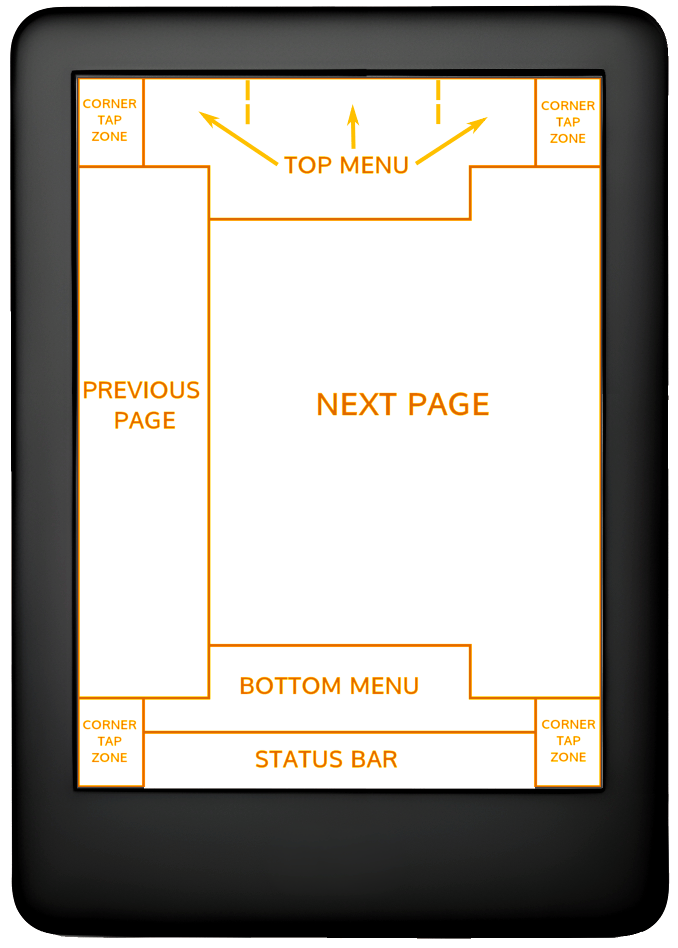
A la imatge anterior podeu veure les posicions de les zones de toc per defecte de KOReader. Per mostrar el menú superior o el menú inferior podeu tocar les zones indicades. També podeu lliscar cap avall a la zona superior per mostrar el menú superior. En dispositius sense pantalla tàctil, com el Kindle 4, podeu obrir el menú inferior prement el botó que correspon a l'acció ENTER/OK.
Si voleu obrir els dos menús alhora, podeu configurar la zona del menú superior perquè obri el menú superior i el inferior alhora des d'aquest menú:
Les zones de toc de les cantonades es poden fer servir per a molts tipus de gestos diferents, com ara TOC, DOBLE TOC, TOC AMB DOS DITS i TOCAR I MANTENIR.
Les zones de PÀGINA ANTERIOR i PÀGINA SEGÜENT també es poden fer servir alhora per a gestos de DOBLE TOC.
La zona de la Barra d'estat es pot tocar per alternar entre els elements de la barra d'estat si només n'hi ha un de visible. Si tots els elements són visibles, en tocar-la es mostrarà i s'amagarà la barra d'estat.
- Canviar el tipus de lletra*:
- Feu la lletra més grossa
- Feu la lletra més gruixuda
- Invertiu els colors de la pantalla (blanc sobre negre)
També podeu canviar altres opcions de format des del MENÚ INFERIOR per afinar l'aspecte del text. Evidentment, aquests només són consells ràpids per començar. Tenim una secció sencera dedicada a la PERSONALITZACIÓ DE L'ASPECTE DEL TEXT
Podeu controlar la llum de la pantalla des d'aquest menú. Si teniu il·luminació càlida (LED blancs normals + LED taronges), les podeu controlar per separat des d'aquest diàleg. També podeu definir un gest per a aquest diàleg:
Podeu triar una portada de llibre o una imatge personalitzada com a salvapantalles des d'aquest menú:
Podeu fer servir fitxers JPG/PNG com a salvapantalles (les imatges en escala de grisos amb un tramat adequat són les que queden millor). Transferiu els fitxers de l'ordinador a qualsevol carpeta del dispositiu i trieu aquesta carpeta com a carpeta del salvapantalles des d'aquest menú:
Consulteu aquesta publicació del fòrum de Mobileread per a informació avançada sobre com preparar imatges per al salvapantalles.
Si busqueu informació sobre les dreceres de teclat, feu clic aquí per anar a aquella secció. Aquest apartat només explica l'ús del teclat.
- Toqueu fora del camp d'entrada per tancar el teclat, i toqueu el camp d'entrada per tornar a mostrar-lo
- Llisqueu cap amunt sobre les tecles per introduir la majúscula d'aquella lletra (o la minúscula si ja sou en mode shift)
- Pots canviar l'aparença del teclat:
- Podeu seleccionar més d'una distribució:
- Podeu canviar entre les distribucions seleccionades tocant la icona del teclat
El teclat de KOReader permet introduir caràcters addicionals quan toqueu i manteniu premuda una tecla. A continuació es mostren els caràcters addicionals més utilitzats. Podeu tocar i mantenir premuda la tecla del quadre gris per obtenir els caràcters del voltant:
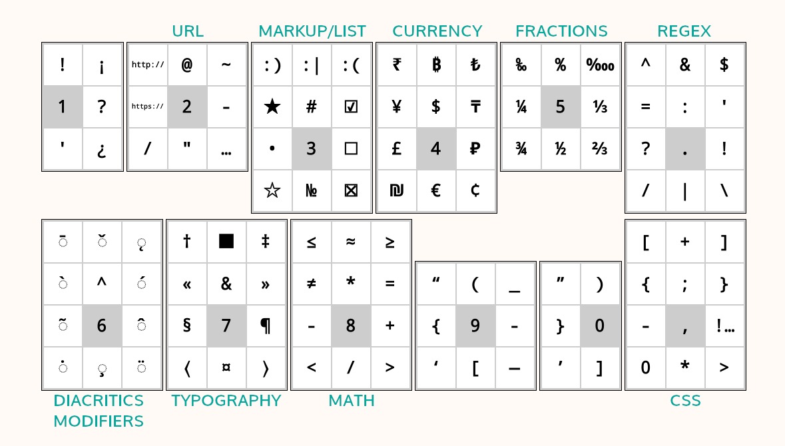
A més de la finestra emergent de pulsació llarga, també podeu introduir aquests caràcters addicionals lliscant sobre una tecla. A l'exemple següent, podeu lliscar cap amunt sobre la tecla a per introduir una A majúscula o lliscar en altres direccions per introduir els caràcters que es mostren. Tingueu en compte que l'exemple inclou la finestra emergent completa a tall de demostració. No cal obrir aquesta finestra emergent: podeu lliscar directament sobre les tecles. Quan us acostumeu a la ubicació dels caràcters addicionals, els podreu introduir molt més de pressa d'aquesta manera.
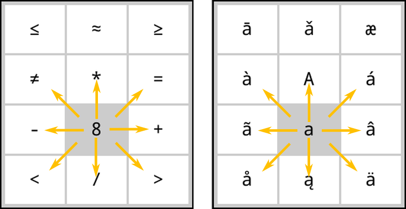
Si aquesta funció us interfereix, la podeu desactivar desmarcant:
A més, hi ha algunes dreceres per manipular el text més fàcilment. Podeu tocar i mantenir premudes aquestes tecles per a accions addicionals:
- Fletxa esquerra: mou el cursor al començament de la línia
- Fletxa dreta: mou el cursor al final de la línia
A més, la tecla de retrocés es comporta de manera diferent quan hi feu gestos de lliscament:
- Toca: Elimina un caràcter
- Pulsació llarga: suprimeix tota la línia
- Lliscar cap a l'esquerra: suprimeix la part de la paraula que hi ha a l'esquerra del cursor
- Lliscar cap amunt: suprimeix tota la paraula
Per a més informació, podeu consultar la pàgina del wiki corresponent.
KOReader també integra el teclat xinès per traços per introduir caràcters xinesos simplificats i tradicionals. En trobareu més informació al nostre wiki.
Aquest complement us permet ajustar la temperatura de color de la il·luminació en dispositius amb llum natural (groga/taronja) i activar el mode nit (colors de pantalla invertits: text blanc sobre fons negre) automàticament segons un horari. Pot controlar totes dues coses, o podeu triar el mode només control de la temperatura o només control del mode nit per ajustar l'altra manualment.
Aquest complement ve activat per defecte quan instal·leu KOReader. Si per algun motiu no apareix al menú, el podeu activar aquí:
Podeu ajustar automàticament la temperatura de color de la il·luminació de la pantalla de dues maneres diferents:
Horari establert: en aquest mode, la temperatura de color canvia segons l'horari diari que hàgiu introduït. Aquest mode és estàtic i no té en compte la durada del dia. L'horari es manté igual tot l'any.
Posició del sol: aquesta opció calcula la posició del sol a la vostra ubicació segons les coordenades i l'altitud que hàgiu introduït. La temperatura de color s'ajusta gradualment segons aquestes dades calculades de la posició del sol. Aquest mode és dinàmic: a mesura que la durada del dia canvia al llarg de l'any, el complement ajusta l'horari en conseqüència.
Primer mireu aquesta imatge per familiaritzar-vos amb els termes que fa servir el complement:
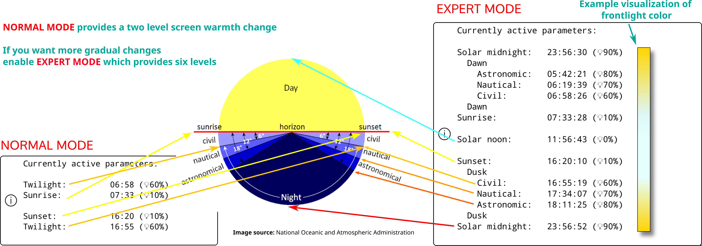
- Aneu al menú del complement:
- Toqueu l'element de menú Activar i després toqueu Segons l'horari establert
- Torneu al menú anterior i toqueu l'element de menú Configurar horari establert
- Establiu l'horari de transició de la temperatura de color fixant les hores dels diversos elements aquí. Consulteu la imatge anterior per a una explicació dels elements.
- Aneu al menú del complement:
- Toqueu l'element de menú Activar i després toqueu Segons la posició del sol
- Torneu al menú anterior i toqueu l'element de menú Configurar ubicació. Establiu correctament les coordenades (necessàries) i l'altitud (opcional) i doneu un nom a la ubicació.
- Torneu al menú anterior i toqueu l'element de menú Paràmetres de temperatura de color i mode nocturn
- Establiu l'horari de transició de la temperatura de color fixant les hores dels diversos elements aquí. Consulteu la imatge anterior per a una explicació dels elements.
Podeu veure l'horari actual amb l'opció de menú Paràmetres actualment actius.
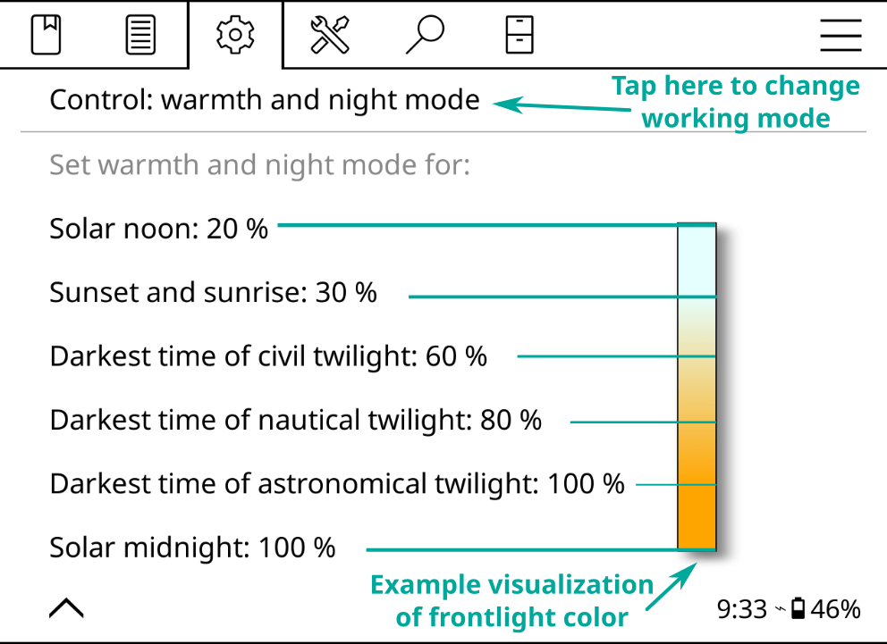
Mentre establiu els percentatges de llum càlida per als diferents intervals, també podeu assignar a un interval el Mode nit, que inverteix els colors de la pantalla quan comença aquell interval. Si la il·luminació mínima encara és massa brillant o si preferiu un fons de pàgina fosc, podeu activar aquesta funció. Per fer-ho, al diàleg següent, marqueu la casella Mode nit i toqueu Configurar.
Quan ho feu, apareixerà una icona de lluna al menú al costat d'aquest interval. Per desactivar el mode nit, només cal desmarcar la casella Mode nit d'aquell interval.
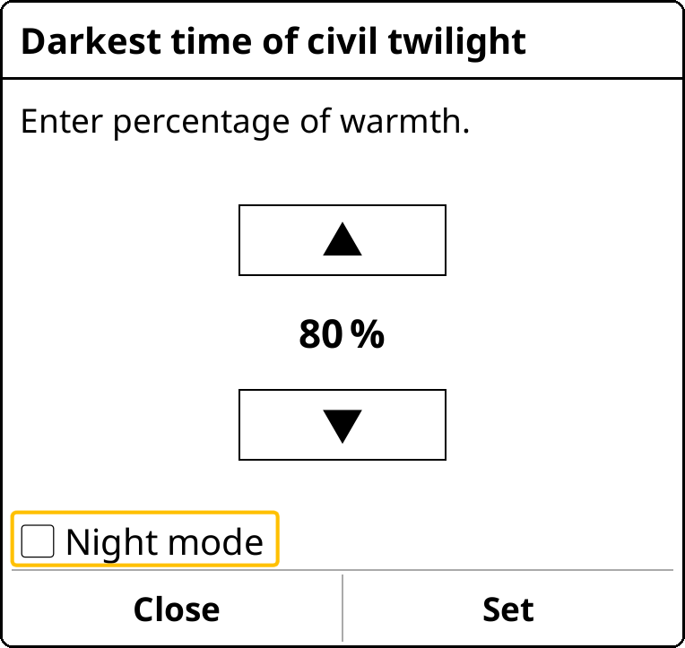
Aquesta funció encén la il·luminació a la posta de sol i l'apaga a la sortida del sol segons els Paràmetres actualment actius d'aquest complement. Podeu anul·lar aquest canvi encenent o apagant la il·luminació manualment. A la propera sortida o posta de sol, AutoWarmth la tornarà a canviar si cal. La podeu activar seleccionant l'element de menú Il·luminació apagada durant el dia d'aquest complement.
Si voleu que la temperatura de color de la il·luminació canviï ràpidament en lloc de fer-ho de manera més gradual:
- Establiu el mode a Horari establert seguint les instruccions anteriors
- I ajusteu la configuració de manera semblant a la imatge següent:
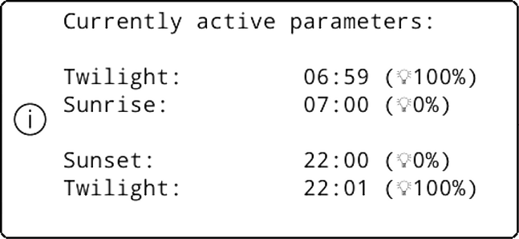
Com podeu veure a la configuració anterior, només hi ha un minut de diferència en la transició entre el dia i la nit. Per tant, la temperatura de color de la pantalla passa de 0 a 100 (o a l'inrevés) en només un minut. Podeu augmentar aquesta separació de temps perquè la transició duri més.
KOReader té una interfície d'usuari senzilla, principalment en blanc i negre, perquè els degradats i els diferents tons de gris poden causar parpellejos i imatges fantasma a les pantalles de paper electrònic, cosa que pot empitjorar l'experiència de lectura.
KOReader té 2 interfícies principals: la pantalla de lectura i el navegador de fitxers. Aquí explicarem la pantalla de lectura. El Navegador de fitxers s'explica a aquesta secció de la guia.
La PANTALLA DE LECTURA té dos menús:
- El MENÚ SUPERIOR inclou els elements de menú relacionats amb l'ús general de KOReader. Aquí accedireu als llibres, a les preferències de KOReader, als complements, etc.
- El MENÚ INFERIOR se centra en les opcions de format del document, com ara el gruix i la grandària de la lletra, l'interlineat, etc. Mentre ajusteu l'aspecte del text, interactuareu sobretot amb el MENÚ INFERIOR.
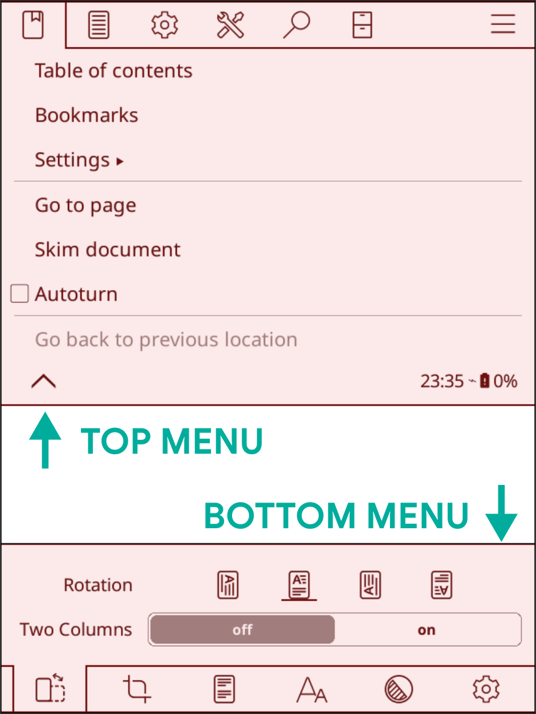
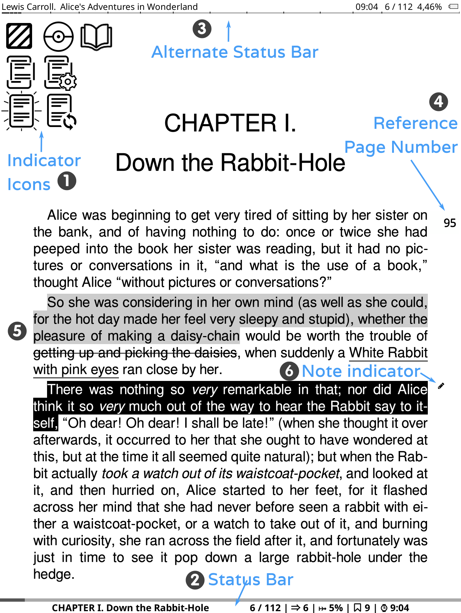
La imatge anterior mostra els elements que podeu veure a la pantalla del lector quan llegiu un llibre:
- Icones indicadores: aquestes icones us informen de determinats processos i estats en curs. Les veureu a la cantonada superior esquerra de la pantalla durant determinades operacions. Normalment són més petites, però aquí les mostrem més grans per claredat. L'apartat següent explica aquestes icones indicadores en detall: Icones indicadores
- Barra d'estat: és una àrea molt configurable on podeu veure diversa informació sobre el llibre i KOReader. Feu clic aquí per anar a la secció: Barra d'estat
- Barra d'estat alternativa: a més de la Barra d'estat per defecte, hi ha una Barra d'estat alternativa que apareix a la part superior de la pàgina si l'activeu. Feu clic aquí per als detalls: Barra d'estat
- Números de pàgina de referència: si l'editorial del llibre hi ha inclòs els números de pàgina de la versió impresa en paper, els veureu així. Feu clic aquí per a més informació: Numeració de pàgines i números de pàgina de referència
- Tipus de subratllat: aquí podeu veure els diferents tipus de subratllat. També podeu fer subratllats de colors si el dispositiu té una pantalla adequada. Feu clic aquí per anar a la secció: Marcadors, subratllats i notes
- Marcador de nota: la icona de marcador de nota apareix quan afegiu una nota a un subratllat. Hi ha diferents tipus de marcadors de nota. Feu clic aquí per a més informació: Marcadors, subratllats i notes
KOReader té alguns indicadors per informar-vos de determinats processos i estats en curs, com podeu veure a la imatge anterior. Els veureu a la cantonada superior esquerra de la pantalla durant determinades operacions.
Icones de representació parcial Aquest grup d'icones pertany al procediment de representació parcial i probablement les veureu més sovint que les altres. Apareixen quan canvieu la configuració al menú inferior. Aquesta funció us permet previsualitzar els ajustos de l'aspecte del text molt més de pressa, ja que només representa el capítol actual en lloc de tot el llibre. Gràcies a aquesta funció, girar l'orientació de la pantalla també és ara molt més ràpid. Aquesta funció està ACTIVADA per defecte. Si cal, es pot desactivar per a cada llibre (amb un toc) o globalment (amb una pulsació llarga) a: Després de confirmar els canvis, s'ha de tornar a representar tot el llibre, així que és un procediment de diversos passos. Aquestes icones mostren l'etapa de la representació, tal com s'explica a continuació: |
En aquesta etapa, el document està representat parcialment. El recompte de pàgines, la informació del peu i moltes altres coses són inexactes. Podeu veure com queda la nova configuració i continuar ajustant-la. En aquest estat també podeu passar pàgines i seguir enllaços. |
|
S'està fent una representació completa en segon pla. Encara podeu passar pàgines, seguir enllaços i canviar la configuració. |
|
La representació completa s'ha acabat, però encara no s'ha aplicat perquè KOReader espera que estigueu inactius per tornar a carregar la resta del llibre (inactiu = sense interactuar amb el dispositiu). Encara podeu passar pàgines, seguir enllaços i canviar la configuració. |
|
Heu estat inactius una estona i KOReader està tornant a carregar tot el document. En aquest pas, KOReader queda bloquejat per evitar interaccions. |
Icona de subratllat Aquesta icona apareix quan sou al mode de selecció i subratllat. KOReader té un mode de subratllat addicional que us permet començar un subratllat i passar pàgines per fer subratllats llargs que poden abastar diverses pàgines. Podeu llegir-ne més a la secció MARCADORS, SUBRATLLATS I NOTES d'aquesta guia. Quan comenceu un subratllat en aquest mode, aquesta icona es mostra a la cantonada per recordar-vos que encara sou al mode de subratllat. Desapareix quan acabeu el subratllat seleccionant el final del passatge o quan cancel·leu el subratllat (tocant de nou el començament del subratllat o aquesta icona de subratllat). |
Icona de Pokéball Aquesta icona apareix quan premeu una paraula durant molta estona (intencionadament o per accident). KOReader té un menú normal de pulsació llarga i un menú addicional de pulsació molt llarga quan manteniu el dit més de 3 segons. Aquesta icona vol dir que heu activat aquest menú de pulsació molt llarga. |
Icona del mode de pas de pàgines Aquesta icona apareix quan toqueu la cantonada superior esquerra si:
Aquest mode mostra temporalment la pàgina completa sense retallar, escalada perquè càpiga a la pantalla. En aquest mode podeu passar pàgines. Per sortir d'aquest mode, toqueu aquesta icona. |
Els tipus de document com epub, mobi, html no tenen números de pàgina fixos, perquè són documents redistribuïbles. Això vol dir que aquests documents es poden ajustar segons la mida de la pantalla i l'orientació del dispositiu (a diferència, per exemple, dels fitxers pdf o djvu, que tenen una mida de pàgina fixa).
Si augmenteu la grandària de lletra d'un document redistribuïble, el recompte de pàgines també augmentarà, perquè ara cap menys text en una sola pàgina. Això de vegades causa problemes, perquè un subratllat que heu fet a la pàgina 38 pot quedar a la pàgina 42 després d'ajustar la lletra.
KOReader admet la funció de números de pàgina de referència, que permet a les editorials incrustar els números de pàgina dels llibres impresos directament a la versió electrònica. Quan activeu aquesta funció, KOReader no calcula els números de pàgina ell mateix, sinó que us mostra els números de pàgina incrustats per l'editorial. Això vol dir que el número de pàgina que veieu a la Barra d'estat coincideix amb la versió impresa del llibre.
Avantatges dels números de pàgina de referència:
- Els números de pàgina de referència permeten fer cites precises, ja que coincideixen amb els números de pàgina de les versions impreses.
- Els números de pàgina de referència poden ajudar a navegar, sobretot als lectors que coneixen la versió impresa d'un llibre. Us poden ajudar a trobar més fàcilment passatges o cites concrets a la versió digital.
- Com que els llibres digitals es poden llegir en diversos dispositius i plataformes, cadascun amb la seva pròpia grandària de lletra i configuració de visualització, els números de pàgina que es mostren poden variar molt. Els números de pàgina de referència proporcionen un punt de referència coherent quan llegiu el mateix llibre en diferents dispositius, com un lector electrònic i un telèfon, alhora.
Podeu activar aquesta funció des de:
Si també marqueu l'opció Mostra les etiquetes de pàgina de referència al marge del mateix menú, aquests números de pàgina es mostraran al costat del text amb una lletra petita.
Tingueu en compte que aquest menú només apareix si el llibre té números de pàgina de referència incrustats.
KOReader té dues barres d'estat: una Barra d'estat inferior, que està activada per defecte, i una Barra d'estat alternativa, que apareix a la part superior de la pàgina si l'activeu. Aquesta Barra d'estat alternativa només està disponible en documents redistribuïbles (epub, html, docx, rtf, txt…).
La Barra d'estat inferior és la més nova i la que es manté activament. La Barra d'estat alternativa és una resta de versions anteriors de KOReader, així que no hi afegim funcions noves. Tot i així, podeu activar aquesta Barra d'estat alternativa si us resulta útil. La podeu activar des de:
Podeu configurar la Barra d'estat alternativa des d'aquest menú:
Les instruccions de la resta d'aquesta secció són per a la Barra d'estat inferior.
Podeu configurar la barra d'estat inferior des d'aquest menú. No dubteu a explorar el submenú PARÀMETRES per personalitzar la barra d'estat al vostre gust.
Hi ha molts elements que podeu mostrar a la barra d'estat. Però, per defecte, només se'n mostra un cada vegada i heu de tocar la barra d'estat per alternar-los. Si voleu mostrar tots els elements alhora, activeu-ho aquí:
Si heu activat l'opció anterior, no podeu amagar la barra d'estat tocant-la. Si la voleu amagar, heu d'assignar aquí un gest per mostrar o amagar la barra d'estat:
Ordenació dels elements de la barra d'estat:
Hi ha un element especial de la barra d'estat anomenat Text personalitzat. Aquest element pot mostrar el text que trieu a la barra d'estat. També podeu fer servir aquesta funció per crear un separador entre els elements de la barra d'estat, com podeu veure a l'exemple següent:
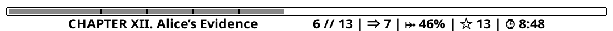
- Primer activeu aquesta opció amb una pulsació curta des d'aquest menú
- Després manteniu-la premuda de nou per obrir-ne la configuració. Introduïu un caràcter d'«espai» a la primera casella i el nombre de repeticions a la segona, que determinarà l'amplada del separador.
Podeu triar un altre caràcter com a separador. També podeu moure aquest element com els altres elements de la barra d'estat per canviar-ne l'ordre i ajustar els grups.
La Barra de progrés de la barra d'estat normalment mostra el progrés de tot el llibre. Però també pot mostrar el progrés del capítol actual. Això pot ser útil, per exemple, si un llibre té molts capítols curts. En aquest cas pot ser difícil veure el progrés dins el capítol actual, així que la barra d'estat del capítol pot ser més informativa. Podeu activar aquesta funció des d'aquest menú:
També podeu assignar un gest per canviar entre la barra de progrés normal i la del capítol. Trobareu aquesta acció a:
Aquí només farem un resum dels elements de l'estructura del menú superior perquè us familiaritzeu amb el menú. Trobareu informació detallada a les seccions corresponents d'aquesta guia.
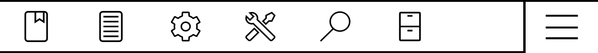
- NAVEGACIÓ: aquest menú conté elements que us permeten navegar pel llibre que esteu llegint. Índex, marcadors, mapa del llibre...
- COMPOSICIÓ: aquest menú conté elements que us permeten canviar l'aspecte del llibre. Configuració de la lletra, ajustos d'estil...
- PARÀMETRES: aquest menú conté la configuració de KOReader i del dispositiu. Paper electrònic, llum, configuració de gestos...
- EINES: aquest menú conté complements que poden ampliar les funcions de KOReader.
- CERCA: aquest menú conté elements relacionats amb la cerca i la consulta. Cerca de text, diccionari, traducció, Viquipèdia...
- NAVEGADOR DE FITXERS: aquest botó obre el navegador de fitxers, que és la interfície per gestionar la biblioteca.
- PRINCIPAL: aquest menú conté eines per accedir als llibres, com l'historial, els preferits i les col·leccions. També hi ha els elements d'informació del llibre, actualització i sortida.
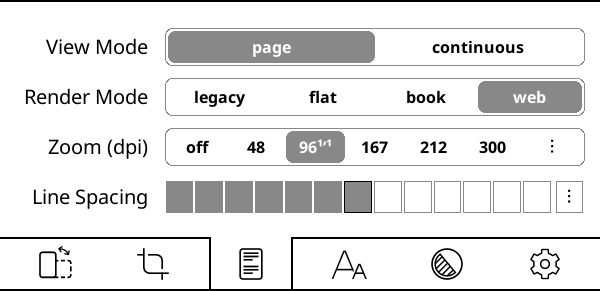
Mode de visualització: si canvieu al mode continu, podeu desplaçar el document com una pàgina web. Aquest mode és més adequat per a pantalles que no són de paper electrònic (LCD, OLED). En el mode continu perdeu els marges superior i inferior, així que el text pot quedar tallat a la primera i l'última línia de la pantalla. Per resoldre aquest problema, podeu activar la Superposició de pàgines:
Mode de representació: aquesta opció determina com KOReader representa el document. El valor per defecte és web i, en general, no cal canviar-lo. Quan un llibre (o una pàgina web desada) és molt complicat (amplades o marges especificats, marges negatius, elements flotants, etc.) i la disposició es veu malament o surt de la pantalla, podeu provar altres modes de representació.
Zoom (dpi): aquesta opció es pot entendre com un factor de zoom general del document (excepte la grandària de lletra). A 96 dpi (el valor per defecte), les imatges del document es representen a les seves dimensions originals. Bàsicament, fareu servir aquesta opció si voleu fer les imatges més grans sense fer més gran el text.
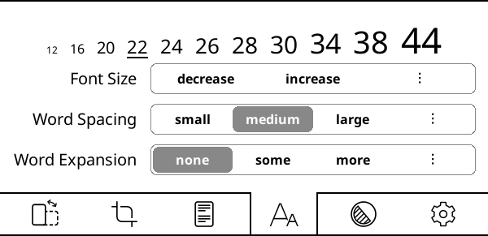
Les opcions d'Espaiat de paraules i Expansió de paraules estan relacionades i determinen com es veurà el text quan està justificat. Quan es justifica el text, s'afegeix espai entre les paraules perquè les dues vores de cada línia quedin alineades amb els dos marges. Com que el nombre de paraules de cada línia no sempre és igual, en l'alineació justificada el text s'ha de comprimir o expandir per omplir la línia.
Espaiat de paraules: quant es poden comprimir els caràcters d'espai d'una línia de text per fer-hi cabre més paraules. Aquesta opció no afecta les paraules, només canvia l'espai entre elles.
Expansió de paraules: si hi ha massa espai en blanc en una línia, quina part se'n pot repartir dins de les paraules expandint-les. Aquesta opció afecta l'aspecte de les paraules. Si no voleu que les paraules s'expandeixin, establiu-la a Cap.
Podeu provar diferents valors fins que el text us sembli agradable i després establir-los com a valors per defecte des dels diàlegs respectius.
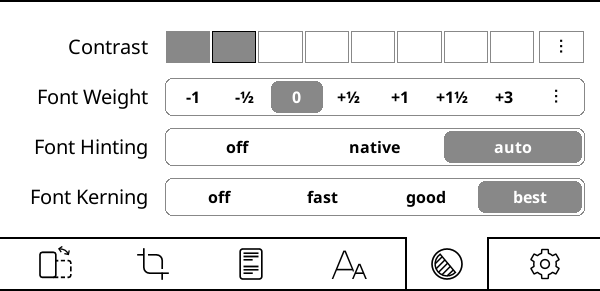
El Contrast i l'Amplada de lletra són dues opcions que podeu fer servir per fer el text més gruixut (o més fi). Podeu aconseguir el mateix aspecte amb qualsevol de les dues, però fan servir mètodes diferents. Evidentment, les podeu fer servir totes dues alhora.
Les diferències entre elles es poden resumir així:
+ No canvia l'amplada de la lletra, la llargada del llibre es manté igual
+ No cal tornar a representar el document, és més ràpid
- Es pot veure malament en pantalles LCD o de pocs DPI
+ Farà servir tipus de lletra amb el gruix adequat si els teniu instal·lats
+ Es veu millor en pantalles LCD o de pocs DPI
- Cal tornar a representar la lletra, és més lent
L'Optimització de lletres (hinting) ajusta el text per obtenir la màxima llegibilitat segons la graella de píxels de la pantalla. nadiu fa servir les instruccions d'optimització internes del tipus de lletra, i auto fa servir l'algorisme d'optimització de FreeType. auto és una opció més segura perquè els fitxers de tipus de lletra que hàgiu instal·lat poden tenir instruccions d'optimització problemàtiques. A més, auto gestiona millor el text CJK. Podeu provar diferents valors per veure quin queda millor al vostre dispositiu.
L'Interlletratge de lletres ajusta l'espai entre les lletres per obtenir un resultat visualment agradable. El valor per defecte és l'opció millor, que pot ser més lenta en obrir fitxers (segons el dispositiu), però admet millor les lligadures (vegeu-ne un exemple a la imatge següent), els glifs àrabs units i algunes altres escriptures. Si el dispositiu és lent, podeu provar bo, que és més ràpid i pot quedar bé igualment amb text occidental en alfabet llatí.
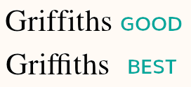
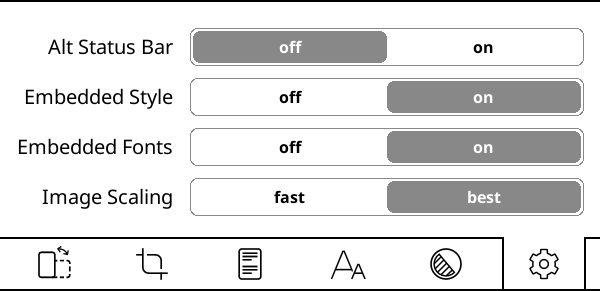
La Barra d'estat alternativa activa una barra d'estat alternativa que només està disponible en documents redistribuïbles (EPUB, HTML, DOCX, RTF, TXT…). Després d'activar-la aquí, podeu configurar la barra d'estat alternativa des de:
L'Estil incrustat i els Tipus de lletra incrustats determinen si es fan servir (o s'ignoren) els estils i tipus de lletra de l'editorial incrustats al document per representar-lo. Són interruptors generals d'activació i desactivació. Podeu fer ajustos més precisos per al document des de:
L'Escalat d'imatges determina com es representen les imatges del document. millor queda més bé, però és més lent.
La interfície d'usuari i les opcions de KOReader poden canviar segons el tipus de fitxer que obriu. Hi ha dues categories principals de documents:
- Documents de disseny fix (pdf, djvu, fitxers d'imatge...)
- Documents redistribuïbles (epub, html, docx, rtf, txt…).
KOReader té moltes funcions, així que el seu sistema de menús reflecteix aquesta complexitat. Hi ha una funció de Cerca als menús per trobar elements de menú ràpidament. Si recordeu el nom d'un element de menú però no on és, podeu fer servir aquesta funció:
També podeu assignar aquesta funció a un gest o afegir-la al Menú ràpid per accedir-hi més de pressa.
Al menú inferior, si toqueu i manteniu premut el nom d'una opció, en podeu veure l'explicació. |
|
Pots canviar la llengua d'interfície via: |
|
Si voleu canviar la mida de la interfície d'usuari, hi ha una opció de dpi per fer-ho: Podeu triar un valor del menú o seleccionar Configurar DPI per introduir un valor i afinar-lo: més DPI = interfície més gran. Tingueu en compte que també hi ha una opció de Zoom (dpi) a la barra inferior. Aquesta només afecta els documents. En trobareu l'explicació a la secció següent. |
Si toqueu i manteniu premuda una opció o un element de menú (gruix de la lletra, interlineat, etc.), podeu establir-ne el valor com a predefinit. El nou valor només s'aplicarà als llibres que obriu a partir d'ara. Els llibres oberts anteriorment conservaran la seva configuració. Podeu identificar els valors per defecte per una estrella (★) al menú o per una vora negra al voltant dels indicadors, com es veu a continuació: 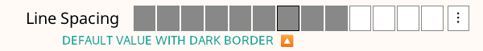 |
Podeu tancar els diàlegs de pantalla completa (Historial, Índex, Estadístiques de lectura, etc.) lliscant cap avall. (Excepte la finestra de Marcadors. Per tancar aquesta, podeu fer servir qualsevol gest de multilliscament) |
Podeu fer una captura de pantalla fent un lliscament diagonal llarg amb el dit. També es fa una captura de pantalla tocant les cantonades diagonals oposades. Podeu fer servir aquest segon gest, per exemple, quan mireu una imatge. A més, si el dispositiu té teclat, podeu fer una captura de pantalla amb la drecera Alt + Shift + G. |
Si voleu obrir una pàgina a l'atzar d'un llibre, hi ha una acció Salta a una pàgina aleatòria que podeu assignar a qualsevol gest. És a la categoria Lector de la Configuració de gestos. |
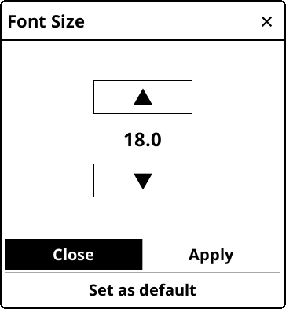 En els diàlegs que contenen botons de fletxa d'ajust com el de dalt, podeu tocar i mantenir premuts els botons de fletxa per canviar el valor en increments més grans. Podeu tancar aquest tipus de diàleg (que no és de pantalla completa) tocant fora de la finestra. Podeu moure aquest tipus de diàleg mantenint premut el títol de la finestra i arrossegant-lo. Podeu fer que aquest tipus de diàleg sigui semitransparent tocant i mantenint premut el títol de la finestra (quan vulgueu veure el text de sota mentre ajusteu un valor). |
Crear carpetes noves - en situacions en què heu de triar una ubicació (emmagatzematge al núvol, complement de moure a l'arxiu, complement d'exportació), KOReader us presenta una pantalla que s'assembla al Navegador de fitxers. Si voleu crear una carpeta nova mentre trieu:
|
KOReader admet la consulta al diccionari en documents EPUB i en PDF/DJVU escanejats. Per veure la definició o la traducció d'una paraula, només cal que la toqueu i la mantingueu premuda. En mantenir premuda una paraula s'obre un diàleg on també podeu cercar la selecció al document per trobar-ne més aparicions o consultar-la a la Viquipèdia. |
Si voleu consultar la data actual, podeu tocar el rellotge del MENÚ SUPERIOR. |
KOReader té tres tipus de desplaçament tàctil. Hi podeu accedir des de:
- Desplaçament clàssic: aquest mode funciona exactament com el desplaçament del telèfon o de la tauleta.
- Desplaçament turbo: aquest mode us permet desplaçar-vos més de pressa que amb el desplaçament clàssic. També podeu desplaçar diverses pàgines sense aixecar el dit. La quantitat de desplaçament és proporcional a la distància que moveu el dit després d'haver començat a desplaçar-vos.
- Desplaçament en deixar anar: aquest tipus de desplaçament és més adequat per a pantalles de paper electrònic, perquè, a diferència dels altres tipus, no actualitza la pàgina contínuament mentre us desplaceu. Funciona com el desplaçament clàssic, però no es mostren els passos intermedis. Així, quan us desplaceu amb el dit i després el deixeu anar, la pàgina salta a aquella posició. És especialment útil per reposicionar i ajustar la vista si el llibre conté imatges o taules i les voleu veure senceres.
Aquesta funció útil funciona com el botó Enrere del navegador. Quan salteu a una altra part del llibre amb el giny per fullejar, la llista de marcadors, el mapa del llibre, etc., KOReader recorda la ubicació anterior. És útil, per exemple, si seguiu un enllaç o una referència interns. Amb un toc podeu tornar d'on veníeu. Podeu accedir a aquesta funció des de:
També podeu anar endavant des del mateix menú. Aquesta funció està assignada al gest de multilliscament . Si voleu, la podeu assignar a un altre gest (com tocar una cantonada) o afegir-la al Menú ràpid.
KOReader normalment fa una actualització completa a les pàgines que contenen imatges (que podeu observar com un flaix negre). El motiu és eliminar les restes i les imatges fantasma de la pàgina anterior. Però pot no ser necessari segons el dispositiu i les preferències personals. Podeu desactivar aquesta actualització automàtica aquí:
També podeu desactivar des d'aquí els flaixos negres de la interfície d'usuari si us molesten:
Hi ha diferents maneres de moure-us pel document a KOReader, cadascuna amb els seus punts forts. Podeu fer servir:
- Giny per fullejar
- Mapa del llibre
- Navegador de pàgines
El Giny per fullejar és una eina de navegació molt funcional. El podeu fer servir per:
- Saltar a qualsevol part del llibre tocant directament la barra de progrés o introduint el número de pàgina
- Navegar entre capítols
- Navegar entre marcadors
Com obrir el giny per fullejar:
- Amb una pulsació llarga a l'àrea de la Barra d'estat a la part inferior de la pantalla
- Des d'aquest menú:
- Hi podeu assignar un gest
- El podeu afegir al Menú ràpid
Primer fem una ullada ràpida al diagrama següent. Veureu que hi ha dos Ginys per fullejar diferents. Tenen les mateixes funcions, només en canvia la mida:
- GINY PER FULLEJAR DE MIDA COMPLETA: és el giny per fullejar per defecte que veureu en instal·lar KOReader. És més gran que el giny per fullejar compacte, així que els botons són més còmodes de prémer. Aquest giny s'obre al centre de la pantalla.
- GINY PER FULLEJAR COMPACTE: és la versió més prima del giny per fullejar per defecte. Pot ser més útil, per exemple, si esteu fent subratllats. Com que aquest giny és més petit i s'obre a la part superior o inferior de la pantalla, no tapa tant la pàgina com el giny per defecte.
Si voleu fer servir el giny per fullejar compacte, ho podeu fer triant a dalt o a baix des d'aquest menú:
CONSELL Tots dos ginys per fullejar es poden moure. Els podeu moure prement una àrea buida del giny i arrossegant-lo. També podeu fer que aquests diàlegs siguin semitransparents mantenint premuda una àrea buida del giny. Però la semitransparència només s'activa a la posició inicial. Un cop mogut, una pulsació llarga el torna a la posició inicial.
Ara tornem al diagrama. Podeu veure que en alguns botons hi ha dues descripcions de colors diferents: blau i taronja. Vol dir que aquell botó té dues funcions: una acció de pulsació normal i una acció de pulsació llarga. Si premeu normalment, farà la funció BLAVA. Si premeu més estona, farà la funció TARONJA.
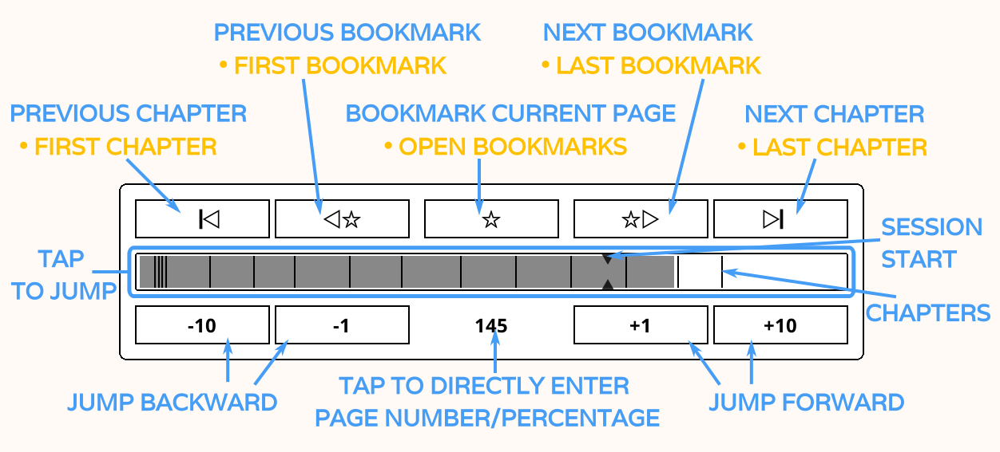
Explicació dels elements numerats (l'acció de pulsació llarga en negreta):
- Salta al començament del capítol anterior / Salta a la primera pàgina del llibre
- Salta al marcador anterior / Salta al primer marcador del llibre
- Afegeix un marcador a la pàgina actual / Obre el diàleg de marcadors
- Salta al marcador següent / Salta a l'últim marcador del llibre
- Salta al començament del capítol següent / Salta a l'última pàgina del llibre
- Salta enrere (-) o endavant (+) aquest nombre de pàgines
- Aquest número mostra el número de pàgina actual. Si el toqueu, s'obre un diàleg que us permet introduir un número de pàgina o un percentatge per saltar-hi directament. Si el manteniu premut, us torna a la pàgina on heu obert el giny per fullejar. Això és útil, per exemple, si voleu consultar ràpidament una altra part del llibre i tornar a la lectura on l'havíeu deixada.
- Aquesta és la barra de progrés. Les línies fines són les marques de capítol, que indiquen el començament dels capítols. Podeu tocar aquesta barra de progrés per saltar a aquella part del llibre. Les fletxes petites són les fletxes d'inici de sessió, que marquen el lloc on heu començat a llegir aquest llibre a la sessió actual. Aquestes fletxes es restableixen quan canvieu de llibre.
- Aquest botó del giny per fullejar compacte funciona igual que la funció de pulsació llarga de l'element número 7. Us torna a la pàgina on heu obert el giny per fullejar. Això és útil, per exemple, si voleu consultar ràpidament una altra part del llibre i tornar a la lectura on l'havíeu deixada.
CONSELL Si voleu obrir una pàgina a l'atzar d'un llibre, hi ha una acció Salta a una pàgina aleatòria que podeu assignar a qualsevol gest. És a la categoria Lector de la Configuració de gestos.
KOReader pot mostrar els límits dels capítols dels documents al GINY PER FULLEJAR i a la BARRA DE PROGRÉS.
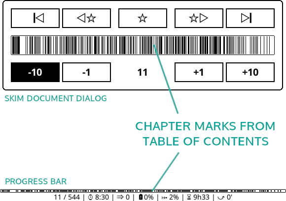
Si el document té massa nivells d'encapçalament, les marques de capítol poden semblar atapeïdes com a l'exemple anterior. Podeu canviar la profunditat dels nivells de marques d'índex visibles des de:
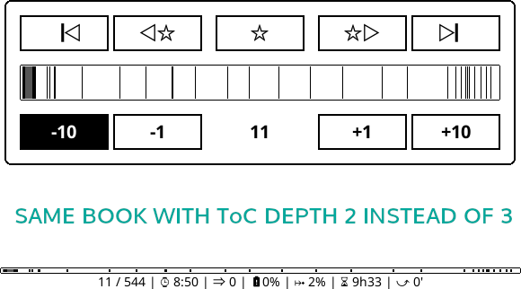
També podeu fer servir aquest índex reduït per a:
- títols de capítol (si es mostren a la Barra d'estat)
- navegació per capítols
- estimacions del temps de lectura restant
Aquestes opcions són al mateix menú.
Si el document no té índex, podeu activar l'ÍNDEX ALTERNATIU. Quan aquesta opció està activada, KOReader crearà un índex a partir dels encapçalaments del document (si n'hi ha) o dels fitxers HTML individuals de l'EPUB. Manteniu premut aquest element de menú per a més informació:
Podeu trobar més informació sobre les eines d'índex disponibles a KOReader en aquesta secció de la guia: EINES DE L'ÍNDEX
El mapa del llibre és una funció potent i exclusiva de KOReader que pot ser molt útil per obtenir una visió general d'un llibre. Per exemple, si llegiu un llibre de manera no lineal, saltant-vos algunes parts per llegir-les més endavant, seria difícil fer el seguiment del progrés. El mapa del llibre us pot mostrar d'un cop d'ull quines parts del llibre ja heu llegit.
A més, podeu:
- Veure quant de temps heu passat a cada pàgina (si el complement Estadístiques de lectura està activat)
- Comprovar quines pàgines tenen marcadors, subratllats i notes
- Navegar directament a qualsevol part del llibre, com amb el GINY PER FULLEJAR
Podeu accedir al mapa del llibre des del menú i també podeu assignar-hi un gest per accedir-hi més de pressa:
Quan obriu el Mapa del llibre per primera vegada mentre llegiu un llibre, estarà en mode Vista de quadrícula i farà cabre tots els capítols en una sola pantalla per oferir la millor visió general inicial del contingut del llibre. Per obtenir informació detallada sobre l'ús, toqueu la icona d'informació de la cantonada superior esquerra. Podeu tancar el mapa del llibre tocant la X de la cantonada superior dreta o amb qualsevol gest de multilliscament (AMUNT-AVALL, ESQUERRA-DRETA, etc.).
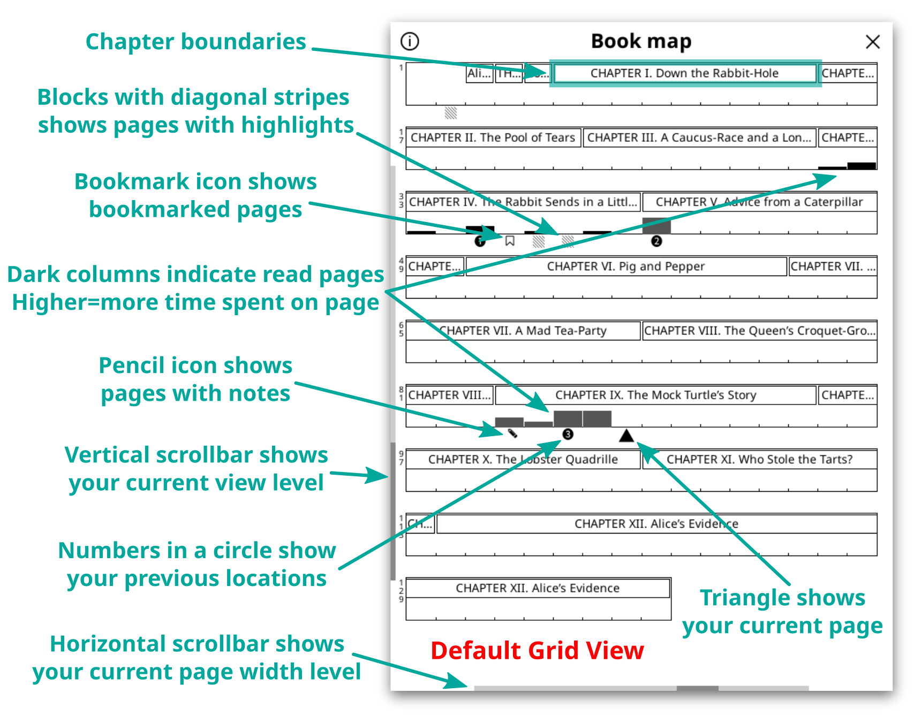
- Límits dels capítols
- Les barres negres indiquen les pàgines llegides. Les barres més altes volen dir més temps passat a la pàgina.
- La icona de marcador mostra les pàgines amb marcador, com indica el nom.
- La icona de quadrat ratllat mostra les pàgines amb subratllats.
- La icona de llapis mostra les pàgines amb notes.
- Els números dins d'un cercle mostren les ubicacions anteriors. Quan trieu Retrocedir a la posició prèvia al menú, hi tornareu per ordre.
- El triangle mostra la pàgina actual.
- La barra de desplaçament vertical mostra el nivell de vista actual.
- La barra de desplaçament vertical mostra el nivell d'amplada de pàgina actual.
Podeu personalitzar el Mapa del llibre canviant aquestes opcions:
- Primer proveu de lliscar cap a l'ESQUERRA i cap a la DRETA per la vora inferior de la pantalla per canviar l'amplada de les columnes que indiquen les pàgines i observeu com canvia l'escala del mapa.
- Després proveu de lliscar AMUNT i AVALL per la vora esquerra de la pantalla per canviar la profunditat dels títols de capítol i canviar a la Vista plana. Vegeu-ne els exemples següents.
A més de la Vista de quadrícula per defecte de dalt, aquí podeu veure la Vista plana a l'esquerra i la vista de quadrícula sense títols de capítol a la dreta. Fixeu-vos com canvia la barra de desplaçament vertical de l'esquerra entre les vistes. Si voleu tornar a la vista per defecte, podeu mantenir premuda la icona d'informació de la cantonada superior esquerra.
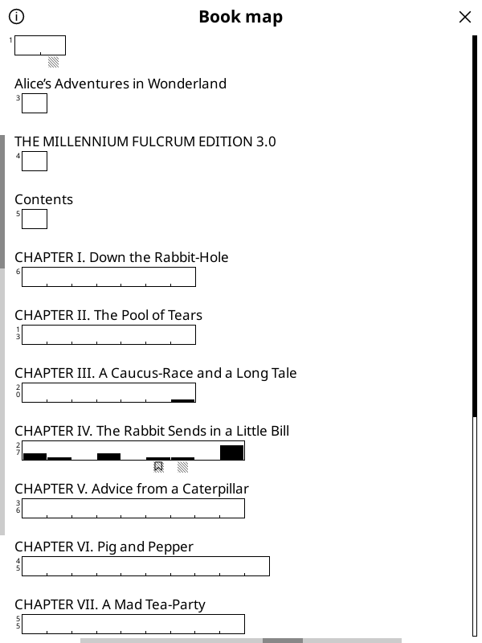
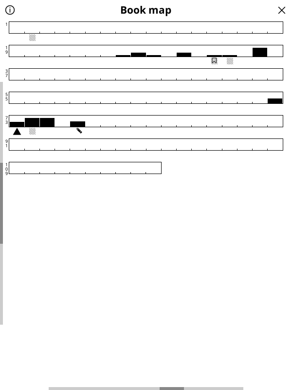
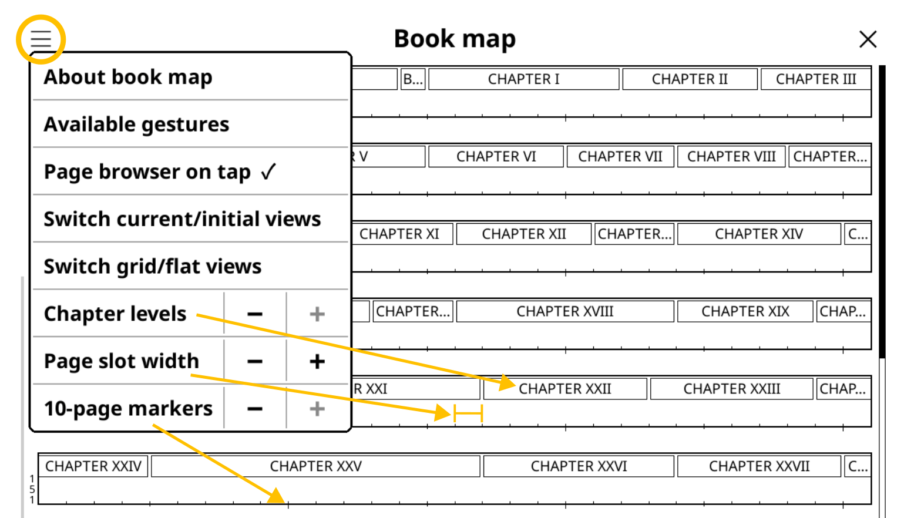
Quan toqueu la icona de menú a la pantalla del Mapa del llibre, se us presenta el menú de dalt. Les opcions del menú s'expliquen a continuació:
- Sobre el mapa del llibre: breu explicació de l'ús del mapa del llibre i descripció de les icones.
- Gestos disponibles: gestos que podeu fer servir per canviar la configuració del mapa del llibre en lloc de fer servir aquest menú.
- Navegador de pàgines en prémer: si està marcat, quan toqueu una pàgina al mapa del llibre s'obre el Navegador de pàgines, que us mostra una visió general de l'àrea seleccionada. Si desactiveu aquesta opció, un toc al mapa del llibre us porta directament a aquella pàgina. Però recordeu que, segons factors com la mida de la pantalla, la sensibilitat de la pantalla tàctil, la precisió del toc, etc., podeu acabar en pàgines adjacents.
- Alterna entre les vistes actual/inicial: si heu personalitzat la vista del mapa del llibre, en tocar aquesta opció s'alterna entre la vista per defecte i la vostra vista personalitzada.
- Alternar entre vista en quadrícula/plana: alterna entre les vistes de capítols separats o de capítols continus.
- Nivells dels capítols: canvia la profunditat dels nivells de capítol i subcapítol.
- Amplada de les cel·les de pàgina: fa cada cel·la de pàgina més ampla o més estreta.
- Marcadors de 10 pàgines: a mesura que augmenteu aquest valor, primer afegirà marques cada 10a pàgina, després les farà més grans i, finalment, afegirà marques cada 5a pàgina.
El navegador de pàgines es pot fer servir per navegar entre pàgines com en un àlbum de fotos, mostrant miniatures de les pàgines en una quadrícula. Podeu obrir el Navegador de pàgines tocant el Mapa del llibre o des del menú. També podeu assignar-hi un gest per accedir-hi més fàcilment.
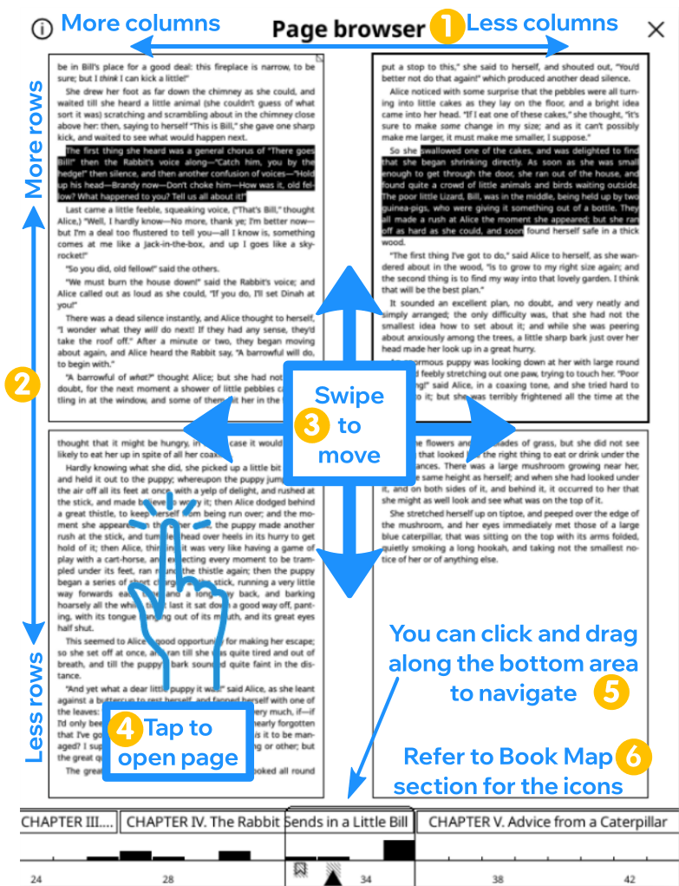
L'ús del Navegador de pàgines s'explica a continuació. També podeu tocar el botó de menú d'hamburguesa de la cantonada superior esquerra d'aquesta pantalla per veure aquestes explicacions. Una pulsació llarga al mateix botó afegeix o treu els títols de capítol de la franja inferior.
- Llisqueu cap a l'esquerra / dreta per aquesta vora superior per augmentar / reduir el nombre de columnes.
- Llisqueu amunt / avall per aquesta vora esquerra per augmentar / reduir el nombre de files.
- Llisqueu per l'àrea de les pàgines per moure les pàgines visualitzades. Amunt / avall per desplaçar-vos una fila (2 pàgines a l'exemple), esquerra / dreta per desplaçar-vos una pantalla (4 pàgines a l'exemple).
- Toqueu qualsevol pàgina per obrir-la a la vista de lectura.
- A l'àrea inferior, en tocar una pàgina es centra la vista de miniatures en aquella pàgina. En lliscar cap a l'esquerra / dreta se salta l'amplada d'una franja.
- Les icones de l'àrea inferior són les mateixes que les del Mapa del llibre i s'expliquen a aquella secció.
El mapa del llibre i el navegador de pàgines tenen un tema alternatiu amb un esquema d'ombrejat diferent que podeu activar des dels seus menús d'hamburguesa. Aquest tema fa servir colors alterns per als encapçalaments de capítol, de manera que els límits dels capítols són més visibles al Mapa del llibre i al Navegador de pàgines. Però l'ús del color gris en aquest tema requereix flaixos negres, cosa que pot molestar alguns usuaris. Podeu provar els dos i fer servir el que us agradi.
Alguns dels llibres digitals que trobareu poden no tenir un índex (ToC) adequat. Segons com s'hagi preparat el llibre, podeu trobar aquests problemes d'índex:
- El llibre no té índex, així que no podeu saltar entre capítols ni veure els temps de lectura restants
- Hi ha un índex, però no és gaire útil perquè té títols de capítol erronis o hi falten títols
KOReader té algunes funcions que podeu fer servir en llegir llibres amb un índex problemàtic.
Tingueu en compte que l'Índex alternatiu no està disponible en documents de disseny fix com PDF, DJVU, etc., perquè necessita etiquetes HTML per crear un índex. Les funcions d'Índex personalitzat i de Fluxos ocults personalitzats estan disponibles per a tots els tipus de fitxer.
La primera funció és l'Índex alternatiu, que trobareu a:
L'Índex alternatiu intenta crear un índex a partir dels encapçalaments del llibre (etiquetes H1 a H6 dels fitxers HTML de l'EPUB). Si el llibre no conté cap encapçalament, intentarà crear un índex a partir dels fragments del document (els fitxers HTML individuals del llibre EPUB), que apuntarà al començament de cada fitxer.
Podeu triar quins nivells d'encapçalament s'inclouen (o s'ignoren) a l'índex des d'aquest menú:
La funció d'índex personalitzat us permet crear el vostre propi índex a partir de les parts seleccionades del llibre. Aquest índex només pot tenir un nivell, així que no podeu tenir subcapítols quan feu servir aquesta funció. Per crear el vostre propi índex, primer activeu:
Quan activeu aquesta funció, s'afegiran a la interfície d'usuari elements de menú nous que us permeten seleccionar els capítols. Podeu afegir un capítol a l'índex des de dos llocs:
- Des d'un subratllat: mentre llegiu un llibre, seleccioneu un text com si el subratlléssiu o manteniu premuda una paraula. Al menú emergent veureu l'element Iniciar l'índex del capítol. Quan el premeu, veureu un diàleg que us demana que introduïu el títol del capítol. El text seleccionat ja hi estarà introduït. Editeu el títol si cal i premeu crear.
- Des del navegador de pàgines: obriu el navegador de pàgines des de
Manteniu premuda la miniatura de la pàgina que voleu que sigui el començament del capítol i seleccioneu l'element Iniciar l'índex del capítol del menú emergent. Veureu un diàleg que us demana que introduïu el títol del capítol.
Quan hàgiu acabat de crear l'índex i no vulgueu veure aquests botons addicionals, els podeu desactivar desmarcant:
Crear aquest índex no modificarà l'índex original que porta el llibre. Podeu esborrar l'índex personalitzat des d'aquest mateix menú (si en voleu crear un de nou). I podeu desactivar aquesta funció completament de la mateixa manera que l'heu activada, si voleu tornar a l'índex original. Tingueu en compte que si desactiveu aquesta funció després de crear un índex personalitzat per tornar a l'original, l'índex personalitzat no se suprimirà. Encara podreu alternar entre l'índex original i el personalitzat.
Alguns llibres o documents poden contenir seccions llargues de notes o de bibliografia. Per exemple, un llibre científic de 250 pàgines en què les darreres 50 pàgines són apèndixs, índex i referències. Normalment aquestes pàgines s'inclouen a la barra de progrés i als càlculs del temps de lectura, perquè formen part del llibre. Però en general aquestes seccions hi són com a referència i no es llegeixen senceres, així que potser les voldreu excloure perquè el recompte de pàgines restants i les estimacions de temps siguin més precisos. O potser teniu una antologia que conté alguns relats que ja heu llegit. La funció de Fluxos ocults personalitzats de KOReader us permet excloure aquest tipus de parts del llibre.
Mireu la imatge per fer-vos una idea general del procés. Els passos s'expliquen després de la imatge:
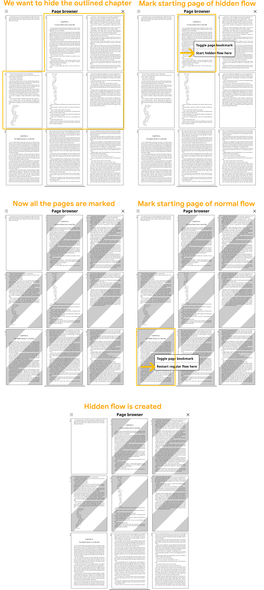
Com excloure una secció creant un flux ocult:
- Aneu a la primera pàgina de la secció que voleu excloure
- Obriu el Navegador de pàgines des de:
- Manteniu premuda la miniatura de la pàgina que voleu que sigui el començament de la secció exclosa i seleccioneu l'element Iniciar el flux ocult ací del menú emergent.
- Veureu que les pàgines a partir de la selecció ara tenen un fons ratllat gris.
- Ara aneu a l'última pàgina de la secció exclosa. Hi podeu navegar des del Navegador de pàgines o per altres vies, com el Mapa del llibre, el giny per fullejar, etc.
- Un cop sigueu a l'última pàgina de la secció exclosa, torneu a obrir el Navegador de pàgines (si no hi sou ja).
- Cerqueu l'última pàgina de la secció oculta i manteniu premuda la pàgina següent. Trieu Reiniciar el flux normal ací al menú emergent. Veureu que el fons de les pàgines restants torna al color normal, cosa que indica el final del flux ocult i el començament del flux normal.
Treballar amb les seccions ocultes:
Quan creeu una secció de flux ocult tal com s'ha descrit, el comportament de KOReader serà semblant al d'haver tret una secció d'un llibre de paper retallant-la:
- Aquestes seccions de flux ocult se saltaran en passar pàgina. Per exemple, suposem que heu creat un flux ocult per al capítol 10. Ara sou a l'última pàgina del capítol 9. Quan passeu la pàgina, veureu el capítol 11.
- La numeració de pàgines continuarà com si aquestes seccions de flux ocult no existissin.
- Aquestes seccions ocultes no es mostraran a la Barra de progrés (però llegiu l'explicació següent) i no es tindran en compte en els càlculs del temps de lectura. Però continuaran sent visibles al giny per fullejar.
- Els enllaços directes a les pàgines incloses en aquestes seccions de flux ocult continuaran funcionant. També podeu arribar a aquestes seccions des de l'Índex, el Mapa del llibre, el Navegador de pàgines i el giny per fullejar.
Com hem dit abans, els fluxos ocults s'exclouran de la Barra de progrés. Però si salteu a una de les seccions ocultes amb qualsevol dels mètodes esmentats, la barra de progrés es converteix temporalment en la barra de progrés d'aquella secció oculta. Us ho podeu imaginar com si la barra de progrés fes zoom sobre aquella secció de flux ocult. Si sortiu de la secció oculta passant la pàgina al final o fent servir altres eines de navegació, la barra de progrés tornarà a mostrar tot el llibre (amb els fluxos ocults personalitzats de nou invisibles).
Suprimir i netejar les seccions ocultes:
Podeu suprimir seccions de flux ocult individuals des del Navegador de pàgines de la mateixa manera que les heu creat. També les podeu esborrar totes alhora amb l'element de menú:
A mesura que creeu fluxos ocults marcant pàgines com a Inici de flux ocult o Reinici del flux normal, algunes de les marques fetes abans poden deixar de tenir efecte. Per exemple, si feu un Inici de flux ocult unes quantes pàgines abans d'un Inici de flux ocult existent, aquest ja no intervé. Aquestes marques superposades o obsoletes es recorden per motius pràctics. Seguint amb l'exemple anterior, si acabeu el segon flux ocult abans de l'inici de flux ocult existent però inactiu, aquest tornarà a intervenir. Podeu esborrar totes aquestes marques inactives si interfereixen amb els fluxos personalitzats, o quan acabeu de fer els fluxos ocults i n'estigueu satisfets:
En algunes aplicacions de lectura, quan canvieu una opció, per exemple el tipus de lletra dels llibres, canvia globalment. És a dir, si canvieu el tipus de lletra per defecte a Verdana, tots els llibres que obriu a continuació, inclosos els que ja esteu llegint, es mostraran amb aquest tipus de lletra Verdana.
KOReader ho enfoca de manera diferent. Desem la configuració de l'aspecte per a cada llibre. Això us dona la flexibilitat de canviar la configuració del llibre actual sense afectar-ne els altres. Per exemple, si teniu alguns llibres de fantasia, podeu canviar el tipus de lletra per un d'aspecte medieval només per a aquests llibres. O podeu fer que alguns llibres s'obrin en orientació horitzontal o en mode de dues columnes.
Per canviar una opció globalment, toqueu i manteniu premuda una opció o un element de menú (gruix de la lletra, interlineat, etc.) per establir-ne el valor com a predefinit. Com hem dit abans, aquest nou valor només s'aplicarà als llibres que obriu a partir d'ara. Els llibres oberts anteriorment conservaran la seva configuració. Podeu identificar els valors per defecte per una estrella (★) al menú o per una vora negra al voltant dels indicadors, com es veu a continuació:
Així, quan ajusteu els valors per defecte dels documents, com l'interlineat per defecte o el contrast per defecte, el nou valor només es farà servir als documents nous que obriu després del canvi. Els llibres que ja heu obert no canviaran.
Però i si voleu que també canviïn? Per exemple, si canvieu el tipus de lletra per defecte, probablement ajustareu l'amplada de lletra i l'interlineat a valors més adequats per al nou tipus de lletra. Esteu satisfets amb l'aspecte del text i ara voleu que tots els llibres es vegin així. Amb aquesta funció no cal que canvieu aquests valors manualment a tots els llibres oberts.
Podeu aplicar fàcilment aquests canvis als llibres que ja heu obert triant:
Quan toqueu aquesta opció, la configuració del llibre actual canviarà als últims valors per defecte que hàgiu establert. No us preocupeu, això només canviarà l'aspecte del llibre. La posició de lectura, els subratllats, les notes i els marcadors es conservaran.
Quan ajusteu un llibre al vostre gust, per exemple canviant l'interlineat, el contrast de la lletra, etc., podeu desar tots els canvis alhora com a valors per defecte. Després podeu aplicar aquesta configuració a altres llibres amb l'opció Reinicialitza els paràmetres del document als valors per defecte, tal com s'ha explicat abans.
Podeu desar els canvis com a valors per defecte triant:
Aquesta potent funció us permet desar tota la configuració del MENÚ INFERIOR + el tipus de lletra com a perfil. Això vol dir que podeu tenir diferents grups de configuració per a diferents condicions o tipus de llibre, que podeu aplicar d'una vegada en lloc de canviar la configuració manualment cada vegada.
Per exemple, podeu crear:
- Un perfil de dues columnes amb dues columnes de text petit, orientació horitzontal i marges mínims
- Un perfil de lectura nocturna amb lletra sense serifa més gran i més contrast perquè el text sigui més visible amb poca llum
- Un perfil d'estils desactivats, amb l'estil incrustat i els tipus de lletra incrustats desactivats, per als llibres mal estructurats
Després d'ajustar la configuració al vostre gust, podeu crear-ne un perfil des de:
Després de crear un perfil amb la vostra configuració, teniu moltes opcions per aplicar-lo a un altre llibre:
- Podeu aplicar el perfil des del menú Perfils
- Hi podeu assignar un gest
- El podeu mostrar al Menú ràpid
Feu clic aquí per anar a la secció MENÚ RÀPID I PERFILS de la guia.
KOReader admet tipus de lletra en els formats més utilitzats, TrueType (.ttf) i OpenType (.otf). Els fitxers de tipus de lletra amb aquestes extensions es poden copiar directament a la carpeta /koreader/fonts/ del dispositiu. Consulteu el nostre wiki per a més informació.
En iniciar-se, KOReader recopila els tipus de lletra disponibles a partir de les metadades o la informació dels tipus de lletra i els classifica per família i gruix. Això vol dir que podeu afegir diferents gruixos i variants d'un tipus de lletra i KOReader intentarà fer servir el més adequat. Com que la informació de la família la treu de les metadades, els noms dels fitxers no són importants quan els copieu al dispositiu. Els tipus de lletra instal·lats estaran disponibles després de reiniciar KOReader.
Aquí teniu alguns exemples de tipus de lletra que queden bé en una pantalla de paper electrònic. En trobareu més al lloc web de Google Fonts:
Amb serifa:
Sense serifa:
Monoespaiats:
Si teniu previst fer servir el vostre propi tipus de lletra monoespaiat, probablement ja en teniu un de preferit, així que aquí no us n'oferim exemples. Però podeu trobar i comparar molts tipus de lletra monoespaiats a programmingfonts.org
Si el llibre inclou parts amb tipus de lletra monoespaiats (com als llibres de programació), el text monoespaiat pot semblar desproporcionat encara que tècnicament tingui la mateixa mida que la resta del llibre. Això es deu a les diferents mètriques dels tipus de lletra. KOReader té una opció que us permet ajustar la mida relativa dels tipus de lletra monoespaiats per corregir aquesta diferència:
Aquí podeu augmentar o reduir la mida del tipus de lletra monoespaiat ajustant-ne l'escalat com a percentatge de la mida per defecte.
En els documents basats en HTML/CSS, com els EPUB, els llibres poden especificar que es facin servir tipus de lletra per família en lloc d'un nom de tipus de lletra concret. Aquestes famílies poden ser Serif, Sans-Serif, Monospace, Cursive, Fantasy, Emoji, Fang Song i Math. Per exemple, en un llibre, el text normal es pot mostrar amb Sans-serif mentre que els diàlegs es mostren amb Serif. KOReader normalment fa servir el tipus de lletra per defecte per a totes aquestes famílies excepte Monospace i Math (la família la determina l'estil dels nodes de text, per exemple 'font-family: serif'). Si voleu que aquestes famílies es vegin diferents, podeu assignar-hi tipus de lletra concrets aquí:
Per canviar el tipus de lletra d'una família per al llibre actual, només cal que toqueu el nom del tipus de lletra desitjat. Si ho voleu establir per a tots els llibres, manteniu-lo premut per establir-lo com a predeterminat (★). Si un llibre abusa d'aquesta funció de famílies fins al punt que el tipus de lletra per defecte gairebé no es fa servir, podeu desactivar aquell tipus de lletra de família per a aquest llibre desmarcant l'associació.
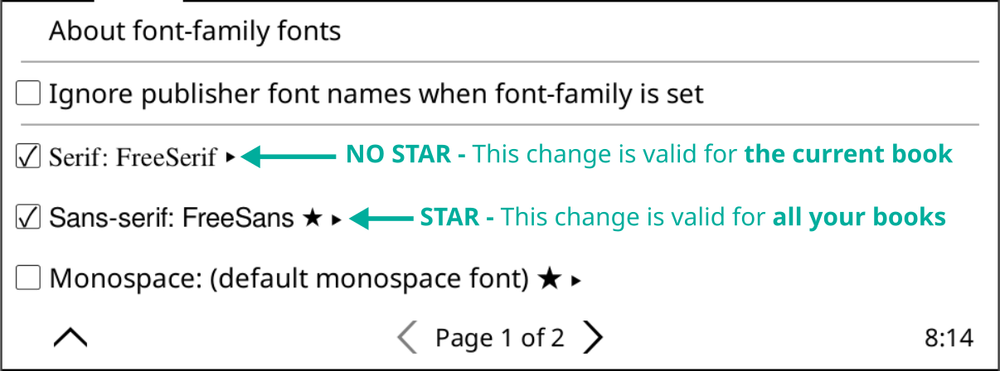
Si canvieu de tipus de lletra sovint (p. ex., monoespaiat per als llibres de programació i amb serifa per a les novel·les), hi ha una solució que ho fa més fàcil que entrar al menú cada vegada. Podeu crear perfils per als tipus de lletra i totes les opcions relacionades, com l'interlineat, el contrast, la negreta, etc., i afegir aquests perfils a un Menú ràpid. Així, amb un sol gest podeu obrir el menú de selecció de tipus de lletra i canviar-lo, com es mostra a la imatge següent:
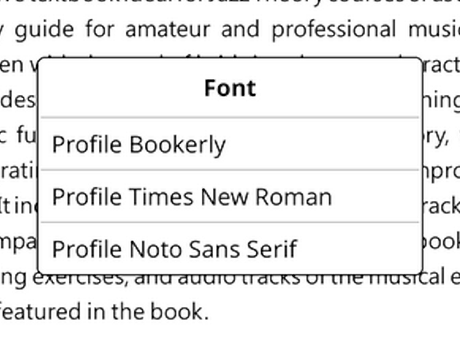
Consulteu la secció MENÚ RÀPID I PERFILS d'aquesta guia per aprendre a fer-ho.
!!! AVANÇAT
La funció d'ajustos d'estil de KOReader us permet modificar com KOReader representa el llibre. Aquí no farem un curs complet de CSS. Només us volem mostrar els conceptes bàsics perquè, quan vegeu un ajust d'estil, tingueu com a mínim una idea aproximada del que fa.
Podem descriure un document EPUB com un fitxer HTML + algunes regles CSS. Aquestes regles CSS determinen com es mostraran les diferents parts del llibre (encapçalaments, text en negreta, cites, etc.) en una aplicació de lectura. Amb els ajustos d'estil, podeu canviar com es representarà el llibre afegint regles noves o substituint les regles escrites per l'editorial i incrustades al llibre.
Vegem-ho amb un ajust d'estil d'exemple:
img { width: 10px !important; height: 10px !important }
En llenguatge planer, aquesta regla diu: «Ignora la mida original i fes que totes les imatges d'aquest llibre facin 10 píxels d'amplada i 10 píxels d'altura.» Per tant, si afegiu aquest ajust d'estil a KOReader, totes les imatges del llibre es mostraran minúscules.
Ara expliquem aquest ajust element per element:
- img - És un selector CSS que s'aplica a tots els elements img (imatge) del llibre.
- { width: 10px !important; height: 10px !important; } - És el bloc de declaracions. Conté els estils que s'aplicaran als elements img seleccionats.
- width: 10px !important; - Aquesta primera part estableix l'amplada dels elements img afectats a 10 píxels. La declaració !important és un interruptor de prioritat que assegura que el vostre valor d'amplada preval sobre qualsevol altra declaració de width existent aplicada a aquestes imatges.
- height: 10px !important; - Aquesta part estableix l'altura dels elements img afectats a 10 píxels. De nou, la declaració !important és un interruptor de prioritat que assegura que el vostre valor d'altura preval sobre qualsevol altra declaració de height existent aplicada a aquestes imatges.
En resum, aquesta regla CSS està pensada per establir una amplada i una altura fixes de 10 píxels per a tots els elements img del llibre, ignorant-ne l'estil original.
Aquests són alguns ajustos d'estil útils que podeu fer servir directament o modificar al vostre gust. L'apartat següent explica com fer-los servir a KOReader.
- Afegiu una línia separadora damunt de cada encapçalament d'un llibre:
H1, H2, H3, H4 { border-top: 2px solid black; }
- Afegiu una mica de marge damunt dels encapçalaments:
H1, H2, H3, H4 { margin-top: 2em !important; }
- O, si el llibre té massa marge damunt dels encapçalaments, traieu-lo:
H1, H2, H3, H4 { margin-top: 0 !important; }
- Afegiu un petit espai entre paràgrafs per fer el text més llegible:
p + p { margin-top: 0.5em !important; margin-bottom: 0.5em !important; }
- Desactiveu totes les imatges d'un EPUB:
img { display: none !important; }
-
Feu les imatges molt petites en lloc de desactivar-les:
img { width: 10px !important; height: 10px !important }
-
Feu més endreçades i llegibles les seccions de blocs de codi dels llibres d'informàtica (Aquí en podeu veure un exemple):
pre,code { font-size: 0.6em !important; line-height: 1.8em !important; background-color: #eee !important; margin: 1em 0 !important; padding: 1em 0 !important; }
D'acord, ara ja hem vist què són els ajustos d'estil. Però com els podem fer servir? A KOReader hi ha tres tipus d'ajustos d'estil:
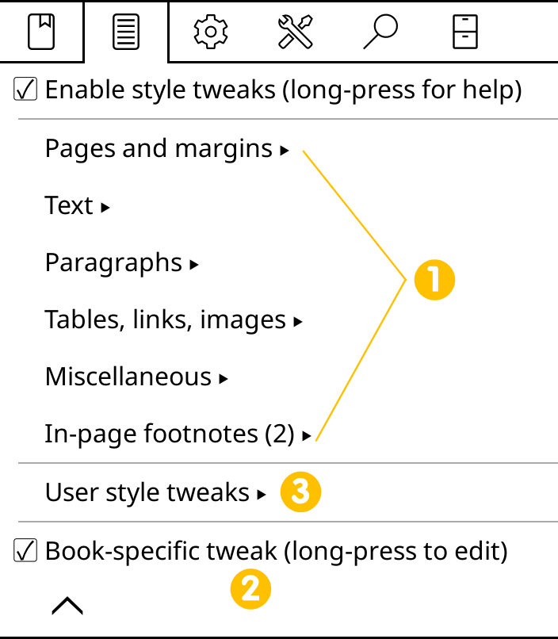
Aquest apartat és nou, i també la captura de pantalla de dalt i la de baix. Hi voleu afegir alguna cosa?
Aquests ajustos s'inclouen a KOReader. Són els més fàcils de fer servir, ja que només cal activar-los des del menú. No cal escriure cap codi CSS:
Es presenten en moltes categories. Per aplicar un ajust només al llibre actual, marqueu la casella. Si voleu obtenir més informació sobre l'ajust o activar-lo per a tots els llibres, manteniu premut el seu nom. Apareixerà un diàleg:
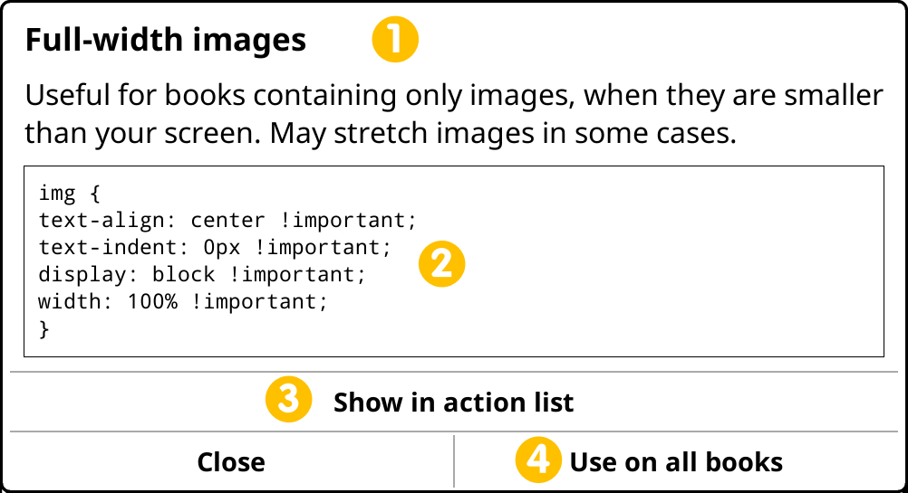
- Aquesta àrea mostra el nom i la descripció de l'ajust
- Aquest quadre mostra el codi CSS de l'ajust. Podeu tocar aquesta àrea per copiar el codi al porta-retalls. Després podeu enganxar i modificar aquest codi a l'Ajust específic del llibre, com s'explica a l'apartat següent.
- El botó Mostrar a la llista d'accions us permet activar o desactivar aquest ajust amb un gest o afegir-lo a un Menú ràpid. Vegeu l'apartat «Com fer servir els ajustos de manera eficient» més avall per a més informació.
- El botó Usar en tots els llibres activa aquest ajust per a tots els llibres. Apareixerà una estrella (★) al costat del nom al menú, que indica que aquest ajust s'aplicarà a tots els llibres. El podeu desactivar amb els mateixos passos.
Com podeu deduir pel nom, aquest tipus d'ajustos només són actius per al llibre en què els heu creat. Aquesta funció és més útil per provar els ajustos o si cal corregir alguna cosa al llibre actual i sabeu que no us caldrà en altres llibres. Després de crear aquest tipus d'ajust, si decidiu que també us caldrà en altres llibres (p. ex., de la mateixa editorial), el podeu convertir en un ajust d'estil d'usuari, que explicarem a continuació.
Per crear un ajust específic del llibre, feu servir l'editor integrat, que trobareu aquí:
CONSELL A l'editor hi ha un menú CSS a la barra d'eines inferior. Aquest menú conté moltes sintaxis i propietats CSS útils. Quan obriu aquest menú, llegiu primer l'ajuda Pulsació llarga per a informació. També podeu mantenir premuts els elements CSS d'aquest menú per veure'n una descripció.
Aquest grup d'ajustos es diferencia dels anteriors en la manera com es creen. A més, a diferència del tipus anterior, no es limiten a un sol llibre: es poden aplicar globalment a tots els llibres.
El procediment és aproximadament aquest, que explicarem en detall:
- Creeu el fitxer d'ajust d'usuari
- Transferiu-lo al dispositiu
- Activeu l'ajust des del menú
1. Creació del fitxer d'ajust d'usuari:
Un ajust d'estil d'usuari és en realitat un fitxer de text normal amb l'extensió .css. Podeu crear aquest fitxer:
- A l'ordinador
- Al dispositiu, si té un editor de text (com els dispositius basats en Android)
- A l'editor de text integrat de KOReader, que trobareu als complements
Podeu copiar i enganxar al fitxer els exemples que hem esmentat abans.
2. Transferència del fitxer al dispositiu:
Després de crear els fitxers que contenen les regles CSS, deseu-los o transferiu-los a la carpeta styletweaks de la instal·lació de KOReader. Doneu als fitxers noms descriptius, perquè el nom del fitxer serà el títol de l'ajust al sistema de menús de KOReader. Podeu fer servir guions baixos «_» als noms dels fitxers; al menú es tractaran com a espais. Cal reiniciar KOReader després de transferir els fitxers perquè els pugui carregar.
2. Activació de l'ajust:
Després de reiniciar, obriu un llibre i aneu a aquest menú:
Ara hauríeu de veure l'ajust a la llista amb una casella al costat. Per aplicar-lo només al llibre actual, marqueu la casella. Si voleu que aquest ajust estigui activat per a tots els llibres, manteniu premut el seu nom. Apareixerà un diàleg. Toqueu l'element de menú Usar en tots els llibres. Apareixerà una estrella (★) al costat del nom al menú, que indica que aquest ajust s'aplicarà a tots els llibres. El podeu desactivar amb els mateixos passos. Vegeu-ne un exemple a continuació:
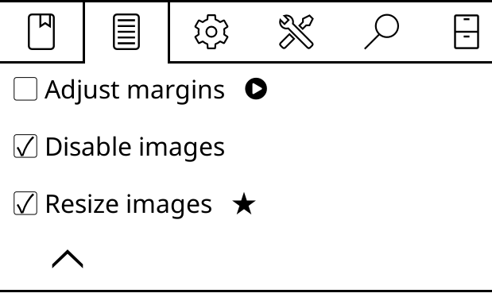
A la imatge anterior, tinc 3 fitxers d'ajust d'estil a la carpeta styletweaks de la meva instal·lació de KOReader. El primer està desactivat perquè la casella és buida. El segon està activat només per a aquest llibre, ja que la casella està marcada però no hi ha estrella. El tercer està activat per a tots els llibres (★).
Potser us fixareu que també hi ha una icona de triangle dret al costat del primer ajust. Vol dir que aquest ajust es pot activar amb gestos. Això s'explicarà a l'apartat següent.
En crear els ajustos d'estil d'usuari, podeu fer diversos fitxers d'ajust, cadascun dels quals modifica una part del llibre, com a la imatge d'exemple anterior. Podeu tenir un fitxer per als encapçalaments, d'altres per modificar els paràgrafs, els enllaços, etc. Aquest sistema modular us permet activar els ajustos segons el document.
Com hem dit abans, podeu activar o desactivar els ajustos d'estil d'usuari des d'aquesta ubicació del menú:
També hi ha maneres més fàcils d'activar o desactivar els ajustos d'estil que anar al menú cada vegada.
1. Podeu assignar un gest a un ajust
Per fer-ho, primer hem d'afegir l'ajust d'estil d'usuari a la llista d'accions de gestos:
- Aneu al menú Ajustos d'estil d'usuari i manteniu premut l'ajust d'estil
- Al diàleg, premeu el botó Mostrar a la llista d'accions
- Apareixerà una icona de triangle dret al costat de l'ajust d'estil al menú
Ho podeu veure a la imatge d'exemple anterior, al costat de l'ajust d'estil Adjust margins. Ara aquest ajust d'estil s'ha afegit a la llista d'accions. El trobareu a la categoria Configuració de gestos > Documents redistribuïbles. Serà al final de la llista.
2. Podeu afegir un ajust al Menú ràpid
Per afegir un ajust al Menú ràpid, primer s'ha d'afegir a la llista d'accions tal com es descriu a l'apartat anterior. Després podeu seguir les instruccions de la secció Menú ràpid d'aquesta guia.
Fins i tot podeu combinar tots dos mètodes i crear un Menú ràpid especial per als ajustos d'estil i després assignar-lo a un gest. D'aquesta manera, amb un simple gest podeu accedir a tots els ajustos d'estil i activar-los segons calgui.
Tingueu en compte que en alguns llibres els títols poden no estar en elements <H1> o <H2>, sinó en alguna cosa com <p class="tit123">. Podeu saber quins selectors es fan servir per a una part del text consultant-ne el codi font. Per fer-ho, seleccioneu el text al voltant de l'element que us interessa i trieu Veure HTML al diàleg. A l'exemple anterior, l'ajust d'estil quedaria així:
P.tit123 { border-top: 2px solid black; }
en lloc d'això:
H1 { border-top: 2px solid black; }
KOReader us ofereix opcions per interactuar amb el llibre com ho faríeu amb un llibre de veritat. Moltes opcions de la finestra de marcadors es poden canviar aquí:
MARCADORS:
Podeu afegir (i treure) un marcador prement la cantonada superior dreta. És l'equivalent a doblegar la cantonada d'una pàgina en un llibre de veritat, i mostra una icona semblant quan l'activeu.
SUBRATLLATS:
Podeu subratllar text amb 4 estils diferents. A la imatge següent podeu veure un paràgraf normal seguit de diferents estils de subratllat: Destacar (amb fons gris), Subratllar, Ratllar i Invertir.
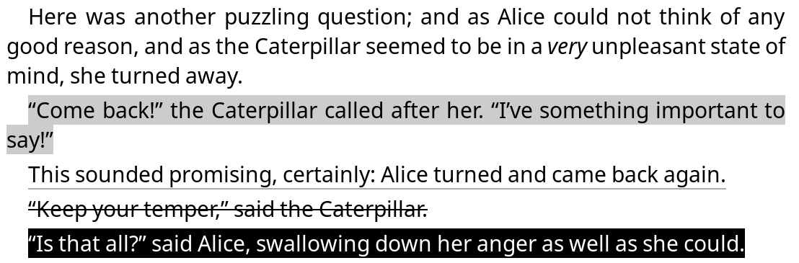
Podeu fer servir tots aquests estils alhora, com si fossin retoladors de colors diferents. O podeu decidir el vostre estil preferit i establir-lo com a predeterminat des d'aquest menú mantenint-lo premut:
A més, si teniu un dispositiu amb pantalla de color, podeu crear subratllats de diferents colors:
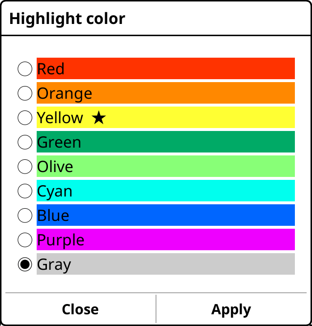
Alguns consells per als subratllats de color:
- Podeu canviar el color d'un subratllat existent tocant-lo i triant Color al menú emergent.
- Podeu combinar els colors amb diferents estils de subratllat, com Subratllar i Ratllar, per crear un sistema de subratllat potent. Per exemple, podeu fer servir un estil ratllat vermell per a les supressions o un estil subratllat taronja per als punts importants, etc.
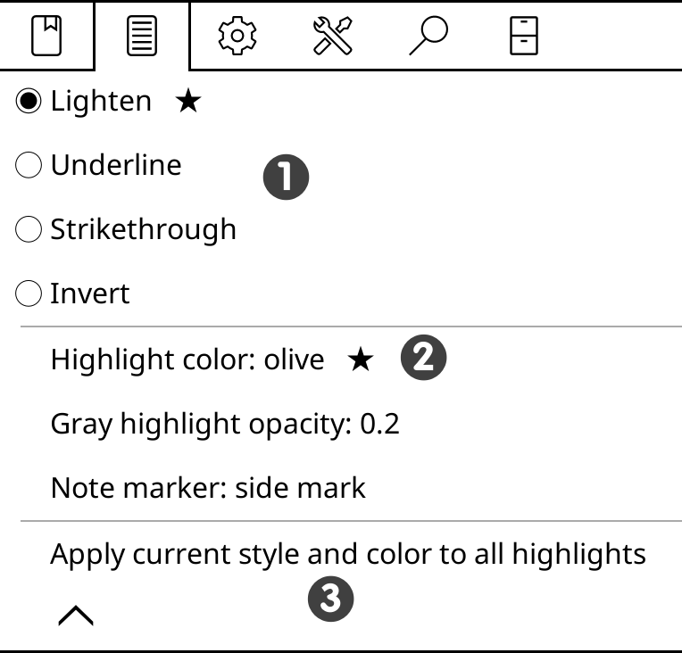
- Al menú de subratllats podeu mantenir premut un tipus de subratllat per establir-lo com a predeterminat (★)
- Després de seleccionar un color, podeu mantenir premut el nom del color en aquest menú per establir-lo com a predeterminat (★)
- Podeu prémer l'opció Aplicar l'estil i colors actuals a tots els subratllats perquè tots els subratllats del llibre actual siguin iguals. Aneu amb compte: no es pot desfer!
NOTES:
També podeu afegir notes als subratllats. Només cal que toqueu un subratllat i trieu Afegir nota al menú emergent. També podeu triar un Marcador de nota que mostri quins subratllats contenen una nota. Hi ha tres estils: Subratllat, Línia lateral i Marca lateral (que és la icona de llapis que es mostra a la dreta de la imatge següent):
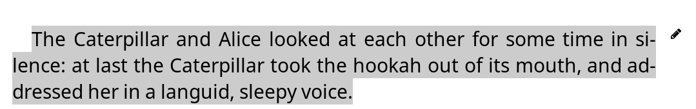
Per activar aquesta funció i triar un estil de Marcador de nota, aneu a:
KOReader té dos modes de subratllat per a diferents casos d'ús:
El Mode normal és semblant a seleccionar text amb el dit en un telèfon o una tauleta, i és més adequat si els subratllats són més curts que una pàgina.
- Manteniu premuda la paraula inicial
- Moveu el dit fins al final del passatge
- Deixeu anar el dit
Quan arribeu al límit de la pàgina, KOReader passarà la pàgina perquè pugueu continuar subratllant (només en documents EPUB/HTML). Podeu desactivar aquesta funció des de:
El mode de selecció i subratllat és més adequat per subratllar passatges llargs que travessen els límits de pàgina. També pot funcionar millor si teniu problemes de sensibilitat de la pantalla tàctil o de control motor de les mans, perquè en aquest mode de subratllat no cal arrossegar el dit per la pantalla.
Com subratllar:
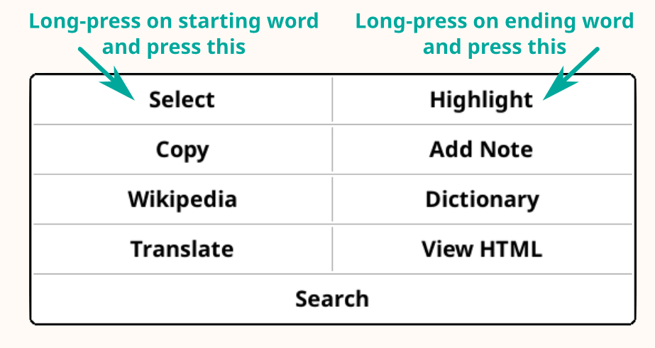
- Manteniu premuda (o arrossegueu, si la consulta al diccionari està activada com s'ha descrit abans) la paraula inicial i apareixerà un menú emergent.
- Toqueu Selecciona: ara sou al mode de subratllat. Quan sou en aquest mode, veureu un indicador a la cantonada superior esquerra de la pantalla (que podeu tocar per obtenir més informació). Podeu cancel·lar el subratllat tocant de nou el començament del subratllat. En aquest mode podeu passar pàgines amb tocs o lliscaments i navegar lliurement pel document (índex, fullejar, etc.).
- Manteniu premuda (o arrossegueu, si la consulta al diccionari està activada com s'ha descrit abans) la paraula final del subratllat i tornarà a aparèixer el menú.
- Aquesta vegada toqueu Subratllar per acabar de subratllar el passatge.
Aquest diàleg normalment s'obre al centre de la pantalla. Si voleu que s'obri més a prop de la ubicació del subratllat, podeu canviar aquí l'opció centre per posició del gest (és a la segona pàgina d'aquest menú):
Quan subratlleu, KOReader intenta incloure els signes de puntuació relacionats al voltant de la selecció. Per exemple, si subratlleu des de la primera paraula fins a l'última d'una frase, KOReader inclourà automàticament al subratllat els signes de puntuació dels dos extrems de la frase.
Però si comenceu a subratllar a mitja frase, el punt final no s'inclourà, perquè KOReader suposa que voleu fer un subratllat parcial. Per tant, si voleu que s'afegeixin els signes de puntuació al subratllat, assegureu-vos de seleccionar tota la frase. També podeu afegir aquests signes més endavant mantenint premuts els botons d'edició del subratllat.
Quan toqueu un text ja subratllat (sense nota), veureu aquest menú emergent. Els elements Suprimeix i Afegir nota són clars. Els elements de menú de la fila inferior serveixen per ampliar o reduir el subratllat.
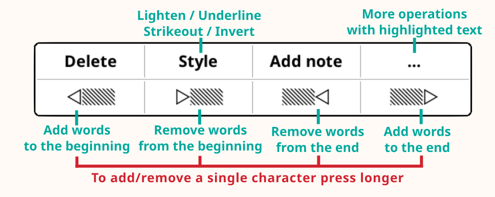
Quan toqueu un text ja subratllat amb una nota afegida, veureu aquest menú emergent. Toqueu Edita el subratllat per obrir el menú de dalt, on podeu editar tant el subratllat com la nota que conté:
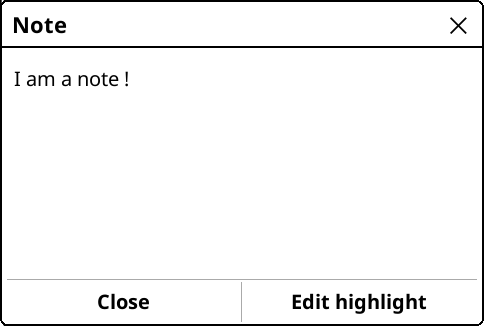
A la pàgina de Marcadors podeu filtrar la vista per veure només un tipus de marcador prement la icona de menú ( ). També podeu filtrar per estil de subratllat:
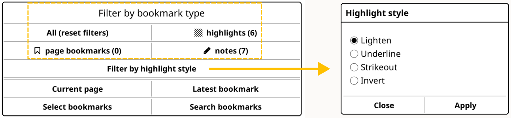
A més d'afegir una nota, KOReader també us permet editar el text subratllat mateix que es mostra a la Llista de marcadors. En algunes situacions això pot ser més útil que afegir una nota a un subratllat. Per exemple, imagineu que esteu revisant un text. Voleu subratllar una frase que conté moltes dates i una de les dates és errònia. Si voleu afegir una nota per indicar aquest error, a la nota haureu d'especificar quina és l'errònia. Però si editeu el text del subratllat, podeu escriure directament «(cal comprovar aquesta data)» al costat de la data problemàtica.
Tingueu en compte que aquesta edició no canvia el contingut del llibre ni el passatge subratllat a la pàgina. Al lector continuareu veient la mateixa frase subratllada. L'edició serà visible a la Llista de marcadors. I quan exporteu els subratllats més endavant, el text exportat serà l'editat.
Per editar el text d'un subratllat, podeu:
- Tocar el subratllat
- Tocar Detalls al menú emergent
- Tocar Edita el text al diàleg de detalls
També ho podeu fer des de la finestra de marcadors:
- Aneu a la Llista de marcadors des del menú o amb un gest
- Manteniu premut el subratllat que voleu editar
- Premeu Edita el text al menú
- Canvieu el text al diàleg i premeu el botó Desa
Si voleu revertir un text editat al subratllat original, seguiu els passos anteriors i, al pas 3, en lloc d'Edita el text, premeu el botó Reinicialitza el text.
Normalment, quan obriu la llista de marcadors, només es mostra el contingut dels subratllats. Si heu afegit una nota a un subratllat, només veureu una icona de llapis a la llista de marcadors. Podeu mantenir premut un element d'aquesta llista per mostrar (i editar) la nota afegida. Si també voleu veure el text de la nota a la Llista de marcadors, ho podeu establir des d'aquí:
Podeu triar mostrar:
- Només el text subratllat (comportament per defecte)
- Tant el text subratllat com la nota
- La nota si n'hi ha i, si no, el text subratllat
Després d'acabar un llibre, el podeu moure a una carpeta concreta per arxivar-lo o processar-lo. Activeu el complement Moure a carpeta d'arxiu i establiu la carpeta de destinació a la configuració del complement (Estableix la carpeta d'arxiu). Després d'això, podeu moure un llibre a la carpeta d'arxiu amb:
- Menú del complement Moure a carpeta d'arxiu
- Amb un gest o
- Amb una entrada del Menú ràpid
KOReader ofereix diferents maneres d'exportar els subratllats i les notes des del dispositiu de lectura:
Aquest complement versàtil pot exportar els subratllats a fitxers locals o a serveis en línia.
Exportació local
Podeu exportar els subratllats al dispositiu en aquests formats de fitxer:
- Text (.txt)
- HTML (.html)
- Markdown (.md)
- Kindle Clippings (.txt)
- JSON (.json)
Podeu triar els formats d'exportació preferits des de:
Podeu veure la ubicació d'exportació (i canviar-la si voleu):
Serveis en línia
També podeu exportar a aquests serveis per la xarxa:
- Joplin: una aplicació per prendre notes
- Readwise: una aplicació en línia de marcadors i subratllats
- Memos: un centre de notes de codi obert i autoallotjat
- Flomo: un servei en línia per prendre notes
- XMNote: un organitzador de marcadors per a Android en xinès
Trobareu instruccions de configuració detallades per a aquests serveis a la nostra pàgina del wiki corresponent.
Després de seleccionar els formats, podeu exportar les notes del llibre actual o de tots els llibres de la biblioteca des del mateix menú del complement.
Si només voleu exportar alguns dels llibres de la biblioteca, ho podeu fer des del Navegador de fitxers:
- Seleccioneu diversos llibres al Navegador de fitxers
- Toqueu el botó de menú (que es mostra com una marca de verificació) a la cantonada superior dreta
- Seleccioneu Exporta els subratllats al menú que es mostra
KoHighlights és un programa extern que podeu instal·lar a l'ordinador. Pot accedir a les notes i els subratllats dels llibres quan connecteu el lector a l'ordinador. Consulteu la pàgina del projecte a GitHub per a la baixada i les instruccions.
Calibre és un programa extern que podeu instal·lar a l'ordinador. Podeu importar els subratllats a la base de dades de Calibre amb el seu complement KOReader Sync. Podeu instal·lar aquest complement des de la mateixa aplicació Calibre. Consulteu la pàgina del projecte per a la baixada i les instruccions.
KOReader us ofereix moltes maneres de llegir en un dispositiu de pantalla més petita un document PDF/DJVU optimitzat per a mides de pàgina més grans (generalment A4 o Letter):
1. Podeu activar la Redistribució de text
La redistribució intenta extreure la part de text del document (si n'hi ha) i donar-li format en una sola columna. Els resultats en general són satisfactoris. També podeu establir-ho com a predeterminat tocant-ho i mantenint-ho premut.
2. Podeu activar el Zoom al contingut
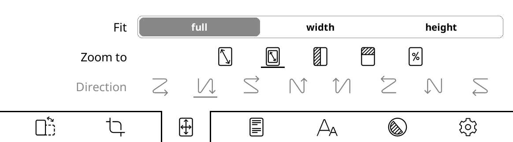
Amb aquesta opció KOReader intenta retallar els marges del document perquè el text es vegi més gran a la pantalla. Al mateix menú podeu establir Ajustar a amplada, que intentarà ajustar només l'amplada de la pàgina en lloc de tota la pàgina, de manera que el text es veurà més gran.
3. Podeu provar de fer servir el dispositiu en orientació horitzontal
Això farà la pantalla més ampla, de manera que el document pot semblar prou gran per llegir-lo còmodament.
4. Podeu fer zoom al 100 per cent i desplaçar la pantalla per llegir-ne les diferents parts
Això és especialment útil amb els còmics. Primer activeu el mode de columna des d'aquest element de menú:
Després seleccioneu una direcció de flux adequada per al document des del mateix menú:
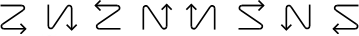
- Per exemple, si llegiu un article de dues columnes, us desplaçareu cap avall fins al final de la pàgina llegint la columna esquerra i després anireu a la part superior dreta per continuar llegint la columna dreta:
- O, si llegiu un còmic, voldreu anar «dreta / avall a l'esquerra / dreta» en ziga-zaga:
- Per a un còmic japonès (ordre de vinyetes de dreta a esquerra), pot ser a la inversa:
En aquest mode també podeu ajustar la Superposició horitzontal/vertical i el Nombre de columnes des del mateix menú perquè el text càpiga millor a la pantalla. No dubteu a experimentar amb aquestes opcions.
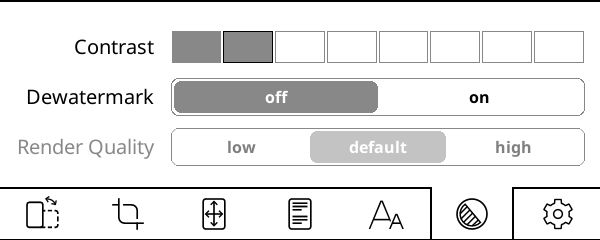
L'opció de Contrast ajusta els nivells de negre del document. Tingueu en compte que el mateix valor de contrast s'aplica tant al text com a les imatges del document. Si l'establiu molt alt, les imatges es poden enfosquir massa.
L'opció Eliminar marca d'aigua elimina les marques d'aigua del document representat. També es pot fer servir per eliminar fons grisos. Aquesta funció pot convertir un document en escala de grisos o en color a blanc i negre per obtenir més contrast i facilitar la lectura.
La Qualitat de renderitzat (només actiu en el mode de redistribució) estableix la qualitat del processament i de la sortida de l'extracció de text i imatges. Alt queda millor, però pot ser molt més lent (diversos segons per passar pàgina) que el predefinit, segons el document. Si els fitxers PDF/DJVU van lents, aquesta és la primera opció que heu de revisar.
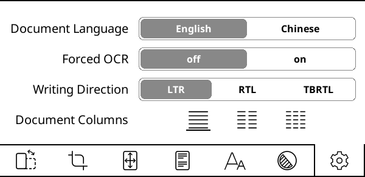
L'Idioma del document estableix l'idioma que farà servir el motor d'OCR.
L'opció Forçar OCR, com indica el nom, força l'ús de l'OCR encara que el document tingui una capa de text.
La Direcció de lectura (només actiu en el mode de redistribució) estableix la direcció del document original. Establiu-la a RTL per a idiomes com l'àrab i l'hebreu.
Les Columnes del document (només actiu en el mode de redistribució) estableixen el nombre de columnes de text del document original.
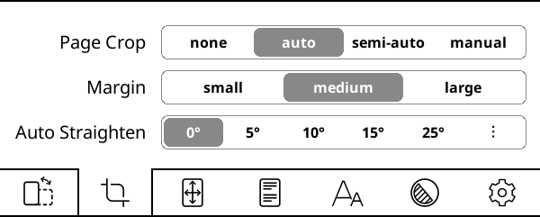
La funció d'Alineació automàtica pot redreçar les pàgines d'un document problemàtic, per exemple les pàgines d'un PDF escanejades en angle. Està disponible en documents PDF, DJVU, CBZ/CBT i en fitxers d'imatge. Per activar-la, trieu l'angle d'inclinació màxim que KOReader intentarà corregir. Si no el corregeix, potser haureu de triar un angle més gran. Tingueu en compte que aquesta funció pot alentir el lector segons diversos factors.
Per desar els subratllats, podeu fer servir la funció d'Exporta els subratllats de KOReader, que s'explica en una secció anterior.
Si feu els subratllats en un document PDF, KOReader també els pot desar directament al fitxer PDF. Això pot ser útil en determinades situacions, perquè amb aquest mètode els subratllats passen a formar part del fitxer PDF. Això vol dir que els podeu veure en altres aplicacions o plataformes sense instal·lar KOReader. Per exemple, si envieu un fitxer amb subratllats a un altre usuari, no cal que instal·li KOReader per veure'ls. Només cal que li envieu el fitxer PDF amb els subratllats desats i els podrà obrir i veure amb un lector de PDF compatible.
AVÍS Si feu servir el complement Sincronitzar la posició de lectura, desar els subratllats al PDF canviarà el fitxer i la sincronització fallarà. Si teniu previst fer servir les dues funcions, a la configuració del complement Sincronitzar la posició de lectura, canvieu el Mètode de comparació de documents a Nom del fitxer en lloc de la comparació Binària per defecte:
Quins lectors de PDF poden mostrar aquests subratllats?
Els lectors de PDF generalment depenen d'algunes biblioteques estàndard per representar els fitxers PDF. Dues de les biblioteques de PDF més conegudes són MuPDF i Poppler. KOReader fa servir la biblioteca MuPDF, de manera que els subratllats escrits als PDF des de KOReader actualment no són visibles als lectors de PDF que fan servir la biblioteca Poppler. A continuació trobareu una llista de compatibilitat. ✅ vol dir que podeu veure els subratllats de KOReader en aquesta aplicació, ❌ vol dir que no els podeu veure i ⚠️ vol dir que l'aplicació necessita algun connector per mostrar-los. La llista està ordenada alfabèticament dins de cada categoria.
AVÍS Aquesta llista no és completa i pot no estar actualitzada. Per això us recomanem que comproveu la compatibilitat vosaltres mateixos. Només cal que feu un subratllat a KOReader, l'escriviu al fitxer PDF i proveu d'obrir el fitxer amb el lector que vulgueu fer servir per comprovar si el subratllat és visible.
- ✅ Navegador Chrome (totes les plataformes)
- ✅ Deepin Reader (Linux)
- ✅ Navegador Firefox (totes les plataformes)
- ✅ Ghostscript (totes les plataformes)
- ✅ MuPDF (Windows/Android)
- ⚠️ Zathura (si el connector de MuPDF està activat)
- ❌ Adobe Acrobat Reader
- ❌ Evince (Linux)
- ❌ Foxit Reader
- ❌ LibreOffice Draw (com a editor)
- ❌ Moon Reader (Android)
- ❌ Okular (Linux)
- ❌ SumatraPDF (Windows)
- ❌ Xpdf (Linux)
- ❌ Xreader (Linux)
Com que fer subratllats per fer-los servir més endavant pot representar un esforç considerable, si teniu previst fer servir aquesta funció, heu d'entendre com funciona per evitar situacions frustrants.
RESUM RÀPID: si voleu poder suprimir o exportar més endavant els subratllats del PDF, heu de copiar la carpeta .sdr associada al llibre quan en feu una còpia de seguretat o el copieu a altres dispositius. Sense aquesta carpeta, KOReader pot continuar mostrant els subratllats desats, però no pot saber on són al fitxer, així que no els pot modificar. Continueu llegint per a més informació.
Com funcionen els subratllats normals a KOReader
Quan feu un subratllat a KOReader, tant si el document és un EPUB com un PDF, aquest subratllat s'escriu en un fitxer de configuració. Per exemple, si llegiu Alice in Wonderland.epub, tindreu una carpeta anomenada Alice in Wonderland.sdr a la mateixa carpeta que el llibre. Els subratllats es desaran en un fitxer dins d'aquesta carpeta .sdr. Això vol dir que, si suprimiu aquesta carpeta .sdr associada al llibre, perdreu els subratllats.
Com funcionen els subratllats de PDF a KOReader
La funció de subratllats de PDF funciona una mica diferent de la descripció anterior. Com hem dit abans, quan deseu els subratllats al PDF, s'escriuen directament al fitxer PDF, cosa que vol dir que passen a formar part del fitxer mateix. Per això podeu enviar aquest PDF a un altre usuari i podrà veure els subratllats amb un lector de PDF compatible. No li caldrà la vostra carpeta .sdr, que conté un registre dels subratllats, perquè ara els subratllats estan incrustats directament al fitxer PDF.
Expliquem amb un exemple el problema que pot sorgir quan feu servir aquesta funció. Imagineu que esteu llegint un llibre PDF al vostre lector electrònic amb KOReader:
- Feu subratllats i l'opció Desa els subratllats al PDF està activada, de manera que, a mesura que els feu, KOReader els desa al fitxer PDF.
- Voleu continuar llegint el llibre al telèfon amb KOReader, així que copieu aquest fitxer PDF del lector electrònic al telèfon (però no heu copiat la carpeta .sdr, només el fitxer PDF).
- Quan obriu el llibre al telèfon amb KOReader, veureu que els subratllats encara hi són.
Ara la situació als dos dispositius sembla idèntica. Tant el KOReader del lector electrònic com el del telèfon mostren el fitxer PDF amb els mateixos subratllats. Però només sembla idèntica: en realitat hi ha una gran diferència.
El KOReader del lector electrònic sap quins subratllats d'aquest fitxer PDF ha fet KOReader, perquè té la carpeta .sdr. Però el KOReader del telèfon no ho sap. Només té el fitxer PDF.
La diferència apareix quan intenteu suprimir o exportar els subratllats del PDF. El lector electrònic pot suprimir aquests subratllats i exportar-los. Però el KOReader del telèfon no, perquè, com hem dit, no té la carpeta .sdr del llibre, així que des del seu punt de vista els subratllats semblen part del llibre original.
En resum, si voleu poder suprimir o exportar més endavant els subratllats del PDF, heu de copiar la carpeta .sdr associada al llibre quan en feu una còpia de seguretat o el copieu a altres dispositius.
L'OCR (reconeixement òptic de caràcters) és el procés d'extreure text d'imatges. En el context de KOReader, generalment es fa servir per extreure text de pàgines de llibres escanejades en fitxers PDF. Per a aquesta tasca, KOReader es basa en el motor d'OCR de codi obert Tesseract.
Per fer servir aquesta funció heu de:
- Instal·lar les dades d'idioma de Tesseract al KOReader
- Afegir els idiomes acabats d'instal·lar al fitxer de configuració koreader/defaults.lua (només cal si el vostre idioma no és l'anglès ni el xinès)
Els còmics generalment necessiten actualitzacions de pàgina més freqüents que el contingut de text pur. Per al text normal, podeu establir l'interval d'actualització de pàgina a valors alts sense problemes. Però les imatges poden deixar més restes i causar imatges fantasma, sobretot segons el panell del lector electrònic.
KOReader us permet assignar qualsevol gest per canviar entre diferents freqüències d'actualització. Per exemple, podeu establir lliscar cap amunt per la vora esquerra per a l'actualització a cada pàgina quan llegiu còmics i lliscar cap avall per la vora esquerra per a l'actualització cada x pàgines per als llibres només de text. Així, quan obriu un còmic, podeu canviar a una actualització més freqüent amb un simple toc o lliscament (o a l'inrevés).
Aquesta acció és a:
Aquesta funció fa més fàcil llegir còmics en pantalles petites. La podeu activar mentre llegiu un document PDF, DJVU, CBZ o CBT des de:
Quan aquesta opció està activada, KOReader intenta trobar els límits de les vinyetes rectangulars a la pantalla. Si manteniu premuda una vinyeta, KOReader l'amplia i mostra només aquella vinyeta.
Com podeu imaginar, aquesta funció funciona millor amb còmics que tenen els límits de les vinyetes ben definits. A més, a causa d'aquest problema dels límits, en aquest mode no hi ha pas de pàgina per saltar a la vinyeta següent. Heu de tancar la vinyeta ampliada i mantenir premuda la següent. Per fer-ho, només cal que llisqueu cap avall sobre la vinyeta ampliada. També podeu fer servir qualsevol gest de multilliscament (qualsevol combinació d'amunt, avall, esquerra i dreta) per sortir d'aquesta vista.
El procediment es pot veure a continuació:
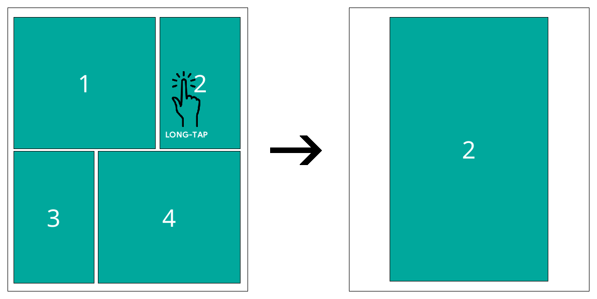
Si voleu fer servir aquesta funció amb altres tipus de fitxer, com EPUB, FB2, HTML o fitxers d'imatge, heu d'obrir el fitxer amb un altre motor: al Navegador de fitxers, manteniu premut el nom del fitxer, toqueu Obre amb… i seleccioneu MuPDF.
Quan arribeu a l'última pàgina d'un llibre, KOReader us mostra un diàleg. En aquest diàleg hi ha l'acció Obre el fitxer següent, que obrirà el fitxer següent de la mateixa carpeta que el llibre actual. Així podeu posar les sèries en carpetes separades i llegir-les una rere l'altra sense tornar al Navegador de fitxers.
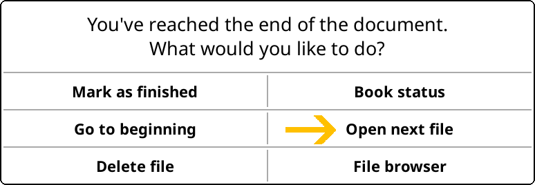
En obrir el fitxer següent, KOReader se salta els fitxers que heu marcat com a acabats. Aquesta funció és útil, per exemple, quan teniu una carpeta de fitxers de manga i ja n'heu llegit alguns. Podeu marcar un fitxer com a acabat des del diàleg de final de llibre que es mostra a dalt. També el podeu marcar des del Navegador de fitxers mantenint premut el fitxer. Després de copiar-los al dispositiu, podeu:
- Obrir el Navegador de fitxers a KOReader
- Mantenir premuts els que ja heu acabat i tocar Marcar com llegit
Ara podeu llegir tots els fitxers només tocant Obre el fitxer següent al final del llibre. KOReader se saltarà els que ja heu llegit.
Si us agrada llegir manga al dispositiu de paper electrònic, hi ha alguns consells que poden millorar l'experiència. Preparar els vostres propis fitxers de manga és la millor solució si no esteu satisfets amb com es veuen els còmics al dispositiu.
Els tipus de fitxer com MOBI i EPUB no són adequats per gestionar contingut principalment d'imatges (p. ex., manga o còmics). La compatibilitat amb MOBI a KOReader és mínima o inexistent, i les prioritats de representació de text de l'EPUB poden causar problemes en mostrar imatges de pàgina completa. Per a més detalls tècnics, visiteu aquesta incidència de GitHub.
La millor opció és crear un fitxer CBZ, que funciona millor a KOReader. Un fitxer amb l'extensió .cbz és un fitxer zip (sense compressió) que és una col·lecció d'imatges. Desa diverses imatges, normalment fitxers .png o .jpeg, organitzades en les pàgines del còmic. KOReader també pot obrir fitxers CBT, que són semblants als fitxers CBZ però fan servir el format d'arxiu TAR.
La manera més fàcil de convertir un manga a CBZ és obtenir el manga com a imatges de diversos llocs web i després convertir-les amb Kindle Comic Converter (https://github.com/ciromattia/kcc). Té algunes opcions útils, com girar automàticament a horitzontal les dobles pàgines i aplicar tramat, de manera que els degradats representats en paper electrònic quedin suaus i sense capes esglaonades.
Els millors resultats s'obtenen redimensionant les imatges exactament a la mida de la pantalla del lector electrònic. Un CBZ específic per a la pantalla, fet a la mida exacta de la pantalla del dispositiu, evita el reescalat durant la lectura. KOReader redueix les imatges a la mida de la pantalla mentre llegiu, però no es recomana, perquè KOReader afegeix un pas de tramat abans d'escalar i això fa perdre qualitat.
Però si voleu fer servir el vostre CBZ fet a mà en més d'un dispositiu o voleu conservar una resolució alta de cara al futur, potser la millor opció és fer el CBZ per al dispositiu de més resolució. O triar una resolució «alta» arbitrària, si pot ser una que coincideixi amb l'original. 300 PPI o més (fins a 450 o fins i tot 600), llevat que l'original sigui de menys resolució, és clar. Si suposem una pantalla de 8", 1500×2000 és una bona resolució objectiu. Per a imatges més grans, heu de provar-les al dispositiu i veure si les pot gestionar. Sobretot els Kindle antics amb poca memòria poden tenir dificultats amb mides com 3000×4000, per exemple. Si automatitzeu el procés, pot valer la pena crear una versió de qualitat més baixa i una de més alta (p. ex., a 200/400 o 300/600 DPI).
A continuació teniu un exemple de procediment per processar un fitxer de manga:
- Baixeu Kindle Comic Converter (KCC) de https://github.com/ciromattia/kcc
- Baixeu el manga de la font que vulgueu (p. ex., HakuNeko)
- Descomprimiu el fitxer de manga. Ara hauríeu de tenir una carpeta que només contingui imatges (o subcarpetes amb imatges, sense arxius comprimits)
- Processeu aquesta carpeta amb KCC. Cada carpeta produirà un sol fitxer CBZ, així que, si voleu fer diversos volums alhora, seleccioneu diverses carpetes alhora
Algunes opcions útils de KCC:
Spread splitter: aquesta funció detecta les dobles pàgines i us permet girar-les o tallar-les en dues.
Upscaling: amplia les imatges més petites que la resolució objectiu.
Si voleu gaudir del manga d'una manera més immersiva, assegureu-vos que heu seleccionat a KCC exactament la mateixa resolució que la de la pantalla del dispositiu en crear el fitxer CBZ. També podeu amagar la barra de progrés inferior mentre llegiu el manga a KOReader. Així tindreu una vista immersiva a pantalla completa del manga sense obstacles.
!!! AVANÇAT
Després de fer servir KCC per crear un fitxer CBZ, podeu aplicar un tramat addicional a les imatges. D'aquesta manera, els degradats representats en paper electrònic quedaran suaus i sense capes esglaonades. Aquest pas produirà volums de manga afinats que es veuran millor a KOReader.
Podeu fer servir ImageMagick per processar les imatges. ImageMagick és un potent conjunt de programari de codi obert per mostrar, crear, convertir, modificar i editar imatges de mapa de bits. Podeu baixar ImageMagick i fer-lo servir des de la línia d'ordres per processar moltes imatges alhora.
- Descomprimiu el fitxer CBZ preparat que heu creat amb KCC,
- Baixeu el fitxer següent, dither_pack.zip (allotjat a Yandex Disk), que conté dos fitxers per lots (.BAT) i una plantilla de colors GIF.
- Extraieu aquests tres fitxers al costat de les imatges que cal processar
- Editeu _magick_manga_ditherN_resize.bat i canvieu-hi la resolució per la del dispositiu (als dos llocs del fitxer BAT).
AVÍS El pas següent substituirà totes les imatges de la carpeta per les processades. Per tant, assegureu-vos que en teniu una còpia en una altra carpeta si voleu conservar els originals.
- Executeu _magick_manga_ditherN_resize.bat per redimensionar les imatges i aplicar-hi el tramat.
- Si teniu 7-Zip instal·lat, executeu _batch_archive.bat per empaquetar totes les imatges processades en un arxiu CBZ.
!!! AVANÇAT
Podeu fer que KOReader passi les pàgines d'esquerra a dreta, de manera que s'intercanviïn els lliscaments i les zones de toc. Per activar-ho, afegiu les línies següents:
["/storage/emulated/0/Books/manga"] = {
["inverse_reading_order"] = true,
["kopt_zoom_direction"] = 0,
},
a aquest fitxer:
/koreader/settings/directory_defaults.luaon /storage/emulated/0/Books/manga és la ruta absoluta de la carpeta que conté els mangues. Després d'aquest canvi, quan obriu un fitxer d'aquesta carpeta, els lliscaments i les zones de toc s'intercanviaran.
Veureu la interfície del navegador de fitxers quan executeu KOReader per primera vegada. És una de les dues interfícies principals de KOReader. Aquí fareu totes les operacions amb fitxers i carpetes. Hi podeu accedir des de la pantalla de lectura amb:
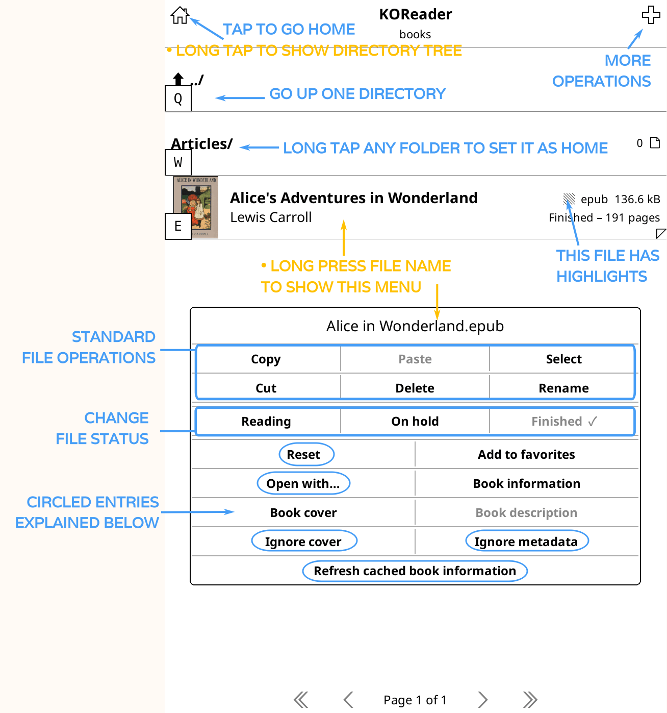
Per defecte, el navegador de fitxers mostra la carpeta d'INICI, que és la carpeta principal de la biblioteca. Ho podeu canviar mantenint premuda qualsevol carpeta. Podeu canviar moltes opcions del navegador de fitxers, com la manera de mostrar o ordenar els llibres, des del MENÚ SUPERIOR lliscant cap avall des de la part superior de la pantalla.
Els elements encerclats de la imatge s'expliquen a continuació:
REINICIALITZAR: aquesta opció us permet reinicialitzar algunes propietats del document, com el progrés de lectura, els marcadors, la imatge de portada personalitzada, etc., que podeu triar en un diàleg posterior.
AVÍS Aneu amb molt de compte quan feu servir el diàleg de reinicialitzar i comproveu bé quins elements estan marcats; si no, podríeu reinicialitzar per accident tot el que està relacionat amb el llibre.
OBRE AMB: KOReader té diferents motors per representar diferents tipus de fitxer. En alguns casos, podeu obrir un fitxer amb un altre motor per obtenir altres funcions. Vegeu les seccions Visualització de fitxers comprimits i Visualització d'imatges just a continuació.
IGNORAR PORTADA: si per algun motiu voleu desactivar la portada d'aquest llibre (pot tenir una portada errònia o que no es llegeix bé a la pantalla de paper electrònic), podeu seleccionar aquesta opció.
IGNORAR METADADES: si les metadades del llibre no són correctes, el camp del nom pot mostrar informació inútil. Seleccioneu aquesta opció per mostrar el nom del fitxer en lloc de les metadades.
REFRESCAR LA MEMÒRIA CAU D'INFORMACIÓ DEL DOCUMENT: KOReader desa a la memòria cau les metadades i la portada d'un llibre quan l'afegiu a la biblioteca. Si feu canvis al llibre després de copiar-lo al dispositiu, pot caldre actualitzar aquesta informació. Si veieu una portada o unes metadades errònies, podeu actualitzar la informació del llibre amb aquest element de menú.
El Navegador de fitxers us permet fer algunes operacions (com copiar, moure, suprimir o exportar subratllats) amb molts fitxers alhora. Per fer-ho, primer heu de seleccionar els fitxers. Actualment hi ha tres maneres diferents de seleccionar fitxers per a operacions en bloc al navegador de fitxers:
- Amb el primer mètode, manteniu premut el nom d'un fitxer i trieu Selecciona al diàleg emergent. Això activarà el Mode de selecció. Ara podeu tocar altres fitxers per afegir-los a la selecció. Quan acabeu de seleccionar els fitxers, toqueu la icona de marca de verificació de la cantonada superior dreta de la pantalla. Podeu triar què fer amb aquests fitxers des del diàleg, o sortir del mode de selecció des del mateix diàleg.
- Amb el segon mètode, premeu la icona + (més) de la cantonada superior dreta i trieu Seleccioneu fitxers al diàleg. Això activarà el Mode de selecció i la resta és igual que al primer mètode.
- Amb el tercer mètode, podeu triar els fitxers a partir d'una Cerca de fitxers. És útil si heu de fer una operació amb molts fitxers repartits en diferents carpetes. Per exemple, voleu moure a una carpeta nova tots els fitxers de la col·lecció escrits per Tolkien. Els passos per fer-ho seran:
- Al Menú superior, premeu la pestanya Cerca (amb la icona de la lupa) i trieu Cerca de fitxers.
- Marqueu l'opció Inclou subcarpetes si també voleu cercar dins de les carpetes. Podeu marcar Cerca també a les metadades del llibre si voleu que KOReader cerqui a les metadades dels llibres. Si no, KOReader només cercarà la paraula introduïda als noms dels fitxers.
- Podeu començar la cerca des de la Carpeta d'inici de la biblioteca o des de la Carpeta actual prement el botó corresponent.
- Quan acabi la cerca, veureu una llista de fitxers (si s'ha trobat el terme cercat, és clar). Ara podeu tocar la icona d'hamburguesa de la cantonada superior esquerra de la pantalla per entrar al Mode de selecció.
- Toqueu tots els fitxers amb què voleu fer operacions i toqueu la icona de marca de verificació de la cantonada superior esquerra de la pantalla. Veureu un diàleg que conté Selecciona a l’explorador de fitxers. Seleccioneu aquesta opció.
- Ara tornareu al Navegador de fitxers i els fitxers que heu seleccionat al diàleg de cerca també hi estaran seleccionats.
- Toqueu la icona de marca de verificació de la cantonada superior dreta de la pantalla. Ara podeu triar què fer amb aquests fitxers des del diàleg.
KOReader us permet afegir les carpetes preferides a un menú de dreceres a carpetes d'accés ràpid. Per exemple, si teniu una carpeta Arxiu a la biblioteca, a Inici>Articles>Científics>Arxivats, podeu assignar una drecera a aquesta carpeta Arxivats i accedir-hi ràpidament fins i tot mentre llegiu un llibre.
Afegir una drecera a una carpeta:
Hi ha dues maneres d'afegir una carpeta a la llista de Dreceres a carpetes:
- Quan sigueu al navegador de fitxers, toqueu el botó del menú + (més) de la cantonada dreta, toqueu l'element Afegeix a les dreceres a carpetes i introduïu un nom descriptiu per a aquesta drecera. Això afegirà la carpeta on sou.
- Quan sigueu al navegador de fitxers, manteniu premut el nom d'una carpeta per obrir el menú contextual. Toqueu l'element Afegeix a les dreceres a carpetes i introduïu un nom descriptiu per a aquesta drecera. Això afegirà la carpeta que heu premut.
Les carpetes que són a la llista de Dreceres a carpetes tindran una estrella (★) al Navegador de fitxers.
Podeu treure una carpeta de les dreceres de la mateixa manera, mantenint-la premuda i seleccionant Treu de les dreceres a carpetes.
Veure les dreceres a carpetes:
Podeu obrir les Dreceres a carpetes des del Navegador de fitxers o des de la Pantalla de lectura mentre llegiu un llibre.
- Des del navegador de fitxers: amb el menú + (més) de la cantonada superior dreta, triant Dreceres a carpetes, o assignant-hi un gest.
- Des de la pantalla de lectura: assignant-hi un gest.
És a la secció Navegador de fitxers de la Configuració de gestos. Podeu aprendre a configurar gestos a la secció corresponent d'aquesta guia.
Si teniu llibres en format .txt (més habitual en xinès i en idiomes amb alfabet ciríl·lic), podeu provar d'activar la funció Detecta automàticament la disposició dels fitxers TXT. En alguns casos pot millorar la representació i fer que el text sembli més «de llibre». Quan està activada, el motor de representació farà servir heurístiques (text ajustat a una llargada de línia màxima, línies en blanc simples o dobles que marquen paràgrafs, sagnats o text centrat considerat encapçalament...) per endevinar com representar millor el text i intentarà crear un índex.
Podeu activar aquesta funció aquí (només és visible si esteu llegint un fitxer .txt):
Tingueu en compte que aquesta funció pot desfer dibuixos d'art ASCII i els formats basats en caràcters d'espai. Si el llibre té aquest tipus d'elements, potser és millor fer servir el mode per defecte, en què el fitxer de text es representa tal com és amb un tipus de lletra monoespaiat.
KOReader pot llegir fitxers desats o comprimits en fitxers ZIP. Podeu obrir fitxers ZIP, CBZ i EPUB (que també són arxius ZIP) amb el visor d'arxius per veure'n els fitxers que contenen:
- Al Navegador de fitxers, manteniu premut el nom del fitxer
- Toqueu Obre amb…
- Toqueu Visor d’arxius
Un fitxer ZIP pot contenir molts tipus de documents, com html, txt o imatges. KOReader només pot obrir correctament el fitxer ZIP si li doneu una pista del tipus de fitxer que conté l'arxiu ZIP. Si doneu al fitxer només l'extensió .zip, KOReader suposarà que l'arxiu conté imatges i intentarà obrir-lo com un fitxer CBZ.
CAS PER DEFECTE: elvostrefitxer.zip - Se suposa que és un fitxer zip d'imatges (i s'obre amb el motor MuPDF)
Si el fitxer zip conté un d'aquests tipus (en lloc de només imatges), poseu-li el nom corresponent:
- FictionBook - elvostrefitxer.fb2.zip
- HTML - elvostrefitxer.htm.zip / elvostrefitxer.html.zip
- Fitxers de registre de text - elvostrefitxer.log.zip
- Markdown - elvostrefitxer.md.zip
- Rich Text Format - elvostrefitxer.rtf.zip
- Text sense format - elvostrefitxer.txt.zip
Si els documents no tenen aquests noms, és probable que es faci servir un motor de lectura o de format erroni i veureu el missatge No reader engine for this file or invalid file. Podeu canviar el nom del fitxer com s'ha explicat abans o mantenir premut el nom del fitxer i triar Obre amb… per seleccionar el motor correcte.
Podeu obrir fitxers d'imatge amb el visor d'imatges en lloc d'obrir-los com un llibre. Els fitxers oberts així no apareixen a l'historial i tenen un millor suport d'escalat i de gir.
- Al Navegador de fitxers, manteniu premut el nom del fitxer
- Toqueu Obre amb…
- Toqueu Visor d'imatges
KOReader ofereix dues opcions per llegir documents Markdown.
- Podeu obrir el document directament com un llibre tocant-lo. Aquest mode no aplica format, així que el fitxer .md es veurà com si s'obrís en un editor de text.
- Podeu convertir el document Markdown a HTML. Aquesta acció generarà un fitxer HTML a partir del document Markdown amb el format correcte i un índex creat a partir dels encapçalaments.
Per convertir un fitxer .md, manteniu-lo premut al Navegador de fitxers i toqueu Converteix al menú emergent. Es crearà un fitxer nou amb el mateix nom però amb l'extensió HTML a la mateixa carpeta. Tingueu en compte que la conversió pot trigar una estona segons el fitxer Markdown i la velocitat del dispositiu.
També podeu establir associacions per als tipus de fitxer que KOReader no reconeix automàticament. Per associar un fitxer amb un dels proveïdors de KOReader, primer manteniu premut el fitxer al Navegador de fitxers i després trieu un motor proveïdor per gestionar-lo. Podeu marcar:
- Usa sempre aquest motor de representació per a aquest fitxer per associar aquest proveïdor només amb aquest fitxer concret
- O marqueu Usa sempre aquest motor de representació per a aquest tipus de fitxer per associar aquest proveïdor amb tots els fitxers que tinguin la mateixa extensió
- Des del mateix diàleg, podeu veure les associacions que heu fet tocant Mostra els valors predefinits per als tipus de fitxer
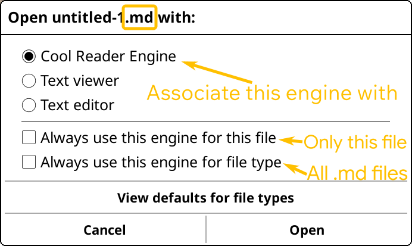
La funció de Col·leccions de KOReader us pot ajudar a organitzar la biblioteca de manera més eficient. Com a definició molt senzilla, les col·leccions són llistes de llibres creades per l'usuari. Per exemple, podeu crear dues col·leccions anomenades Ficció i No ficció per organitzar-hi els llibres. Evidentment, també podeu fer servir carpetes per fer-ho, però les col·leccions us donen més flexibilitat.
Alguns avantatges de les col·leccions respecte a l'organització per carpetes:
- Afegir un llibre a una col·lecció no mou el fitxer del llibre. Per tant, els llibres poden estar en carpetes diferents però aparèixer a la mateixa col·lecció.
- Un llibre pot estar en moltes col·leccions, cosa que no és possible amb les carpetes. Per exemple, podeu tenir una col·lecció de Ciència-ficció i una col·lecció de Ficció bèl·lica. Un llibre es pot afegir a totes dues col·leccions alhora.
- Podeu activar perfils amb les col·leccions. Això s'explicarà més avall si no coneixeu la funció de perfils de KOReader. (Evidentment, també podeu activar perfils amb carpetes, però les col·leccions no us obliguen a moure els llibres per fer servir, per exemple, perfils temporals.)
Podeu crear col·leccions que reflecteixin qualsevol tipus de classificació. Alguns exemples:
- Gèneres: ficció, no ficció, memòries...
- Estat del llibre: llegint ara, per llegir, el següent, no acabat...
- Sèries: El Senyor dels Anells, Harry Potter...
- Tipus de document: llibres, articles científics, articles web...
Podeu crear col·leccions des del diàleg de Col·leccions, que és aquí:
Podeu accedir a aquest diàleg des de la vista de lectura o des del Navegador de fitxers. Quan obriu aquest menú, us mostrarà una llista de les col·leccions. Per defecte hi veureu Preferits com a col·lecció, que inclou els llibres que ja heu afegit a la llista de Preferits.
- Afegir una col·lecció nova: feu servir el menú d'hamburguesa de la cantonada superior esquerra d'aquesta pantalla > Nova col·lecció
- Eliminar una col·lecció: manteniu premut el nom de la col·lecció > Elimina la col·lecció
- Canviar el nom d'una col·lecció: manteniu premut el nom de la col·lecció > Reanomena la col·lecció
- Canviar l'ordre de les col·leccions: feu servir el menú d'hamburguesa de la cantonada superior esquerra d'aquesta pantalla > Ordena les col·leccions
Hi ha tres llocs diferents a KOReader des d'on podeu afegir llibres a les col·leccions:
1. Des del navegador de fitxers i la pantalla d'historial
Podeu afegir un llibre a les col·leccions des del Navegador de fitxers o des de la pantalla d'Historial. Des de la pantalla d'Historial podeu afegir els llibres d'un en un. Manteniu premut el llibre i trieu Col·leccions…. Després podeu triar a quina o quines col·leccions voleu afegir el llibre.
Si afegiu diversos llibres, ho podeu fer des del Navegador de fitxers. Per a diversos llibres, el procediment és aquest:
- Manteniu premut un llibre
- Trieu Selecciona al menú emergent
- Seleccioneu altres llibres
- Toqueu la icona de marca de verificació (✔️) de la cantonada superior dreta
- Toqueu Col·leccions
Per afegir un sol llibre, només cal que el mantingueu premut al Navegador de fitxers i trieu Col·leccions al menú emergent.
2. Des del menú de col·leccions
Aquest mètode us permet afegir un o diversos llibres a les Col·leccions. La diferència més gran respecte al mètode del Navegador de fitxers és que podeu afegir carpetes senceres i les seves subcarpetes a les col·leccions d'una vegada. És molt útil si els llibres ja estan organitzats en carpetes. Per exemple, si tots els llibres de ciència-ficció són en una sola carpeta, podeu crear una col·lecció anomenada Ciència-ficció i afegir-hi aquesta carpeta d'una vegada.
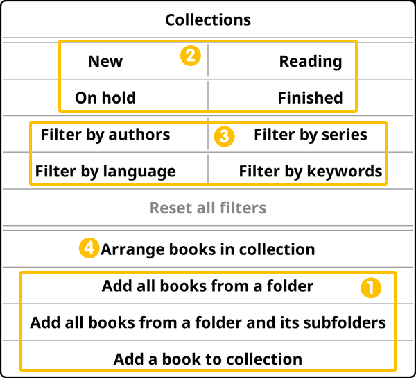
A la imatge anterior, el quadre 1 mostra les opcions per afegir llibres. Podeu arribar a aquest menú des del menú d'hamburguesa de la pantalla de col·leccions:
- Afegeix tots els llibres d'una carpeta: com indica el nom, aquesta opció us permet seleccionar una carpeta per afegir-ne tots els llibres a aquesta col·lecció. Tingueu en compte que aquesta opció no afegeix els llibres de les subcarpetes de la carpeta triada. Per exemple, si seleccioneu la carpeta Ficció i a dins hi teniu carpetes anomenades Ciència-ficció i Ficció bèl·lica, amb aquesta opció no s'afegiran.
- Afegeix tots els llibres d’una carpeta i les seves subcarpetes: aquesta és l'opció que afegirà totes les subcarpetes de la carpeta triada. Aneu amb compte amb aquesta opció, perquè baixarà fins al final en afegir els llibres. Així, si teniu molts nivells de carpetes imbricades, potser hi haurà molts més llibres del que pensàveu.
- Afegeix un llibre a la col·lecció: aquesta és l'opció bàsica que us permetrà afegir un sol llibre.
Podeu treure un llibre de les col·leccions des del Navegador de fitxers, des de la pantalla d'Historial o des de la pantalla de Col·leccions. A les pantalles del Navegador de fitxers i de l'Historial, manteniu premut el llibre i trieu Col·leccions…. Veureu una marca de verificació al costat de les col·leccions a les quals heu afegit el llibre. Desmarqueu-les tocant-les per treure el llibre d'aquella col·lecció. També podeu mantenir premut un llibre a la pantalla de Col·leccions i triar Elimina de la col·lecció.
Les col·leccions poden estar molt plenes, però KOReader us permet trobar els llibres fàcilment gràcies a moltes opcions de filtratge. A la imatge anterior podeu veure les opcions de filtratge als quadres 2 i 3. El quadre 2 us permet filtrar per estat del llibre (nou, en lectura, acabat, en espera) i el quadre 3 us permet filtrar per metadades del llibre (autor, sèrie, idioma, paraules clau). A més, podeu combinar aquests dos grups de filtres com en aquest exemple: «Mostra'm els llibres nous d'aquesta col·lecció escrits per Isaac Asimov (Filtra per autors -> Isaac Asimov) que encara no he començat (Filtra per estat -> Nou).»
Podeu actualitzar les metadades d'un llibre mantenint-lo premut al Navegador de fitxers i triant Informació del llibre al menú. A la finestra emergent podeu mantenir premut qualsevol camp per canviar metadades com l'autor o les paraules clau. També podeu fer servir Calibre per a aquesta tasca, una aplicació externa que fa molt més fàcil gestionar les metadades dels llibres.
Podeu fer dos tipus de cerca a les col·leccions: podeu cercar una frase als títols i les metadades dels llibres o també podeu cercar dins del text dels llibres. Podeu obrir el diàleg de cerca des de:
Si voleu fer una cerca dins del text dels llibres, tingueu en compte aquests punts:
- Aquest tipus de cerca només està disponible si obriu les col·leccions des del navegador de fitxers. No està disponible des de la pantalla de lectura.
- Aquesta cerca pot ser lenta (uns 2 segons per llibre de la col·lecció). Per tant, si teniu una col·lecció molt plena, pot trigar molta estona.
La funció de cerca depèn d'on sigueu a la finestra de col·leccions. Si sou al nivell arrel, on veieu totes les col·leccions, la cerca es farà a totes les col·leccions. Si només voleu cercar en una col·lecció concreta, l'heu de tocar per entrar-hi. Això és especialment important si també cerqueu dins del text dels llibres, perquè és una operació lenta.
Quan feu una cerca, els resultats es desaran automàticament com a col·lecció nova.
Després de crear les col·leccions i afegir-hi llibres, probablement les voldreu mantenir sincronitzades amb algunes carpetes. Per exemple, imagineu que heu creat una col·lecció de Ciència-ficció. I també teniu una carpeta CF a la biblioteca on poseu els llibres de ciència-ficció. Si voleu que la col·lecció de ciència-ficció s'actualitzi sola quan afegiu un fitxer nou a aquesta carpeta, ho podeu fer amb la funció de carpetes connectades de les col·leccions.
Amb aquesta funció podeu connectar una o més carpetes a la col·lecció. Després d'això, KOReader (tornarà a) explorar les carpetes per afegir o treure llibres de les col·leccions en aquestes condicions:
- En connectar una carpeta a una col·lecció
- En incloure les subcarpetes d'una carpeta connectada
- En mostrar la col·lecció
- En iniciar el programa
Com connectar una carpeta a la col·lecció:
- Aneu a la pantalla de Col·leccions que es veu a la imatge anterior.
- Manteniu premut el nom de la col·lecció a la qual voleu connectar carpetes (1).
- Seleccioneu Connecta carpetes al menú emergent (2).
- S'obrirà la pantalla de la llista de carpetes connectades.
- Afegiu una carpeta prement la icona MÉS de la cantonada superior esquerra d'aquella pantalla, que obrirà la pantalla de selecció de carpetes.
- Repetiu l'últim pas si voleu connectar més carpetes.
Les col·leccions amb carpetes connectades tindran una icona de carpeta, com podeu veure a la imatge anterior (3).
Potser també voldreu incloure les subcarpetes d'una carpeta a la sincronització. Al pas 4 anterior, quan obriu la pantalla de la llista de carpetes connectades, podeu mantenir premuda una carpeta per incloure/excloure les subcarpetes des del menú emergent.
Com desconnectar una carpeta de la col·lecció:
- Aneu a la pantalla de Col·leccions que es veu a la imatge anterior.
- Manteniu premut el nom de la col·lecció a la qual voleu connectar carpetes (1).
- Seleccioneu Connecta carpetes al menú emergent (2).
- S'obrirà la pantalla de la llista de carpetes connectades.
- Manteniu premuda la carpeta que voleu desconnectar i trieu Desconnecta la carpeta al menú emergent.
Les col·leccions es poden fer servir amb la funció de perfils de KOReader. Si encara no coneixeu els perfils, aquí teniu una descripció de la nostra secció de Perfils:
Un perfil és bàsicament un conjunt d'accions que es poden activar amb un sol gest (com una macro).
Per exemple, imagineu que, quan llegiu algun tipus de llibres, sempre:
- Gireu la pantalla a orientació horitzontal
- Augmenteu la grandària de lletra i el contrast i
- Enceneu la llum de la pantalla
Amb el complement de perfils, podeu fer tot això alhora amb una sola acció.
Podeu executar un perfil manualment, però el poder real dels perfils s'allibera amb la funció d'execució automàtica. Amb aquesta funció podeu activar un perfil segons algunes condicions. Aquí teniu l'enllaç a la secció corresponent de la guia: Execució automàtica de perfils. Per ara, aquí només explicarem una condició d'activació: les Col·leccions.
Bàsicament, podeu crear alguns perfils i configurar-los perquè s'executin automàticament si el llibre obert és en una col·lecció concreta. Alguns exemples útils:
- Podeu afegir tots els mangues a una col·lecció Manga i fer un perfil que canviï la direcció del pas de pàgina a dreta a esquerra i inverteixi els tocs i lliscaments de canvi de pàgina quan obriu un manga d'aquesta col·lecció.
- Podeu afegir els còmics a una col·lecció que activi un perfil per reduir l'interval d'actualització de la pantalla a cada pàgina per evitar imatges fantasma.
- Podeu afegir els PDF problemàtics a una col·lecció, de manera que, quan els obriu, un perfil activi l'OCR automàtic o el mode de redistribució.
KOReader pot redistribuir els documents PDF (aquesta opció és al menú inferior mentre llegiu un document de disseny fix com un PDF) per fer-los adequats a les pantalles petites dels lectors electrònics. Però, per obtenir els millors resultats, potser voldreu convertir els documents al format EPUB, més flexible.
Les aplicacions més utilitzades per convertir o optimitzar els documents per al dispositiu de lectura mòbil són Calibre (centrada en EPUB i Kindle) i K2pdfopt (centrada en PDF).
Calibre pot convertir els documents entre molts formats. També té un editor integrat que us permet editar llibres electrònics (i corregir-ne problemes) en els formats de llibre electrònic més populars, EPUB i Kindle.
K2pdfopt optimitza fitxers PDF/DJVU per a lectors electrònics i telèfons intel·ligents. Funciona bé amb fitxers PDF/DJVU de diverses columnes i pot redistribuir el text fins i tot en fitxers PDF escanejats. També es pot fer servir com a eina general per copiar, retallar, redimensionar i aplicar OCR a fitxers PDF.
OCRmyPDF és una aplicació de línia d'ordres que pot afegir una capa de text OCR a fitxers PDF escanejats (que només contenen imatges sense text), de manera que s'hi pugui cercar o copiar i enganxar text. Pot ser especialment útil per llegir llibres antics escanejats. També pot optimitzar les imatges per reduir la mida del fitxer.
SingleFile és una extensió de navegador per a Mozilla Firefox, Google Chrome i Microsoft Edge. Aquesta extensió permet desar una pàgina web com un sol fitxer .html amb tots els recursos (imatges, fulls d'estil, scripts) incrustats.
!!! AVANÇAT
KOReader desa la configuració i la informació addicional relacionada amb els llibres a la mateixa carpeta que el fitxer del llibre. En diem metadades i inclouen:
- La configuració visual del llibre
- El progrés de lectura del llibre
- Els subratllats, els marcadors i les notes
En un canvi recent, hem afegit noves maneres d'emmagatzemar aquestes metadades per resoldre alguns problemes relacionats amb la sincronització entre dispositius. Actualment hi ha tres mètodes diferents per emmagatzemar les metadades i cadascun té els seus avantatges i inconvenients.
Podeu canviar aquesta opció des d'aquest menú:
AVÍS Us recomanem encaridament que llegiu la secció següent per entendre les diferències i com funciona cada mètode abans de fer cap canvi. Si no, hi ha el risc de perdre la configuració, el progrés i les anotacions dels llibres.
Aquest és el mètode per defecte que es fa servir en una instal·lació nova de KOReader. Amb aquest mètode, quan copieu Alice in Wonderland.epub al dispositiu i l'obriu per primera vegada, es crearà una carpeta anomenada Alice in Wonderland.sdr a la mateixa carpeta. Aquesta carpeta conté els fitxers amb la configuració, les anotacions i el progrés de lectura d'aquest llibre.
Avantatges
- Podeu fer còpies de seguretat i restaurar manualment la configuració de cada llibre.
- Quan sincronitzeu carpetes o feu còpies de seguretat amb un sistema com Syncthing o Dropbox, la configuració se sincronitzarà juntament amb els llibres.
- Podeu canviar el nom de les carpetes superiors on es troba el llibre; això no confon KOReader.
Inconvenients
- Si reorganitzeu la biblioteca movent o canviant el nom dels fitxers dels llibres o de la carpeta .sdr que els acompanya fora del navegador de fitxers de KOReader, perdreu les metadades d'aquells llibres sense cap avís.
- Aquestes carpetes .sdr seran visibles quan navegueu per les carpetes de la biblioteca amb un altre navegador de fitxers o des de l'ordinador, cosa que pot embrutar la vista.
Aquest mètode és essencialment igual que el mètode per defecte anterior. La diferència és que, amb aquest mètode, totes les carpetes .sdr dels llibres seran dins d'una sola carpeta que és dins de l'estructura de carpetes principal de KOReader, en lloc de ser a la carpeta de la biblioteca, al costat dels fitxers dels llibres.
Avantatges
- Les carpetes .sdr dels llibres només seran visibles per a KOReader i només les farà servir KOReader. No embrutaran la vista de les carpetes de la biblioteca quan hi navegueu amb un altre navegador de fitxers o des de l'ordinador.
Inconvenients
- Si reorganitzeu la biblioteca movent o canviant el nom de les carpetes de la biblioteca, dels fitxers dels llibres o de la carpeta .sdr que els acompanya fora del navegador de fitxers de KOReader, perdreu les metadades d'aquells llibres sense cap avís.
- Com que les metadades dels llibres no seran a les carpetes de la biblioteca, cap sincronització ni còpia de seguretat de la biblioteca les inclourà.
Aquest mètode és semblant a l'anterior, ja que les carpetes .sdr seran dins d'una carpeta interna. Però aquest mètode s'ha desenvolupat per resoldre les mancances de l'anterior. Normalment, si canvieu el nom d'un llibre fora de KOReader (amb el gestor de fitxers o el lector natius del dispositiu o des d'un ordinador connectat), el nom de la seva carpeta .sdr ja no coincidirà i es perdran les metadades d'aquell llibre. Si només feu servir el navegador de fitxers de KOReader per a les operacions amb fitxers, això es gestiona automàticament i no té cap conseqüència.
Amb aquest mètode AMB HASH, les carpetes .sdr no s'identifiquen per la ruta o el nom del fitxer del llibre. En lloc d'això, es fa servir un hash MD5 parcial per vincular els llibres amb la seva configuració. Aquest hash es fa servir com a identificador únic del llibre i es calcula a partir del contingut del fitxer del llibre. El mateix hash també es fa servir per anomenar la seva carpeta .sdr.
Avantatges
- Les carpetes .sdr dels llibres només seran visibles per a KOReader i només les farà servir KOReader. No embrutaran la vista de les carpetes de la biblioteca quan hi navegueu amb un altre navegador de fitxers o des de l'ordinador.
- Podeu canviar el nom dels llibres, moure'ls i copiar-los amb un altre navegador de fitxers o des de l'ordinador. KOReader continuarà reconeixent els llibres després d'aquestes operacions.
- Amb aquest mètode, KOReader associa la mateixa carpeta .sdr a totes les còpies del llibre, fins i tot si aquestes còpies són en dispositius diferents. Per exemple, si feu servir Syncthing, aquest mètode us permet sincronitzar la carpeta /hashdocsettings juntament amb els fitxers dels llibres entre molts dispositius que tinguin KOReader instal·lat. Malgrat que les rutes relatives d'aquells llibres siguin diferents a cada dispositiu, podeu tenir les anotacions i el progrés sincronitzats entre els dispositius. Això no és possible amb els altres mètodes.
Inconvenients
- Qualsevol operació que modifiqui el fitxer directament (com escriure subratllats als PDF o baixar-lo des de Calibre) canviarà el fitxer, de manera que el seu identificador MD5 canviarà (a diferència de canviar-ne el nom o moure'l, que amb aquest mètode és segur). En aquest cas KOReader no podria reconèixer el llibre i aquests llibres perdrien les metadades.
- Calcular els identificadors dels fitxers pot alentir la navegació pel Navegador de fitxers en carpetes grans.
Hi ha molts tipus de gestos que podeu fer servir per controlar KOReader. Alguns gestos tenen limitacions pel que fa a la part de la pantalla on es poden fer servir i a les direccions admeses. Aquestes limitacions s'indiquen a continuació.
TOC / DOBLE TOC Un toc o doble toc amb UN dit FUNCIONA: a qualsevol lloc de la pantalla |
|
|
TOCAR I MANTENIR Un toc mantingut amb UN dit FUNCIONA: només a les quatre cantonades |
|
|
TOC AMB DOS DITS Un toc amb DOS dits alhora FUNCIONA: només a les quatre cantonades |
|
SEPARAR I PESSIGAR Igual que fer zoom per ampliar i reduir en un telèfon o una tauleta. FUNCIONA: a qualsevol lloc de la pantalla INFO Aquest gest pot funcionar de manera menys fiable segons el dispositiu. Si és el cas, trieu un altre tipus de gest. |
|
LLISCAMENT AMB UN DIT Moviment de lliscament amb UN dit FUNCIONA: a les vores de la pantalla (HORITZONTAL i VERTICAL) i a qualsevol lloc excepte les vores (DIAGONAL) |
|
LLISCAMENT AMB DOS DITS Moviment de lliscament amb DOS dits alhora FUNCIONA: a qualsevol lloc de la pantalla |
|
MULTILLISCAMENT Més d'un lliscament fet l'un darrere l'altre sense aixecar el dit. Per exemple, com si dibuixéssiu la lletra U (AVALL-DRETA-AMUNT) FUNCIONA: a qualsevol lloc de la pantalla |
|
Icones de Econceptive de Noun Project |
Aquesta taula mostra els gestos que vénen amb KOReader. Podeu canviar aquests gestos segons les vostres preferències des de:
Cantonada superior esquerra > Activa/desactiva el pas de pàgines
Cantonada superior dreta > Afegeix/treu un marcador
Cantonades diagonals oposades alhora > Fes una captura de pantalla
Costat esquerre > Ves 10 pàgines enrere
Costat dret > Ves 10 pàgines endavant
Lliscament diagonal curt > Actualització de pantalla completa
Lliscament diagonal llarg > Fes una captura de pantalla
- Retrocedir a la posició prèvia
- Ves a l'últim marcador
- Fulleja el document
- Marcadors
- Índex
- Mostrar el diàleg Il·luminació
- Activa/desactiva la redistribució
- Historial
- Estat de lectura del llibre
- Ves a la pàgina
- Enrere
- Capítol anterior
- Capítol següent
- Obrir document anterior
- Preferits
Aquesta és una llista de totes les accions que podeu assignar a un gest amb el menú de Configuració de gestos. Podeu fer servir la funció de cerca del navegador (generalment Ctrl+F) per cercar-hi una acció. Aquestes accions també es poden fer servir al vostre propi Menú ràpid. Consulteu la secció corresponent de la guia per a més informació.
- Navegador de fitxers
- Obrir document anterior
- Historial
- Cerca a l'historial
- Preferits
- Col·leccions
- Cerca de col·leccions
- Buscar en diccionari
- Buscar en Viquipèdia
- Mostra el menú
- Cerca als menús
- Obre el fitxer següent de la carpeta de l'últim llibre
- Obre el fitxer anterior de la carpeta de l'últim llibre
- Fitxer de quadern
- Captura de pantalla
- Mostrar efemèrides astronòmiques
- Cerca de metadades de Calibre
- Examinar totes les etiquetes de calibre
- Examinar totes les sèries calibre
- Buscar tots els autors de calibre
- Examinar tots els títols de calibre
- Connexió Wi-Fi amb Calibre
- Desconnexió Wi-Fi amb Calibre
- Estadístiques de lectura: activa/desactiva
- Estadístiques de lectura: mostra el progrés
- Estadístiques de lectura: mostra el rang de temps
- Estadístiques de lectura: mostra la vista de calendari
- Estadístiques de lectura: mostra la cronologia d'avui
- Estadístiques de lectura: sincronitza
- Editor de text: obrir l'últim arxiu
- Obrir el Desenvolupador de vocabulari
- Recuperació de Wallabag
- Pujada de la cua de Wallabag
- Pujada dels estats de Wallabag
- Progrés de lectura
- Commutar servidor SSH
- Vista de calendari de les estadístiques
- Cronologia d'avui de les estadístiques
- Sincronitza les estadístiques dels llibres
- Sortir de la pantalla de repòs
- Reiniciar KOReader
- Sortir de KOReader
- Activar o desactivar la pulsació llarga en les cantonades
- Activar entrada tàctil
- Desactivar entrada tàctil
- Commuta l'entrada tàctil
- Inverteix els botons de canvi de pàgina
- Gir
- Commutar orientació
- Inverteix la rotació
- Gira 90 graus en sentit horari
- Gira 90 graus en sentit antihorari
- Commutar pantalla completa
- Mostrar informació de xarxa
- Estadístiques de la bateria
- Estadístiques del sistema
- Emulador de terminal
- Iniciar emmagatzematge USB
- Suspèn
- Reiniciar el dispositiu
- Apaga
- Commutar la repetició de tecles
- Activar/desactivar acceleròmetre
- Activar Wi-Fi
- Desactivar Wi-Fi
- Canviar Wi-Fi
- Mostrar el diàleg Il·luminació
- Commutar il·luminació
- Ajustar la lluentor de la pantalla
- Augmentar la lluentor de la pantalla
- Reduir la lluentor de la pantalla
- Ajustar la temperatura de color de la pantalla
- Augmentar la temperatura de color de la pantalla
- Reduir la temperatura de color de la pantalla
- Canviar al mode nit
- Configura el mode nit
- Refrescar pantalla completa
- Freqüència d'actualització completa (sempre)
- Freqüència d'actualització completa (no en mode nit)
- Freqüència d'actualització completa (en mode nit)
- Parpelleja sempre en els límits dels capítols
- Commutar parpelleig en els límits dels capítols
- No parpellejar mai en la segona pàgina d'un capítol
- Commutar parpelleig en la segona pàgina d'un capítol
- Parpellejar sempre en pàgines amb imatges
- Commutar parpelleig en pàgines amb imatges
- Temperatura de color automàtica desactivada
- Usar la posició del sol per a temperatura de color automàtica
- Horari d'ús de temperatura de color automàtica
- Utilitzar la temperatura de color automàtica quan s'apropi la mitja nit
- Utilitzar la temperatura de color automàtica quan s'apropi el migdia
- Cicle de temperatures de color automàtiques mitjançant modes
- Tipus de lletra
- Augmenta la mida de lletra
- Reduir grandària de lletra
- Grandària de lletra
- Espaiat de paraules
- Expansió de paraules
- Contrast
- Amplada de lletra
- Optimització de lletres
- Interlletratge de lletres
- Dues columnes
- Marges esq./dret
- Sincronitza els marges sup./inf.
- Marge superior
- Marge inferior
- Mode de visualització (pàgina-continu)
- Mode de representació
- Zoom
- Interlineat
- Barra d'estat alternativa
- Estil incrustat
- Tipus de lletra incrustats
- Escalat d'imatges
- Invertir imatges
- Establir mode de visualització
- Ordena per
- Inverteix l’ordre
- Barreja carpetes i fitxers
- Mostrar menú addicional
- Alternar el mode de selecció
- Refrescar contingut
- Dreceres a carpetes
- Cerca de fitxers
- Resultats de l'última cerca
- Carpeta superior
- Anar a la pàgina
- Tornar
- Exportar les notes de tots els llibres de l'historial
- Catàleg OPDS
- Mostrar menú inferior
- Commutar barra d'estat
- Activar/desactivar la barra de progrés del capítol
- Capítol anterior
- Capítol següent
- Primera pàgina
- Última pàgina
- Pàgina aleatòria
- Passar pàgines
- Anar a la pàgina
- Fulleja el document
- Marcador anterior
- Marcador següent
- Primer marcador
- Últim marcador
- Últim marcador
- Tornar
- Tornar a la posició anterior
- Avançar a la posició següent
- Seguir l'enllaç més pròxim
- Segueix l'enllaç intern més pròxim
- Afegeix la posició actual a l'historial
- Esborrar l'historial de posicions
- Cerca de text complet
- Últims resultats de cerca de text complet
- Índex
- Mapa del llibre
- Mapa del llibre (visió general)
- Navegador de pàgines
- Marcadors
- Cerca de marcadors
- Afegeix/treu un marcador
- Estat de lectura del llibre
- Informació del llibre
- Descripció del llibre
- Coberta del llibre
- Tradueix la pàgina actual
- Invertir les pulsacions i gestos de canvi de pàgina
- Commutar direcció de canvi de pàgina
- Commutar l'índex personalitzat
- Commutar els fluxos ocults personalitzats
- Configurar l'acció de subratllat
- Canviar l'acció de subratllat
- Canviar l'estil de subratllat
- Desa les metadades del llibre
- Exporta les anotacions
- Exportar les notes del llibre
- Exportar les notes de tots els llibres de l'historial
- Moure el llibre actual a la carpeta d'arxiu
- Estadístiques de lectura: llibre actual
- Exportar posició de lectura d'aquest dispositiu
- Importar posició de lectura d'altres dispositius
- Commutar desplaçament de pàgina
- Alternar entre marcadors
- Commutar redistribució de text
- Mode d'escalat
- Canviar factor de zoom
- Alternar zoom de vinyeta
- Retallar la pàgina
- Marge
- Superposició horitzontal
- Solapament vertical
- Ajustar
- Zoom a
- Nombre de columnes o files en les quals dividir la pàgina
- Factor de zoom
- Direcció
- Mode de visualització
- Espai entre pàgines
- Interlineat
- Alineació
- Grandària de lletra
- Establir mida de lletra
- Espai entre paraules
- Redistribució de text
- Contrast
- Eliminar marca d'aigua
- Qualitat de renderitzat
- Idioma del document
- Forçar OCR
- Direcció de lectura
- Columnes del document
- Alineació automàtica
Si teniu un dispositiu amb teclat, com el Kindle 2 i el Kindle 3, inclosos els teclats Bluetooth i els emuladors, podeu fer servir les tecles del teclat, els botons del dispositiu i les dreceres per controlar KOReader. També s'admet el Kindle 4, que no té un teclat complet però té prou botons perquè sigui funcional en aquest context. En aquests dispositius, KOReader activarà un menú addicional anomenat Dreceres de teclat, al qual podeu accedir aquí:
Aquest menú és molt semblant a la interfície de Configuració de gestos. En aquest menú:
- Podeu veure les dreceres disponibles al dispositiu
- Podeu veure les accions predefinides d'algunes dreceres
- Podeu assignar accions a les dreceres disponibles
Totes les accions de la Configuració de gestos també es poden assignar a dreceres de teclat. Això vol dir que podeu controlar gairebé totes les funcions de KOReader amb aquestes dreceres.
A la taula següent podeu veure les assignacions de tecles i dreceres per defecte:
INFO La tecla universal de captura de pantalla és Alt + Shift + G. Està disponible a totes les pantalles, modes i plataformes. Al Kindle 4, és Keyboard + Menu.
INFO Si teniu un Kindle 4, la tecla SHIFT de la taula següent correspon al botó KEYBOARD. Per tant, les dreceres Shift + (UP/DOWN/LEFT/RIGHT) corresponen a botó Keyboard + (UP/DOWN/LEFT/RIGHT) al Kindle 4.
Mode de navegador de fitxers | |
| Obre el menú superior | F1 |
| Ves a l'inici | Inici |
| Moure's per la llista de fitxers | Up / Down |
| Obre el llibre seleccionat | Enter |
| Surt de l'aplicació | Esc |
Mode de lectura | |
| Obre el menú superior | F1 |
| Obre el menú inferior | Enter |
| Enrere / surt de l'aplicació | Esc |
| Marcadors | Shift + Left |
| Afegeix/treu un marcador | Shift + Right |
| Buscar en diccionari | Ctrl + D (Alt + D als Kindle) |
| Buscar en Viquipèdia | Ctrl + W |
| Cerca de text complet | Ctrl + S |
| Cerca de fitxers | Ctrl + F |
Enllaços | |
| Selecciona l'enllaç següent de la pàgina | Tab |
| Selecciona l'enllaç anterior de la pàgina | Shift+Tab |
| Obre l'enllaç seleccionat de la pàgina | Enter |
Visor d'imatges (pulsació llarga sobre la imatge) | |
| Amplia | Page Down |
| Redueix | Page Up |
Subratllat | |
| Entra al mode de subratllat | H |
| Inicia/atura el subratllat | Enter |
| Mou l'indicador de subratllat | Left/Right Up/Down |
| Mou l'indicador més de pressa | Shift + Left/Right/Up/Down |
| Surt del mode de subratllat | Esc |
Navegació pel llibre | |
| Pas de pàgina | Left-Right / Up-Down Page Up-Page Down |
| Índex | Shift + Up |
| Mapa del llibre | Shift + Down |
| Ves al començament | 1 |
| Ves al 11% del llibre | 2 |
| Ves al 22% del llibre | 3 |
| Ves al 33% del llibre | 4 |
| Ves al 44% del llibre | 5 |
| Ves al 55% del llibre | 6 |
| Ves al 66% del llibre | 7 |
| Ves al 77% del llibre | 8 |
| Ves al 88% del llibre | 9 |
| Ves al final | 0 |
Al diàleg per fullejar el document | |
| Ves al començament | Q |
| Ves al 11% del llibre | W |
| Ves al 22% del llibre | E |
| Ves al 33% del llibre | R |
| Ves al 44% del llibre | T |
| Ves al 55% del llibre | Y |
| Ves al 66% del llibre | U |
| Ves al 77% del llibre | I |
| Ves al 88% del llibre | O |
| Ves al final | P |
Zoom de pàgina Només per a PDF, DJVU i imatges | |
| Ajusta a la pàgina | A |
| Ajusta a l'amplada de la pàgina | S |
| Ajusta a l'altura de la pàgina | D |
| Ajusta al contingut | Shift + A |
| Ajusta a l'amplada del contingut | Shift + S |
| Ajusta a l'altura del contingut | Shift + D |
El Menú ràpid és una funció recent de KOReader que us permet tenir un menú personalitzat d'accés ràpid, com a la imatge d'exemple següent. Podeu assignar aquest menú a un gest i accedir-hi amb un sol lliscament. Fins i tot podeu tenir un menú més llarg que la pantalla: s'hi pot desplaçar.
Bàsicament, qualsevol acció a la qual podeu assignar un gest es pot afegir al Menú ràpid. Els seus avantatges són:
- No cal memoritzar molts gestos per a cada acció.
- Algunes accions poc freqüents potser no mereixen un gest, però pot ser massa pesat trobar-les al sistema de menús. En lloc d'això, podeu afegir aquest tipus d'accions poc utilitzades a aquest menú.
- Si instal·leu KOReader per a un familiar o un amic, podeu afegir les seves accions preferides a aquest menú perquè ni tan sols hagi d'entrar al sistema de menús mentre fa servir KOReader.
Un exemple de Menú ràpid:
Hi ha dos mètodes per crear un Menú ràpid: el fàcil i l'avançat. Si només us cal un menú, el mètode fàcil us hauria de ser suficient. Si voleu mostrar diferents menús amb diferents gestos, heu de fer servir el mètode avançat. Un altre avantatge del mètode avançat és que és més fàcil reassignar el gest. Si voleu canviar el gest del menú, el podeu moure fàcilment a un altre gest des del menú del mètode avançat. Si voleu fer servir un altre gest amb el mètode fàcil, heu de tornar a crear el menú amb el gest nou.
- Aneu al menú de Configuració de gestos des de:
- Decidiu un gest per obrir el menú i toqueu-lo.
- Trieu les accions que voleu veure al menú des del menú de configuració del gest. Evidentment, podeu seleccionar moltes accions alhora.
- Després de seleccionar totes les accions, indicareu a KOReader que tracti aquest gest com un menú. Ho feu activant l'element Mostrar com a Menú ràpid de la segona pàgina, com podeu veure a la imatge següent.
- Podeu ordenar els elements del menú amb l'opció Ordena que hi ha just a sota.
Ara podeu obrir el menú amb el gest que heu seleccionat. Si voleu canviar els elements del menú, podeu obrir la pàgina del gest i afegir-ne o treure'n.
Aquest Menú ràpid és en realitat un Perfil que apareix a la pantalla com un menú. Per tant, primer heu de conèixer els Perfils. Si ja sabeu com fer-los servir, podeu continuar llegint; si no, aneu a l'apartat Perfils (la secció següent), creeu un Perfil amb alguns elements i torneu aquí.
Abans de continuar, suposem que ja heu creat un Perfil tal com s'indica al paràgraf anterior. Ara convertirem el Perfil en un Menú ràpid.
1. Aneu al Perfil que acabeu de crear i activeu Mostrar a la llista d'accions (es mostra a la imatge següent). Això farà que el Perfil sigui visible a la Configuració de gestos. Activeu també Mostrar com a Menú ràpid (també a la imatge següent), perquè el perfil es mostri com un menú en lloc d'executar-se en silenci.
2. Ara necessitem una manera d'accedir al menú. Aneu a la Configuració de gestos i trieu un gest de la llista per assignar-lo al menú. Suposem que volem tocar la cantonada de la pantalla per mostrar el menú. Toqueu Pulsació a les cantonades i trieu Zona inferior esquerra. Després toqueu General i aneu a la segona pàgina. Hi trobareu el perfil com a Perfil x, on x és el nom que heu donat a aquest Perfil. Toqueu-ne la casella per assignar el perfil a aquest gest.
Després de tots els passos, ara hauríeu de veure el menú quan toqueu la cantonada inferior esquerra. Podeu editar el menú anant a la pàgina del seu Perfil, on podeu afegir-hi o treure'n elements. També hi ha un element Ordena per canviar l'ordre dels elements del menú.
Com hem dit, un Menú ràpid és en realitat un Perfil. Això vol dir que podeu tenir més d'un menú. Si voleu, podeu crear un altre Perfil i seguir els mateixos passos per crear un altre menú.
Normalment, després de seleccionar un element del Menú ràpid, el menú desapareix de la pantalla. De vegades potser voldreu mantenir el menú obert després de seleccionar un element. Això us permet ajustar opcions com en aquests exemples:
- Canvis incrementals, com augmentar o reduir la lluentor, fer la lletra més gran o més petita, pàgines o capítols anteriors o següents, etc.
- Grups d'opcions que activeu una darrere l'altra (però no alhora), com activar la wifi i després iniciar el servidor SSH
Podeu activar aquesta opció des del menú següent si teniu un Menú ràpid basat en la configuració de gestos (mètode fàcil):
O des d'aquest menú, si teniu un Menú ràpid basat en perfils (mètode avançat):
Normalment el Menú ràpid s'obre centrat al mig de la pantalla. Si feu servir el lector electrònic amb una sola mà, podeu activar una opció que obrirà el menú a la posició del gest. D'aquesta manera, el menú quedarà més a prop del dit i serà més fàcil d'accedir-hi. Per fer servir aquesta funció, activeu aquesta opció:
Un perfil és bàsicament un conjunt d'accions que es poden activar amb un sol gest (com una macro).
Per exemple, imagineu que, quan llegiu algun tipus de llibres, sempre:
- Gireu la pantalla a orientació horitzontal
- Augmenteu la grandària de lletra i el contrast i
- Enceneu la llum de la pantalla
Amb el complement de perfils, podeu fer tot això alhora amb una sola acció.
Per crear un perfil, primer assegureu-vos que el complement Perfils està activat. Si no el veieu a:
l'heu d'activar des de:
Al menú Perfils, toqueu Nou i doneu un nom descriptiu al perfil. Ara hauríeu de veure el perfil nou al menú. Toqueu-lo i veureu la pantalla de l'esquerra. Des d'aquest menú també podeu Suprimir, Canviar el nom o Duplicar un perfil.
Quan toqueu l'element de menú Edita les accions, veureu el menú de la dreta. És el mateix menú que el de selecció de gestos, amb accions de moltes categories. Això vol dir que podeu fer qualsevol acció de Gest amb un Perfil.
Ara podeu seleccionar diversos elements de totes aquestes categories. Les accions que hi seleccioneu es faran quan activeu aquest perfil.
Hi ha moltes maneres d'activar un perfil:
- Podeu activar un perfil amb una pulsació llarga sobre el seu nom des d'aquest mateix menú de Perfils
- Podeu activar un perfil amb un gest. Per fer-ho, heu d'activar Mostrar a la llista d'accions al menú del perfil. Després el podeu seleccionar des de:
- També podeu activar un perfil automàticament segons algunes condicions. Vegeu l'apartat següent per aprendre a fer servir aquesta funció potent.
Podeu executar un perfil manualment, com s'ha explicat abans, però el poder real dels perfils s'allibera amb la funció d'execució automàtica. Amb aquesta funció podeu activar un perfil segons algunes condicions i subcondicions:
| Activador | Subcondicions |
| En iniciar KOReader Executa aquest perfil cada vegada que s'inicia KOReader. Tingueu en compte que només és possible quan KOReader s'inicia amb el Navegador de fitxers o amb l'Últim fitxer. | - |
| En despertar Executa aquest perfil cada vegada que el dispositiu es desperta | - |
| En girar Executa aquest perfil quan la pantalla gira a les orientacions seleccionades. Exemples: canvieu a la disposició de dues columnes quan el dispositiu gira a horitzontal. Activeu el mode nit quan el dispositiu es posa cap per avall. |
|
| En mostrar una carpeta Executa aquest perfil quan entreu en aquesta carpeta al navegador de fitxers. Podeu fer servir aquest activador per canviar el mode de visualització del navegador de fitxers. Per exemple, quan entreu en una carpeta concreta, podeu canviar el mode de visualització de la vista de mosaic a la detallada. |
|
| En obrir un llibre
Aquest activador s'executa quan obriu un llibre, combinat (opcionalment) amb subcondicions concretes. Les 4 primeres subcondicions es combinen amb O, de manera que qualsevol d'elles és suficient per activar l'execució del perfil. |
|
| En tancar un llibre
Aquesta opció és igual que l'anterior, però s'activa quan tanqueu un llibre. Podeu fer-la servir, per exemple, per activar o desactivar les estadístiques de lectura quan obriu determinats documents per excloure'ls de les estadístiques. |
|
Exemples de perfils:
Aquí teniu alguns exemples de perfils dels nostres desenvolupadors per donar-vos idees sobre com fer servir aquesta potent funció de KOReader. Els exemples també inclouen condicions d'execució automàtica i funcions de col·leccions:
- Activeu el mode de dues columnes quan gireu el dispositiu a orientació horitzontal.
- Activeu el mode nit quan poseu el dispositiu cap per avall.
- Afegiu tots els mangues a una col·lecció. Després creeu un perfil que canviï la direcció del pas de pàgina a dreta a esquerra i inverteixi els tocs i lliscaments de canvi de pàgina quan obriu un manga d'aquesta col·lecció.
- Afegiu els còmics a una col·lecció que pugui activar un perfil per reduir l'interval d'actualització de la pantalla a cada pàgina per evitar imatges fantasma.
- Activeu un perfil per ajustar el tipus de lletra, la grandària de lletra i el mode de dues columnes quan obriu un fitxer per primera vegada des de la carpeta Publicacions periòdiques.
- Afegiu els PDF problemàtics a una col·lecció, de manera que, quan els obriu, un perfil activi l'OCR automàtic o el mode de redistribució.
- Canvieu el mode de visualització (portades, llista detallada, etc.) del navegador de fitxers quan entreu en determinades carpetes.
- Desactiveu les estadístiques de lectura quan obriu un llibre d'una col·lecció de Llibres de consulta. Torneu-les a activar quan tanqueu el llibre.
- Si exposeu els ajustos d'estil a la configuració de gestos, podeu crear un perfil per activar-los o desactivar-los segons determinades condicions. Per exemple, podeu activar un perfil «desactiva els estils de l'editorial I aplica els meus ajustos d'estil d'usuari» segons la ubicació o col·lecció del llibre o per una paraula clau de les metadades del llibre. Consulteu la secció d'ajustos d'estil de la guia per a més informació.
!!! AVANÇAT
A KOReader hi ha un conjunt d'accions o opcions, i aquest conjunt es pot crear de dues maneres:
- Com a perfil (que s'explica com a Mètode avançat i es desa a settings/profiles.lua)
- Com a llista d'accions assignades a un gest (que s'explica com a Mètode fàcil i es desa a settings/gestures.lua)
Aquest conjunt també es pot executar de dues maneres diferents:
- Aplicant cada acció en l'ordre (establert) quan s'activa (com a Perfil)
- Mostrant-lo com a Menú ràpid
Afegir o treure accions d'un conjunt i activar o ordenar el Menú ràpid es fa des del mateix menú d'accions. L'única diferència és que el menú d'accions de la configuració de gestos té dos elements més (No modificar); per això els elements Mostrar com a Menú ràpid i Ordena són a la segona pàgina.
INFO Podeu fer una còpia de seguretat dels perfils i transferir-los a un altre dispositiu. Consulteu la secció Còpia de seguretat de la configuració de KOReader.
Els complements són petits programes de KOReader, semblants als complements dels navegadors, que amplien les capacitats del programa base. KOReader té 3 categories de complements:
Els complements interns formen part del programa principal.
- S'hi pot accedir directament des del menú de complements de KOReader.
- No cal instal·lar-los. Els podeu activar des del menú.
- Els revisen els nostres desenvolupadors, així que es consideren segurs.
- S'actualitzen automàticament quan actualitzeu KOReader.
Els podeu activar o desactivar des de:
!!! AVANÇAT
Aquest grup conté complements no oficials que no formen part de la lògica principal de KOReader.
- S'han d'instal·lar manualment i després activar-los des del menú de complements.
- S'han d'actualitzar manualment.
- Els van revisar els nostres desenvolupadors quan es van afegir al nostre repositori, així que es consideren segurs.
Hi podeu accedir des d'aquesta pàgina. Generalment s'instal·len baixant la carpeta del complement des de la pàgina anterior i copiant-la a la carpeta koreader/plugins del dispositiu. Però consulteu la pàgina del complement per si hi ha altres instruccions.
!!! AVANÇAT
Són complements desenvolupats independentment de l'equip de KOReader.
- S'han d'instal·lar manualment i després activar-los des del menú de complements.
- S'han d'actualitzar manualment.
- Els nostres desenvolupadors NO els revisen, així que tingueu en compte que fer-los servir pot comportar riscos.
Alguns exemples destacats d'aquests complements externs, amb enllaços a les seves pàgines de GitHub:
- Complement AskGPT: podeu fer preguntes a ChatGPT sobre parts del llibre. També podeu fer servir aquest complement per simplificar, explicar, comentar o traduir text a altres idiomes.
- Complement Assistant: AI Helper: una bifurcació del complement anterior amb funcions més avançades, com diversos proveïdors d'IA i indicacions integrades o personalitzades.
- Complement Anki: complement de KOReader que permet generar targetes d'Anki (un programari de targetes de memorització de codi obert) per a les paraules consultades al diccionari intern.
- Complement Zotero: aquest complement us permet explorar les col·leccions de Zotero (un programari de gestió de referències de codi obert) des de KOReader.
- Complement Syncthing: aquest complement us permet executar el programa de sincronització de fitxers d'igual a igual Syncthing a KOReader (només s'ha provat en dispositius Kobo, però segons l'autor podria funcionar en altres dispositius). Això permet sincronitzar fitxers automàticament entre el lector electrònic i l'ordinador o el telèfon.
També podeu fer clic en aquest enllaç per obrir una pàgina de cerca a Github i descobrir més projectes de complements de KOReader.
Il·luminació automàtica - Encén o apaga automàticament la il·luminació segons el nivell de llum ambiental (només disponible als Kindle Voyage i Oasis)
Temperatura de color i mode nit automàtics - Permet ajustar la temperatura de color de la il·luminació en dispositius amb llum natural (groga/taronja) i activar el mode nit automàticament segons un horari
Estalvi d'energia automàtic - Posa el dispositiu en espera, el suspèn o l'apaga després de períodes d'inactivitat especificats
Suspensió automàtica - Suspèn el dispositiu després del període d'inactivitat triat (disponible a tots els dispositius de paper electrònic excepte Android)
Pas de pàgina automàtic - Passa la pàgina automàticament després d'un període de temps establert
Execució en segon pla - Servei per a altres complements: permet que s'executin tasques regularment en segon pla.
Estadístiques de la bateria - Recull i mostra estadístiques d'ús de la bateria del dispositiu
Dreceres a llibres - Permet afegir una drecera a un llibre en un gest
Calibre - Podeu enviar documents de la vostra biblioteca de Calibre directament als dispositius amb KOReader mitjançant una connexió wifi. Consulteu la nostra pàgina del wiki per saber com fer-ho.
Navegador de portades - Permet modes de visualització amb portades al navegador de fitxers i a l'historial
Imatge de portada - Desa la imatge de portada del llibre actual com a fitxer (disponible en dispositius Android, PocketBook i reMarkable)
Exporta els subratllats - Exporta els subratllats i les notes a fitxers locals o a Joplin (una aplicació per prendre notes)
Entrenador de targetes - Mostra targetes de memorització amb repetició espaiada (SM2) a partir dels subratllats de la biblioteca
Gestos - Proporciona suport de gestos a KOReader
HTTP Inspector - Us permet controlar el dispositiu des d'un altre dispositiu per wifi - Vegeu-ne més informació a continuació
Suport per al japonès - Suport per a l'idioma japonès a KOReader que amplia el diccionari integrat i el sistema de selecció
Mantén actiu - Manté el dispositiu despert per evitar desconnexions automàtiques de la wifi
Moure a carpeta d'arxiu - Mou el document actual a la carpeta d'arxiu
Descarregador de notícies - Recupera entrades de notícies RSS i Atom i les desa com a fitxers HTML. Consulteu la nostra pàgina del wiki per saber com fer-ho.
OPDS - Permet baixar llibres de catàlegs en línia
Expansor de la percepció - Permet fer servir la visió perifèrica per llegir més de pressa. Mireu aquest vídeo de YouTube per veure com funciona: How to Triple Your Reading Speed in 20 Minutes (Tim Ferriss)
Perfils - Permet combinar diverses opcions per crear perfils intercanviables
Sincronització del progrés - Sincronitza el progrés de lectura entre diferents dispositius amb KOReader. Consulteu la nostra pàgina del wiki per saber com fer-ho.
QR del porta-retalls - Genera un codi QR a partir del contingut del porta-retalls
Temporitzador de lectura - Un compte enrere que mostra un missatge després d'un temps definit per l'usuari
Estadístiques de lectura - Calcula estadístiques de les sessions de lectura i la velocitat de lectura per estimar el temps restant del capítol o del llibre
SSH - Permet accedir al dispositiu pel protocol SSH. Hi podeu accedir amb aplicacions FTP o fins i tot amb el gestor de fitxers, si ho admet. Consulteu la nostra pàgina del wiki per saber com fer-ho.
Estadístiques del sistema - Amb aquest complement podeu veure la informació de CPU, RAM i BATERIA a:
Emulador de terminal - Inicia un intèrpret d'ordres al dispositiu que pot executar aplicacions de terminal completes
Editor de text - Un editor de text bàsic per crear i editar fitxers de text sense format
Sincronització d'hora - Sincronitza l'hora del dispositiu amb servidors NTP
Ajustos de la configuració del document - Permet ajustar la configuració d'un document abans de carregar-lo, segons factors externs
Wallabag - Baixa els articles més recents d'un servidor Wallabag com a fitxers EPUB individuals. Consulteu la nostra pàgina del wiki per a més informació.
!!! AVANÇAT
Aquest complement us permet controlar el dispositiu des d'un altre dispositiu per wifi. Funciona executant un servidor HTTP senzill al dispositiu que serveix una pàgina amb controls de KOReader. Podeu accedir a aquesta pàgina per la xarxa i controlar el dispositiu de lectura. Però tingueu en compte aquests punts quan feu servir aquest complement:
- És un complement experimental, així que feu-lo servir sota la vostra responsabilitat
- Aquest complement està activat per defecte, però el servidor NO s'inicia per defecte. El podeu iniciar manualment o configurar-lo perquè s'iniciï automàticament.
- Només heu de fer servir aquest complement en xarxes de confiança, ja que és molt insegur (sense HTTPS, sense restricció d'accés, sense autenticació)
Podeu llegir un exemple d'ús d'aquest complement al fòrum de MobileRead
!!! AVANÇAT
Els pegats d'usuari són petits fitxers escrits en llenguatge Lua. Poden canviar el funcionament de KOReader sense modificar la instal·lació de manera permanent. Els poden escriure els desenvolupadors, altres usuaris o vosaltres mateixos (si teniu els amplis coneixements necessaris sobre el funcionament intern de KOReader).
Podeu trobar una llista actualitzada de Pegats d'usuari al nostre wiki i a la llista d'incidències de GitHub marcades amb l'etiqueta User patch available. Les podeu veure seguint aquest enllaç.
- Creeu una carpeta anomenada patches dins de la carpeta koreader del dispositiu (a Android, aquesta carpeta és a la targeta SD)
- Baixeu el fitxer del pegat amb l'extensió .lua i poseu-lo en aquesta carpeta patches
- Reiniciar KOReader
Quan creeu una carpeta de pegats tal com s'indica, després de reiniciar KOReader apareixerà un complement nou anomenat Gestió de pegats al menú de complements. Amb aquest complement podeu veure la llista i l'estat dels pegats d'usuari i activar-los o desactivar-los. Podeu tocar l'element de menú Sobre el gestor de pegats per veure'n més informació.
L'ordre d'execució d'un pegat el determina el primer dígit del número del nom del pegat. Per exemple: 2-TOC-title-patch.lua. Si hi ha diversos pegats que comencen amb el mateix dígit, l'ordre d'execució és l'ordre natural (1<10<11<12<13<…<109<…<10010). Si només baixeu un pegat ja fet, no cal que canvieu el nom del fitxer.
Noms que comencen per:
- 0 - S'executen molt aviat i només una vegada després d'una actualització
- 1 - S'executen molt aviat a cada inici de KOReader (però després dels 0, si n'hi ha)
- 2 - S'executen quan UIManager està a punt, a cada inici de KOReader
- 3-7 - Reservats
- 8 - S'executen abans de sortir i abans que es desi la configuració
- 9 - S'executen just abans de sortir
Si teniu un problema amb un pegat d'usuari, podeu tornar a la configuració anterior suprimint el fitxer del pegat.
Si heu d'alternar entre dos documents (per comparar-los, per exemple), hi ha una manera més ràpida que passar pel Navegador de fitxers. KOReader pot obrir l'últim document amb un gest ( multilliscament). Si definiu l'acció d'un gest com a Obrir document anterior, podeu alternar ràpidament entre dos documents de manera semblant a la funció Alt+Tab dels ordinadors d'escriptori. Trobareu aquesta funció a:
També podeu fer servir el diàleg de l'Historial per canviar ràpidament de document. La pantalla de l'historial es pot obrir amb el gest de multilliscament . Evidentment, també hi podeu definir qualsevol altre gest.
Podeu canviar la portada del llibre des d'aquest menú:
Alguns llibres no porten una portada adequada. O potser tenen la portada a la segona pàgina i no es mostra bé. O potser la portada no és adequada per al paper electrònic (massa clara o massa fosca). O preferiu establir com a portada alguna imatge del llibre.
En situacions com aquesta, podeu fer ràpidament una captura de pantalla i establir-la com a portada del llibre actual. El gest de captura de pantalla és, per defecte, un lliscament diagonal llarg. També es fa una captura de pantalla tocant les cantonades diagonals oposades. Podeu fer servir aquesta segona drecera quan mireu una imatge. Després de fer la captura de pantalla, podeu seleccionar Defineix com a coberta del llibre al diàleg.
Podeu treure aquesta portada personalitzada aquí:
A la pàgina d'informació del llibre, manteniu premut l'element Imatge de portada i després seleccioneu Restableix els valors personalitzats.
També podeu restablir la portada del llibre amb el diàleg de Reinicialitzar, al qual podeu accedir mantenint premut el nom del fitxer al Navegador de fitxers.
Si el document té enllaços i els toqueu per accident en passar pàgina o en fer altres gestos, podeu desactivar l'opció de seguir els enllaços tocant-los des d'aquest element de menú:
Després de desactivar aquesta opció, per seguir un enllaç l'haureu de mantenir premut i seleccionar Seguir enllaç al menú emergent. Si teniu el problema contrari i voleu que sigui més fàcil tocar els enllaços, podeu activar Augmentar la superfície de pulsació dels enllaços des del mateix menú.
A les estadístiques de lectura podeu canviar l'inici del dia que es fa servir per als càlculs. És útil, per exemple, si llegiu després de mitjanit i voleu que la sessió de lectura compti com d'avui en lloc de l'endemà. Això només s'aplica a la Vista de la cronologia diària i, opcionalment, a la Vista de calendari; no s'aplica a cap dels altres informes d'estadístiques. Podeu establir aquesta hora a:
KOReader es pot actualitzar a si mateix per wifi. Podeu iniciar la comprovació des d'aquest element de menú:
KOReader no té una opció directa per a això. Però hi ha una solució alternativa per aconseguir aquest tipus de pantalla de bloqueig. Podeu configurar KOReader perquè mantingui el salvapantalles fins que feu un gest triat. Per aconseguir-ho:
- Trieu qualsevol gest (inclosos els complexos amb multilliscaments personalitzats) i convertiu-lo en el vostre gest de «desbloqueig» anant a:
- I després activeu aquesta opció:
KOReader pot atenuar la il·luminació per estalviar bateria si el dispositiu està inactiu una estona. Podeu activar i ajustar aquesta funció des de:
Si voleu saber quantes línies o paraules es mostren a la pàgina actual, ho podeu veure a:
Les bateries de ions de liti es degraden més als extrems del nivell de càrrega. Per minimitzar aquesta degradació i allargar la vida de la bateria, podeu limitar el nivell mínim de descàrrega al 20% i el nivell màxim de càrrega al 80% (com als vehicles elèctrics i alguns telèfons més nous). Això vol dir que comenceu a carregar el dispositiu quan la bateria baixa al 20% i el desconnecteu quan arriba al 80% (o 25%-75% si voleu ser molt prudents).
KOReader us pot avisar mostrant una alerta quan el nivell de càrrega arriba als límits que heu definit:
Podeu veure estadístiques detallades de l'ús de la bateria des d'aquest element de menú:
Podeu veure la informació del sistema, com l'ús de CPU/ESPAI DE DISC/RAM, des d'aquest element de menú:
En dispositius Kindle antics, alguns usuaris han informat de bloquejos a causa de la memòria limitada. L'ús de memòria de KOReader pot augmentar si obriu molts fitxers en una sessió. Sobretot els PDF augmenten aquesta quantitat. Podeu afegir un indicador de memòria a la BARRA D'ESTAT i reiniciar KOReader si aquest valor és alt, per evitar bloquejos o reinicis.
També podeu configurar KOReader perquè es reiniciï automàticament si l'ús de memòria arriba a un llindar, des de:
Si no trobeu la solució al vostre problema en aquesta guia, podeu obrir-ne una incidència a la pàgina de GitHub del projecte o fer una publicació a la secció de KOReader del fòrum de Mobileread. Consulteu l'última secció d'aquesta guia per als detalls.
KOReader té dues versions diferents:
- ESTABLE Aquesta és la versió principal, que trobareu a la pàgina de Releases del GitHub del projecte. Té un nom com aquest: «KOReader 2024.11», que vol dir que aquesta versió concreta es va publicar el novembre del 2024. En general és una publicació mensual, però de vegades pot trigar més.
- NOCTURNA Aquestes versions són les compilacions diàries de KOReader, amb optimitzacions i correccions que s'hi afegeixen contínuament. Les versions nocturnes estan pensades per a un grup reduït de provadors i desenvolupadors, així que poden ser menys estables.
Normalment, si sou un usuari mitjà, la versió estable és la que heu de fer servir. Però en alguns casos concrets pot ser que us calgui una versió nocturna:
- El dispositiu és molt nou (per exemple, un model de Kobo publicat recentment) i la compatibilitat amb KOReader s'acaba d'afegir en una versió nocturna recent.
- Hi ha un error o problema específic del dispositiu que ja s'ha corregit però encara no s'ha publicat. I no voleu esperar la versió estable per tenir aquesta correcció.
- Després d'actualitzar KOReader, us adoneu que s'ha eliminat una funció que fèieu servir. No voleu perdre aquesta funció, així que podeu instal·lar una versió nocturna que encara la tingui. Evidentment, també podeu tornar a la versió estable anterior, però la nocturna seria més nova i podria tenir més funcions i correccions.
Aquesta secció només era una introducció general al tema. Per a informació detallada i per demanar ajuda sobre les versions nocturnes, podeu visitar la pàgina de debat: FAQ: How to track latest nightly builds
CONSELL Si feu servir KOReader en un dispositiu Android, podeu fer servir la funció de perfil de treball del sistema operatiu Android per provar les versions nocturnes sense afectar la instal·lació principal de KOReader. Aplicacions de codi obert com Shelter i Island us poden ajudar a fer-ho.
En els casos poc freqüents en què vulgueu fer una còpia de seguretat de KOReader amb tota la configuració i restaurar-la, podeu fer una còpia d'aquestes carpetes i fitxers de la carpeta d'instal·lació de KOReader. Després els podeu sobreescriure després d'una instal·lació neta per restaurar la configuració:
- settings
- styletweaks
- data/cr3.ini
- defaults.persistent.lua
- history.lua
- settings.reader.lua
- settings/profiles.lua
- Els fitxers de les carpetes data/dict/ i /data/tessdata/ (si existeixen)
Pot ser causat per la funció d'Escriu els subratllats al PDF de KOReader, si l'heu activada. Desar els subratllats al PDF canvia el fitxer i la sincronització fallarà. Si teniu previst fer servir les dues funcions, a la configuració del complement Sincronitzar la posició de lectura, canvieu el Mètode de comparació de documents a Nom del fitxer en lloc de la comparació Binària per defecte:
KOReader està optimitzat per funcionar de pressa fins i tot amb el maquinari limitat dels lectors de llibres electrònics. En general, els llibres de mil pàgines s'obren en segons i el pas de pàgina és immediat. Aquí parlarem de les raons per les quals un llibre pot anar molt lent en obrir-lo, en passar pàgina o en ajustar-ne l'aspecte.
Si el llibre problemàtic és un PDF:
- El fitxer PDF mateix pot ser massa gran per a la memòria del dispositiu.
- El fitxer PDF pot contenir fitxers d'imatge molt grans. Fins i tot en documents amb una capa de text normal (que podeu seleccionar i subratllar) hi pot haver una altra capa d'imatge incrustada (generalment un escaneig de la pàgina). Això alenteix l'obertura i el pas de pàgina, perquè aquestes imatges grans s'han de reescalar perquè càpiguen a la pantalla, i aquest procés pot fer un ús intensiu de la CPU.
- El fitxer PDF pot tenir molts elements individuals que necessiten un posicionament precís, com una pàgina de revista amb moltes imatges i quadres de text. En aquest cas, KOReader ha de calcular i dibuixar tots aquests elements, cosa que pot trigar.
- La funció d'Alineació automàtica (que us permet ajustar la inclinació de la pàgina) també pot alentir el lector.
- Si establiu la QUALITAT DE RENDERITZAT a ALTA mentre la REDISTRIBUCIÓ DE TEXT està ACTIVADA, el text quedarà millor, però pot ser molt més lent (fins a diversos segons per passar pàgina) que amb el valor PREDEFINIT, segons el document.
Si el llibre problemàtic és un EPUB:
- Els fitxers EPUB es componen bàsicament de text i imatges amb algunes regles que determinen com es formaten aquests elements a la pantalla. En condicions ideals, és un procés força senzill, així que els fitxers EPUB en general van de pressa a KOReader. Però alguns llibres EPUB afegeixen tantes regles de format que KOReader ha de fer molts càlculs només per mostrar una sola frase. Això alentirà l'obertura del llibre, el pas de pàgina i el canvi de les propietats d'aspecte, com el gruix de la lletra o l'interlineat.
INFO KOReader no admet els EPUB de disseny fix. S'obriran, però es representaran com a EPUB redistribuïbles i probablement no es veuran bé ni seran llegibles.
- Els fitxers EPUB són arxius ZIP que contenen fitxers HTML. Alguns llibres poden ser un sol fitxer HTML, mentre que d'altres poden estar compostos de diversos fitxers HTML, per exemple amb cada capítol del llibre en un fitxer HTML separat. Si el llibre és un sol fitxer HTML, la representació parcial no pot funcionar. Per tant, els canvis d'aspecte seran més lents que als llibres amb els capítols dividits, perquè per a cada canvi KOReader ha de calcular tot el llibre en lloc de només el capítol actual.
- Un altre cas poc freqüent de lentitud és quan el contingut està embolcallat en una etiqueta HTML de taula. KOReader ha de representar o dibuixar cada cel·la a cada pas de pàgina, així que, si una cel·la (que conté molts paràgrafs) abasta 50 pàgines, el pas de pàgina serà força lent. Vegeu-ne la solució a continuació.
Si tot va lent:
Les raons esmentades abans en general són vàlides si només alguns llibres van lents. Si tots els llibres van lents, el problema pot estar relacionat amb el dispositiu:
- CPU molt lenta o poca RAM.
- La memòria flash (on hi ha els llibres) es pot estar degradant, generalment a causa de l'antiguitat del dispositiu.
- Us esteu quedant sense espai d'emmagatzematge.
- Si feu servir un dispositiu basat en Android, el sistema operatiu Android pot estar interferint amb el funcionament de KOReader o alguns processos en segon pla poden estar fent servir els recursos del sistema.
SOLUCIONS:
Malauradament, per als fitxers PDF defectuosos no hi ha gaires solucions. En general, la millor solució amb els PDF i EPUB problemàtics és intentar trobar-ne una versió millor. O, si es pot baixar en un altre tipus de fitxer, com EPUB en lloc de PDF (o a l'inrevés), podeu provar aquell format.
Les solucions següents són per a fitxers EPUB i poden requerir coneixements avançats:
- Podeu establir l'Estil incrustat a DESACTIVAT al menú inferior per veure si ignorar tots els fulls d'estil del document el fa més ràpid (evidentment, probablement perdreu el format bonic, però sabreu quin n'és el culpable).
- Si teniu coneixements d'HTML i CSS, podeu inspeccionar els fitxers HTML i CSS directament des de KOReader i jutjar-ne vosaltres mateixos la qualitat o la complexitat innecessària. Per fer-ho, podeu mantenir premut algun text i triar Veure HTML al menú emergent.
- Si teniu el problema del «contingut embolcallat en una taula» esmentat a la secció de problemes, podeu afegir aquest ajust d'estil específic del llibre, table, tr, td { display:block; }, a:
- L'editor de llibres electrònics de Calibre pot comprovar si els fitxers EPUB tenen problemes i té eines per corregir-ne alguns.
Podeu baixar Calibre d'aquí.
Podeu veure les instruccions de l'eina de comprovació del llibre de Calibre aquí.
- L'aplicació EPUBCheck pot comprovar la validesa dels fitxers EPUB i detectar molts tipus d'errors. Podeu llegir un exemple d'incidència en què el problema es detecta amb EPUBCheck aquí.
Podeu baixar la versió de línia d'ordres d'aquí.
O baixar una versió amb interfície gràfica d'aquí.
Obrir una incidència:
Si obriu una incidència sobre aquest problema, és important que puguem inspeccionar el fitxer problemàtic. Podeu compartir el fitxer directament arrossegant-lo i deixant-lo anar al missatge de GitHub després de comprimir-lo com a fitxer ZIP. Si el llibre és un EPUB i no voleu compartir el fitxer per motius de drets d'autor o de privadesa, hi ha un complement per a Calibre anomenat ScrambleEbook; en trobareu la baixada i les instruccions en aquesta pàgina del fòrum de Mobileread.
Aquest complement llegeix un fitxer de llibre electrònic sense DRM (EPUB/KEPUB/AZW3) i crea una còpia del llibre amb el text substituït per caràcters aleatoris. Podeu compartir aquesta versió desordenada amb nosaltres al fil de la incidència. El text del llibre no serà llegible i no hi haurà cap violació de drets d'autor, però podrem fer servir igualment aquest fitxer per al diagnòstic.
Podeu veure aquest procediment en una incidència real amb un fitxer EPUB molt problemàtic aquí.
Aquests números petits s'anomenen números de pàgina de referència. En resum, són els números de pàgina reals de la versió impresa del llibre. Per a més informació, feu clic aquí, Pantalla de lectura, per anar a la secció corresponent.
Probablement heu tocat la zona tàctil de la BARRA D'ESTAT a la part inferior de la pantalla. La podeu recuperar tocant la mateixa zona.
Això pot passar en casos com el tremolor de mans o problemes de la pantalla tàctil del dispositiu. Si teniu aquest problema, podeu provar d'augmentar l'Interval de pulsacions. En augmentar aquest interval, indiqueu a KOReader que ignori els tocs ràpids al mateix lloc.
Si els dos tocs consecutius estan separats per una distància, això no s'aplica. Així, encara podeu passar pàgines ràpidament tocant alternativament amb dos dits.
En dispositius Android, KOReader no pot escriure a l'emmagatzematge extern a causa de les restriccions del sistema Android. Si voleu canviar la ubicació on es desen les captures de pantalla, assegureu-vos de triar l'emmagatzematge intern del dispositiu.
Fins i tot si KOReader està configurat per fer una actualització completa després de cada pàgina, és possible que encara vegeu algunes imatges fantasma o restes després de passar pàgina. És una limitació de la tecnologia de pantalla de paper electrònic i es pot observar als dispositius de darrera generació, sobretot en llegir documents de contingut mixt (text + imatges). Com a solució alternativa, podeu fer una actualització manual més després de passar la pàgina per eliminar aquests artefactes si us molesten (per defecte, el gest de lliscament diagonal curt).
Les fundes amb funció de repòs normalment fan servir un imant incrustat a la funda que permet els esdeveniments de despertar i de repòs activant un sensor del dispositiu. De vegades aquest sensor s'anomena sensor Hall o sensor d'efecte Hall. En alguns casos, com imants mal alineats o febles, aquesta activació pot ser problemàtica. Si teniu problemes perquè el dispositiu es desperta a causa de la funda, podeu desactivar aquesta funció des d'aquest menú:
Si teniu títols, encapçalaments o separadors descentrats, o sagnats de text inesperats, proveu de canviar l'estil del document: epub.css per html5.css. Aquest tipus de problemes passen perquè algunes editorials suposen que els seus llibres només es llegiran en lectors basats en motors de navegadors web, així que no es preocupen de «restablir» els estils.
- El valor per defecte, HTML/EPUB (epub.css), és el nostre full d'estil orientat als llibres, amb text-align: justify, text-indent als P. És millor per als llibres sense estils i pot fer més llegibles els llibres amb estils.
- Podeu provar de canviar a HTML5 (html5.css) si el llibre té problemes de sagnat com els esmentats. Aquest estil proporciona un full d'estil base com els que fan servir els navegadors web en representar: text-align: left, sense text-indent als P, espai entre P. Però no queda bonic quan les editorials no hi han aplicat cap estil.
KOReader manté una memòria cau de les portades dels llibres per poder-les mostrar més de pressa. En condicions normals, aquesta memòria cau no creix gaire. Si suprimiu molts llibres o canvieu el nom de carpetes, potser voldreu netejar la base de dades de la memòria cau de portades per recuperar espai. Ho podeu fer des d'aquest menú:
Quan llegiu un document PDF/DJVU, KOReader manté una memòria cau de l'última pàgina que heu llegit, de manera que, quan torneu a obrir el llibre, serà més ràpid. Però aquesta memòria cau pot créixer molt si feu servir KOReader durant molt de temps i llegiu molts documents PDF/DJVU. Aquests fitxers de memòria cau es desen a la carpeta d'instal·lació de KOReader, dins de la carpeta cache. Per esborrar aquesta memòria cau i recuperar l'espai, podeu anar a:
KOReader fa servir GitHub com a base del projecte. Podeu informar de problemes o fer suggeriments a la nostra pàgina de GitHub. Només us cal un compte de GitHub, que és gratuït. Feu clic en aquest enllaç per obrir la nostra pàgina d'incidències de GitHub.
A la pàgina d'Issues, feu clic al botó New Issue. Però abans, us recomanem que feu servir la barra de cerca per veure si ja hi ha alguna incidència sobre el mateix tema. També podeu mirar altres incidències obertes per fer-vos una idea del procés.
Quan feu clic al botó New Issue, se us presentaran dues opcions:
Feu clic a l'adequada i seguiu les instruccions de la pàgina per informar del problema o fer el suggeriment.
Si estàs informant d'un error, els logs de debug detallats son de molta ajuda per determinar-ne la causa. Pots activar-los a:
Des del mateix diàleg també podeu trobar el número de versió de KOReader i el tipus de dispositiu per a l'informe.
Si tens algun suggeriment o pregunta relacionada amb aquesta Guia d'ús, pots escriure al fil de debat de GitHub
|
Trobar altres usuaris de KOReader als forums de MobileRead |
Contactar amb nosaltres a Gitter chat |
Donar suport al projecte a Liberapay |